<!DOCTYPE html>
<html xmlns="http://www.w3.org/1999/xhtml" lang="en" xml:lang="en"><head>

<meta charset="utf-8">
<meta name="generator" content="quarto-1.2.269">

<meta name="viewport" content="width=device-width, initial-scale=1.0, user-scalable=yes">

<meta name="author" content="Van Anh Pham">

<title>Time Series Forecasting with ARIMA and SARIMA Models</title>
<style>
code{white-space: pre-wrap;}
span.smallcaps{font-variant: small-caps;}
div.columns{display: flex; gap: min(4vw, 1.5em);}
div.column{flex: auto; overflow-x: auto;}
div.hanging-indent{margin-left: 1.5em; text-indent: -1.5em;}
ul.task-list{list-style: none;}
ul.task-list li input[type="checkbox"] {
  width: 0.8em;
  margin: 0 0.8em 0.2em -1.6em;
  vertical-align: middle;
}
pre > code.sourceCode { white-space: pre; position: relative; }
pre > code.sourceCode > span { display: inline-block; line-height: 1.25; }
pre > code.sourceCode > span:empty { height: 1.2em; }
.sourceCode { overflow: visible; }
code.sourceCode > span { color: inherit; text-decoration: inherit; }
div.sourceCode { margin: 1em 0; }
pre.sourceCode { margin: 0; }
@media screen {
div.sourceCode { overflow: auto; }
}
@media print {
pre > code.sourceCode { white-space: pre-wrap; }
pre > code.sourceCode > span { text-indent: -5em; padding-left: 5em; }
}
pre.numberSource code
  { counter-reset: source-line 0; }
pre.numberSource code > span
  { position: relative; left: -4em; counter-increment: source-line; }
pre.numberSource code > span > a:first-child::before
  { content: counter(source-line);
    position: relative; left: -1em; text-align: right; vertical-align: baseline;
    border: none; display: inline-block;
    -webkit-touch-callout: none; -webkit-user-select: none;
    -khtml-user-select: none; -moz-user-select: none;
    -ms-user-select: none; user-select: none;
    padding: 0 4px; width: 4em;
    color: #aaaaaa;
  }
pre.numberSource { margin-left: 3em; border-left: 1px solid #aaaaaa;  padding-left: 4px; }
div.sourceCode
  {   }
@media screen {
pre > code.sourceCode > span > a:first-child::before { text-decoration: underline; }
}
code span.al { color: #ff0000; font-weight: bold; } /* Alert */
code span.an { color: #60a0b0; font-weight: bold; font-style: italic; } /* Annotation */
code span.at { color: #7d9029; } /* Attribute */
code span.bn { color: #40a070; } /* BaseN */
code span.bu { color: #008000; } /* BuiltIn */
code span.cf { color: #007020; font-weight: bold; } /* ControlFlow */
code span.ch { color: #4070a0; } /* Char */
code span.cn { color: #880000; } /* Constant */
code span.co { color: #60a0b0; font-style: italic; } /* Comment */
code span.cv { color: #60a0b0; font-weight: bold; font-style: italic; } /* CommentVar */
code span.do { color: #ba2121; font-style: italic; } /* Documentation */
code span.dt { color: #902000; } /* DataType */
code span.dv { color: #40a070; } /* DecVal */
code span.er { color: #ff0000; font-weight: bold; } /* Error */
code span.ex { } /* Extension */
code span.fl { color: #40a070; } /* Float */
code span.fu { color: #06287e; } /* Function */
code span.im { color: #008000; font-weight: bold; } /* Import */
code span.in { color: #60a0b0; font-weight: bold; font-style: italic; } /* Information */
code span.kw { color: #007020; font-weight: bold; } /* Keyword */
code span.op { color: #666666; } /* Operator */
code span.ot { color: #007020; } /* Other */
code span.pp { color: #bc7a00; } /* Preprocessor */
code span.sc { color: #4070a0; } /* SpecialChar */
code span.ss { color: #bb6688; } /* SpecialString */
code span.st { color: #4070a0; } /* String */
code span.va { color: #19177c; } /* Variable */
code span.vs { color: #4070a0; } /* VerbatimString */
code span.wa { color: #60a0b0; font-weight: bold; font-style: italic; } /* Warning */
</style>


<script src="Time Series Project_files/libs/clipboard/clipboard.min.js"></script>
<script src="Time Series Project_files/libs/quarto-html/quarto.js"></script>
<script src="Time Series Project_files/libs/quarto-html/popper.min.js"></script>
<script src="Time Series Project_files/libs/quarto-html/tippy.umd.min.js"></script>
<script src="Time Series Project_files/libs/quarto-html/anchor.min.js"></script>
<link href="Time Series Project_files/libs/quarto-html/tippy.css" rel="stylesheet">
<link href="Time Series Project_files/libs/quarto-html/quarto-syntax-highlighting.css" rel="stylesheet" id="quarto-text-highlighting-styles">
<script src="Time Series Project_files/libs/bootstrap/bootstrap.min.js"></script>
<link href="Time Series Project_files/libs/bootstrap/bootstrap-icons.css" rel="stylesheet">
<link href="Time Series Project_files/libs/bootstrap/bootstrap.min.css" rel="stylesheet" id="quarto-bootstrap" data-mode="light">
<style>html{ scroll-behavior: smooth; }</style>


</head>

<body>

<div id="quarto-content" class="page-columns page-rows-contents page-layout-article">
<div id="quarto-margin-sidebar" class="sidebar margin-sidebar">
  <nav id="TOC" role="doc-toc" class="toc-active">
    <h2 id="toc-title">Table of contents</h2>
   
  <ul>
  <li><a href="#project-goal-datasets" id="toc-project-goal-datasets" class="nav-link active" data-scroll-target="#project-goal-datasets"><strong>1. Project Goal &amp; Datasets</strong></a></li>
  <li><a href="#data-preparation" id="toc-data-preparation" class="nav-link" data-scroll-target="#data-preparation">2. Data Preparation</a>
  <ul class="collapse">
  <li><a href="#load-arima-dataset-sp-500-log-returns" id="toc-load-arima-dataset-sp-500-log-returns" class="nav-link" data-scroll-target="#load-arima-dataset-sp-500-log-returns">2.1 Load ARIMA dataset (S&amp;P 500 log-returns)</a></li>
  <li><a href="#load-sarima-dataset-johnson-johnson-eps" id="toc-load-sarima-dataset-johnson-johnson-eps" class="nav-link" data-scroll-target="#load-sarima-dataset-johnson-johnson-eps">2.2 Load SARIMA dataset (Johnson &amp; Johnson EPS)</a></li>
  </ul></li>
  <li><a href="#helper-functions" id="toc-helper-functions" class="nav-link" data-scroll-target="#helper-functions">3. Helper Functions</a></li>
  <li><a href="#arima-pipeline-on-returns" id="toc-arima-pipeline-on-returns" class="nav-link" data-scroll-target="#arima-pipeline-on-returns">4. ARIMA Pipeline (on Returns)</a>
  <ul class="collapse">
  <li><a href="#explore-visualize" id="toc-explore-visualize" class="nav-link" data-scroll-target="#explore-visualize">4.1 Explore &amp; Visualize</a></li>
  <li><a href="#stationarity-checks" id="toc-stationarity-checks" class="nav-link" data-scroll-target="#stationarity-checks">4.2 Stationarity Checks</a></li>
  <li><a href="#identification-acfpacf" id="toc-identification-acfpacf" class="nav-link" data-scroll-target="#identification-acfpacf">4.3 Identification (ACF/PACF)</a></li>
  <li><a href="#trainvalidation-split-baselines" id="toc-trainvalidation-split-baselines" class="nav-link" data-scroll-target="#trainvalidation-split-baselines">4.4 Train/Validation Split &amp; Baselines</a></li>
  <li><a href="#model-selection-aicc-diagnostics" id="toc-model-selection-aicc-diagnostics" class="nav-link" data-scroll-target="#model-selection-aicc-diagnostics">4.5 Model Selection (AICc) &amp; Diagnostics</a></li>
  <li><a href="#validation-forecast-error" id="toc-validation-forecast-error" class="nav-link" data-scroll-target="#validation-forecast-error">4.6 Validation Forecast &amp; Error</a></li>
  <li><a href="#refit-on-full-data-multi-step-forecast" id="toc-refit-on-full-data-multi-step-forecast" class="nav-link" data-scroll-target="#refit-on-full-data-multi-step-forecast">4.7 Refit on Full Data &amp; Multi-step Forecast</a></li>
  </ul></li>
  <li><a href="#sarima-pipeline-on-seasonal-eps" id="toc-sarima-pipeline-on-seasonal-eps" class="nav-link" data-scroll-target="#sarima-pipeline-on-seasonal-eps">5. SARIMA Pipeline (on Seasonal EPS)</a>
  <ul class="collapse">
  <li><a href="#explore-visualize-1" id="toc-explore-visualize-1" class="nav-link" data-scroll-target="#explore-visualize-1">5.1 Explore &amp; Visualize</a></li>
  <li><a href="#stationarity-differencing-suggestions" id="toc-stationarity-differencing-suggestions" class="nav-link" data-scroll-target="#stationarity-differencing-suggestions">5.2 Stationarity &amp; Differencing Suggestions</a></li>
  <li><a href="#identification-acfpacf-of-differenced-series" id="toc-identification-acfpacf-of-differenced-series" class="nav-link" data-scroll-target="#identification-acfpacf-of-differenced-series">5.3 Identification (ACF/PACF of differenced series)</a></li>
  <li><a href="#trainvalidation-baselines-selection-diagnostics" id="toc-trainvalidation-baselines-selection-diagnostics" class="nav-link" data-scroll-target="#trainvalidation-baselines-selection-diagnostics">5.4 Train/Validation, Baselines, Selection &amp; Diagnostics</a></li>
  <li><a href="#validation-forecast-final-model" id="toc-validation-forecast-final-model" class="nav-link" data-scroll-target="#validation-forecast-final-model">5.5 Validation Forecast &amp; Final Model</a></li>
  </ul></li>
  <li><a href="#limitations-and-future-work" id="toc-limitations-and-future-work" class="nav-link" data-scroll-target="#limitations-and-future-work">6. Limitations and Future Work</a></li>
  <li><a href="#reproducibility-notes" id="toc-reproducibility-notes" class="nav-link" data-scroll-target="#reproducibility-notes">7. Reproducibility Notes</a></li>
  </ul>
</nav>
</div>
<main class="content" id="quarto-document-content">

<header id="title-block-header" class="quarto-title-block default">
<div class="quarto-title">
<div class="quarto-title-block"><div><h1 class="title">Time Series Forecasting with ARIMA and SARIMA Models</h1><button type="button" class="btn code-tools-button dropdown-toggle" id="quarto-code-tools-menu" data-bs-toggle="dropdown" aria-expanded="false"><i class="bi"></i> Code</button><ul class="dropdown-menu dropdown-menu-end" aria-labelelledby="quarto-code-tools-menu"><li><a id="quarto-show-all-code" class="dropdown-item" href="javascript:void(0)" role="button">Show All Code</a></li><li><a id="quarto-hide-all-code" class="dropdown-item" href="javascript:void(0)" role="button">Hide All Code</a></li><li><hr class="dropdown-divider"></li><li><a id="quarto-view-source" class="dropdown-item" href="javascript:void(0)" role="button">View Source</a></li></ul></div></div>
<p class="subtitle lead">Applications to S&amp;P 500 Returns and J&amp;J Quarterly EPS</p>
</div>


<div class="quarto-title-meta">

    <div>
    <div class="quarto-title-meta-heading">Author</div>
    <div class="quarto-title-meta-contents">
             <p>Van Anh Pham </p>
          </div>
  </div>
    
  
    
  </div>
  

</header>

<section id="project-goal-datasets" class="level2">
<h2 class="anchored" data-anchor-id="project-goal-datasets"><strong>1. Project Goal &amp; Datasets</strong></h2>
<p><strong>Goal</strong>: The objective is to construct a clear and systematic pipeline for time series forecasting using both ARIMA (non-seasonal) and SARIMA (seasonal) models. The pipeline follows the standard stages of identification, estimation, diagnostic checking, and forecasting.</p>
<p><strong>Datasets:</strong> Two complementary financial time series are considered:</p>
<ul>
<li><p><strong>ARIMA model:</strong> Monthly log-returns of the S&amp;P 500 index (<code>^GSPC</code>, retrieved from Yahoo Finance via the <em>quantmod</em> package). Since log-returns are approximately stationary, they are well suited for ARIMA modeling.</p></li>
<li><p><strong>SARIMA model:</strong> Quarterly earnings per share (EPS) of Johnson &amp; Johnson (<code>JohnsonJohnson</code>, available as a built-in dataset in R). The series exhibits pronounced quarterly seasonality, making it an appropriate candidate for SARIMA modeling with seasonal differencing.</p></li>
</ul>
<div class="cell">
<details open="">
<summary>Code</summary>
<div class="sourceCode cell-code" id="cb1"><pre class="sourceCode r code-with-copy"><code class="sourceCode r"><span id="cb1-1"><a href="#cb1-1" aria-hidden="true" tabindex="-1"></a>need <span class="ot">&lt;-</span> <span class="cf">function</span>(pkgs){</span>
<span id="cb1-2"><a href="#cb1-2" aria-hidden="true" tabindex="-1"></a>to_install <span class="ot">&lt;-</span> pkgs[<span class="sc">!</span>pkgs <span class="sc">%in%</span> <span class="fu">installed.packages</span>()[,<span class="dv">1</span>]]</span>
<span id="cb1-3"><a href="#cb1-3" aria-hidden="true" tabindex="-1"></a><span class="cf">if</span>(<span class="fu">length</span>(to_install)) <span class="fu">install.packages</span>(to_install, <span class="at">repos =</span> <span class="st">"https://cloud.r-project.org"</span>)</span>
<span id="cb1-4"><a href="#cb1-4" aria-hidden="true" tabindex="-1"></a><span class="fu">invisible</span>(<span class="fu">lapply</span>(pkgs, require, <span class="at">character.only =</span> <span class="cn">TRUE</span>))</span>
<span id="cb1-5"><a href="#cb1-5" aria-hidden="true" tabindex="-1"></a>}</span>
<span id="cb1-6"><a href="#cb1-6" aria-hidden="true" tabindex="-1"></a><span class="fu">need</span>(<span class="fu">c</span>(<span class="st">"forecast"</span>,<span class="st">"tseries"</span>,<span class="st">"ggplot2"</span>,<span class="st">"quantmod"</span>))</span></code><button title="Copy to Clipboard" class="code-copy-button"><i class="bi"></i></button></pre></div>
</details>
</div>
<div class="cell">
<details open="">
<summary>Code</summary>
<div class="sourceCode cell-code" id="cb2"><pre class="sourceCode r code-with-copy"><code class="sourceCode r"><span id="cb2-1"><a href="#cb2-1" aria-hidden="true" tabindex="-1"></a>mode <span class="ot">&lt;-</span> <span class="st">"both"</span> <span class="co"># choose: "arima", "sarima", or "both"</span></span></code><button title="Copy to Clipboard" class="code-copy-button"><i class="bi"></i></button></pre></div>
</details>
</div>
</section>
<section id="data-preparation" class="level2">
<h2 class="anchored" data-anchor-id="data-preparation">2. Data Preparation</h2>
<section id="load-arima-dataset-sp-500-log-returns" class="level3">
<h3 class="anchored" data-anchor-id="load-arima-dataset-sp-500-log-returns">2.1 Load ARIMA dataset (S&amp;P 500 log-returns)</h3>
<p>For the ARIMA model we use monthly log-returns of the S&amp;P 500 index, retrieved from Yahoo Finance through the <em>quantmod</em> package. Working with returns instead of price levels is standard in finance because stock prices usually follow a non-stationary process, often with a unit root. Log-returns, on the other hand, tend to be stationary and do not show long-term trends or seasonality, which makes them suitable for ARIMA analysis.</p>
<div class="cell">
<details open="">
<summary>Code</summary>
<div class="sourceCode cell-code" id="cb3"><pre class="sourceCode r code-with-copy"><code class="sourceCode r"><span id="cb3-1"><a href="#cb3-1" aria-hidden="true" tabindex="-1"></a>get_gspc <span class="ot">&lt;-</span> <span class="cf">function</span>(){</span>
<span id="cb3-2"><a href="#cb3-2" aria-hidden="true" tabindex="-1"></a><span class="fu">suppressMessages</span>(<span class="fu">getSymbols</span>(<span class="at">Symbols =</span> <span class="st">"^GSPC"</span>, <span class="at">src =</span> <span class="st">"yahoo"</span>, <span class="at">from =</span> <span class="st">"1990-01-01"</span>, <span class="at">auto.assign =</span> <span class="cn">FALSE</span>))</span>
<span id="cb3-3"><a href="#cb3-3" aria-hidden="true" tabindex="-1"></a>}</span>
<span id="cb3-4"><a href="#cb3-4" aria-hidden="true" tabindex="-1"></a>Y_arima <span class="ot">&lt;-</span> <span class="cn">NULL</span></span>
<span id="cb3-5"><a href="#cb3-5" aria-hidden="true" tabindex="-1"></a><span class="cf">if</span>(mode <span class="sc">%in%</span> <span class="fu">c</span>(<span class="st">"arima"</span>,<span class="st">"both"</span>)){</span>
<span id="cb3-6"><a href="#cb3-6" aria-hidden="true" tabindex="-1"></a>xts_g <span class="ot">&lt;-</span> <span class="fu">try</span>(<span class="fu">get_gspc</span>(), <span class="at">silent =</span> <span class="cn">TRUE</span>)</span>
<span id="cb3-7"><a href="#cb3-7" aria-hidden="true" tabindex="-1"></a><span class="cf">if</span>(<span class="sc">!</span><span class="fu">inherits</span>(xts_g, <span class="st">"try-error"</span>)){</span>
<span id="cb3-8"><a href="#cb3-8" aria-hidden="true" tabindex="-1"></a>G_m <span class="ot">&lt;-</span> <span class="fu">to.monthly</span>(xts_g, <span class="at">indexAt =</span> <span class="st">"lastof"</span>, <span class="at">OHLC =</span> <span class="cn">FALSE</span>)</span>
<span id="cb3-9"><a href="#cb3-9" aria-hidden="true" tabindex="-1"></a>P <span class="ot">&lt;-</span> <span class="fu">Ad</span>(G_m)</span>
<span id="cb3-10"><a href="#cb3-10" aria-hidden="true" tabindex="-1"></a>R <span class="ot">&lt;-</span> <span class="fu">diff</span>(<span class="fu">log</span>(P))</span>
<span id="cb3-11"><a href="#cb3-11" aria-hidden="true" tabindex="-1"></a>R <span class="ot">&lt;-</span> <span class="fu">na.omit</span>(R)</span>
<span id="cb3-12"><a href="#cb3-12" aria-hidden="true" tabindex="-1"></a>sy <span class="ot">&lt;-</span> <span class="fu">as.numeric</span>(<span class="fu">format</span>(zoo<span class="sc">::</span><span class="fu">index</span>(R)[<span class="dv">1</span>], <span class="st">"%Y"</span>))</span>
<span id="cb3-13"><a href="#cb3-13" aria-hidden="true" tabindex="-1"></a>sm <span class="ot">&lt;-</span> <span class="fu">as.numeric</span>(<span class="fu">format</span>(zoo<span class="sc">::</span><span class="fu">index</span>(R)[<span class="dv">1</span>], <span class="st">"%m"</span>))</span>
<span id="cb3-14"><a href="#cb3-14" aria-hidden="true" tabindex="-1"></a>Y_arima <span class="ot">&lt;-</span> <span class="fu">ts</span>(<span class="fu">as.numeric</span>(R), <span class="at">frequency =</span> <span class="dv">12</span>, <span class="at">start =</span> <span class="fu">c</span>(sy, sm))</span>
<span id="cb3-15"><a href="#cb3-15" aria-hidden="true" tabindex="-1"></a><span class="fu">attr</span>(Y_arima, <span class="st">"label"</span>) <span class="ot">&lt;-</span> <span class="st">"S&amp;P 500 monthly log-returns"</span></span>
<span id="cb3-16"><a href="#cb3-16" aria-hidden="true" tabindex="-1"></a>}</span>
<span id="cb3-17"><a href="#cb3-17" aria-hidden="true" tabindex="-1"></a>}</span></code><button title="Copy to Clipboard" class="code-copy-button"><i class="bi"></i></button></pre></div>
</details>
</div>
</section>
<section id="load-sarima-dataset-johnson-johnson-eps" class="level3">
<h3 class="anchored" data-anchor-id="load-sarima-dataset-johnson-johnson-eps">2.2 Load SARIMA dataset (Johnson &amp; Johnson EPS)</h3>
<p>For the SARIMA model we use Johnson &amp; Johnson's quarterly earnings per share (EPS), provided as the built-in <code>JohnsonJohnson</code> dataset in R. Unlike returns, this series shows a clear seasonal pattern linked to quarterly reporting. To handle this, we need seasonal differencing in addition to the usual differencing step. This makes the series a good example for applying SARIMA, which extends ARIMA by including seasonal components.</p>
<div class="cell">
<details open="">
<summary>Code</summary>
<div class="sourceCode cell-code" id="cb4"><pre class="sourceCode r code-with-copy"><code class="sourceCode r"><span id="cb4-1"><a href="#cb4-1" aria-hidden="true" tabindex="-1"></a>Y_sarima <span class="ot">&lt;-</span> <span class="cn">NULL</span></span>
<span id="cb4-2"><a href="#cb4-2" aria-hidden="true" tabindex="-1"></a><span class="cf">if</span>(mode <span class="sc">%in%</span> <span class="fu">c</span>(<span class="st">"sarima"</span>,<span class="st">"both"</span>)){</span>
<span id="cb4-3"><a href="#cb4-3" aria-hidden="true" tabindex="-1"></a>Y_sarima <span class="ot">&lt;-</span> JohnsonJohnson <span class="co"># quarterly EPS</span></span>
<span id="cb4-4"><a href="#cb4-4" aria-hidden="true" tabindex="-1"></a><span class="fu">attr</span>(Y_sarima, <span class="st">"label"</span>) <span class="ot">&lt;-</span> <span class="st">"Johnson &amp; Johnson quarterly EPS"</span></span>
<span id="cb4-5"><a href="#cb4-5" aria-hidden="true" tabindex="-1"></a>}</span></code><button title="Copy to Clipboard" class="code-copy-button"><i class="bi"></i></button></pre></div>
</details>
</div>
</section>
</section>
<section id="helper-functions" class="level2">
<h2 class="anchored" data-anchor-id="helper-functions">3. Helper Functions</h2>
<p>We define three small utilities used throughout the workflow:</p>
<ol type="1">
<li><p><strong>Error metrics (<code>mape</code>, <code>rmse</code>)</strong> — quick functions to evaluate forecast accuracy. <code>MAPE</code> reports average percent error; it's easy to read but can blow up when actual values are near zero. <code>RMSE</code> is in the same units as the data and penalizes large errors more heavily.</p></li>
<li><p><strong>Time-aware split (<code>do_split</code>)</strong> — splits a univariate time series into a training window and a terminal validation block, preserving order (no shuffling).</p></li>
<li><p><strong>Compact SARIMA search (<code>fit_best_sarima</code>)</strong> — does a small grid search around pre-chosen differencing orders <code>(d, D)</code> and picks the model with the lowest AICc. This keeps the search focused (fast) while still exploring AR/MA and seasonal AR/MA combinations that usually matter.</p></li>
</ol>
<div class="cell">
<details open="">
<summary>Code</summary>
<div class="sourceCode cell-code" id="cb5"><pre class="sourceCode r code-with-copy"><code class="sourceCode r"><span id="cb5-1"><a href="#cb5-1" aria-hidden="true" tabindex="-1"></a>mape <span class="ot">&lt;-</span> <span class="cf">function</span>(actual, pred) <span class="fu">mean</span>(<span class="fu">abs</span>((actual <span class="sc">-</span> pred)<span class="sc">/</span>actual), <span class="at">na.rm =</span> <span class="cn">TRUE</span>)<span class="sc">*</span><span class="dv">100</span> <span class="co"># Mean Absolute Percentage Error (%).</span></span>
<span id="cb5-2"><a href="#cb5-2" aria-hidden="true" tabindex="-1"></a>rmse <span class="ot">&lt;-</span> <span class="cf">function</span>(actual, pred) <span class="fu">sqrt</span>(<span class="fu">mean</span>((actual <span class="sc">-</span> pred)<span class="sc">^</span><span class="dv">2</span>, <span class="at">na.rm =</span> <span class="cn">TRUE</span>)) <span class="co"># Root Mean Squared Error (same units as 'actual')</span></span>
<span id="cb5-3"><a href="#cb5-3" aria-hidden="true" tabindex="-1"></a></span>
<span id="cb5-4"><a href="#cb5-4" aria-hidden="true" tabindex="-1"></a><span class="co"># Splits the series into:</span></span>
<span id="cb5-5"><a href="#cb5-5" aria-hidden="true" tabindex="-1"></a><span class="co"># - train: all observations up to the last 'valid_size' points</span></span>
<span id="cb5-6"><a href="#cb5-6" aria-hidden="true" tabindex="-1"></a><span class="co"># - valid: the last 'valid_size' observations (ordered, no shuffle)</span></span>
<span id="cb5-7"><a href="#cb5-7" aria-hidden="true" tabindex="-1"></a>do_split <span class="ot">&lt;-</span> <span class="cf">function</span>(Y, valid_size){</span>
<span id="cb5-8"><a href="#cb5-8" aria-hidden="true" tabindex="-1"></a>n <span class="ot">&lt;-</span> <span class="fu">length</span>(Y); <span class="fu">stopifnot</span>(valid_size <span class="sc">&lt;</span> n)</span>
<span id="cb5-9"><a href="#cb5-9" aria-hidden="true" tabindex="-1"></a>Y_tr <span class="ot">&lt;-</span> <span class="fu">window</span>(Y, <span class="at">end =</span> <span class="fu">time</span>(Y)[n <span class="sc">-</span> valid_size])</span>
<span id="cb5-10"><a href="#cb5-10" aria-hidden="true" tabindex="-1"></a>Y_va <span class="ot">&lt;-</span> <span class="fu">window</span>(Y, <span class="at">start =</span> <span class="fu">time</span>(Y)[n <span class="sc">-</span> valid_size <span class="sc">+</span> <span class="dv">1</span>])</span>
<span id="cb5-11"><a href="#cb5-11" aria-hidden="true" tabindex="-1"></a><span class="fu">list</span>(<span class="at">train =</span> Y_tr, <span class="at">valid =</span> Y_va) </span>
<span id="cb5-12"><a href="#cb5-12" aria-hidden="true" tabindex="-1"></a>}</span>
<span id="cb5-13"><a href="#cb5-13" aria-hidden="true" tabindex="-1"></a></span>
<span id="cb5-14"><a href="#cb5-14" aria-hidden="true" tabindex="-1"></a><span class="co"># Given suggested differencing orders 'd_sugg' and 'D_sugg' (from identification),</span></span>
<span id="cb5-15"><a href="#cb5-15" aria-hidden="true" tabindex="-1"></a><span class="co"># search a small grid of AR/MA (p, q) and seasonal AR/MA (P, Q) terms.</span></span>
<span id="cb5-16"><a href="#cb5-16" aria-hidden="true" tabindex="-1"></a><span class="co"># Choose the model with the smallest AICc.</span></span>
<span id="cb5-17"><a href="#cb5-17" aria-hidden="true" tabindex="-1"></a>fit_best_sarima <span class="ot">&lt;-</span> <span class="cf">function</span>(Y, d_sugg, D_sugg){</span>
<span id="cb5-18"><a href="#cb5-18" aria-hidden="true" tabindex="-1"></a>  ps <span class="ot">&lt;-</span> <span class="dv">0</span><span class="sc">:</span><span class="dv">2</span>; qs <span class="ot">&lt;-</span> <span class="dv">0</span><span class="sc">:</span><span class="dv">2</span>; </span>
<span id="cb5-19"><a href="#cb5-19" aria-hidden="true" tabindex="-1"></a>  Ps <span class="ot">&lt;-</span> <span class="fu">ifelse</span>(<span class="fu">frequency</span>(Y)<span class="sc">&gt;</span><span class="dv">1</span>, <span class="dv">0</span><span class="sc">:</span><span class="dv">1</span>, <span class="dv">0</span>); </span>
<span id="cb5-20"><a href="#cb5-20" aria-hidden="true" tabindex="-1"></a>  Qs <span class="ot">&lt;-</span> <span class="fu">ifelse</span>(<span class="fu">frequency</span>(Y)<span class="sc">&gt;</span><span class="dv">1</span>, <span class="dv">0</span><span class="sc">:</span><span class="dv">1</span>, <span class="dv">0</span>)  </span>
<span id="cb5-21"><a href="#cb5-21" aria-hidden="true" tabindex="-1"></a>  <span class="co"># Only allow seasonal terms if the series has frequency &gt; 1</span></span>
<span id="cb5-22"><a href="#cb5-22" aria-hidden="true" tabindex="-1"></a>best <span class="ot">&lt;-</span> <span class="fu">list</span>(<span class="at">aicc =</span> <span class="cn">Inf</span>)</span>
<span id="cb5-23"><a href="#cb5-23" aria-hidden="true" tabindex="-1"></a></span>
<span id="cb5-24"><a href="#cb5-24" aria-hidden="true" tabindex="-1"></a><span class="cf">for</span>(p <span class="cf">in</span> ps) <span class="cf">for</span>(q <span class="cf">in</span> qs) <span class="cf">for</span>(P <span class="cf">in</span> Ps) <span class="cf">for</span>(Q <span class="cf">in</span> Qs){</span>
<span id="cb5-25"><a href="#cb5-25" aria-hidden="true" tabindex="-1"></a>  <span class="co"># Skip the all-zero AR/MA case; with differencing it often collapses to a trivial model</span></span>
<span id="cb5-26"><a href="#cb5-26" aria-hidden="true" tabindex="-1"></a>  <span class="cf">if</span>(p<span class="sc">==</span><span class="dv">0</span> <span class="sc">&amp;&amp;</span> q<span class="sc">==</span><span class="dv">0</span> <span class="sc">&amp;&amp;</span> P<span class="sc">==</span><span class="dv">0</span> <span class="sc">&amp;&amp;</span> Q<span class="sc">==</span><span class="dv">0</span>) <span class="cf">next</span></span>
<span id="cb5-27"><a href="#cb5-27" aria-hidden="true" tabindex="-1"></a>fit <span class="ot">&lt;-</span> <span class="fu">try</span>(<span class="fu">Arima</span>(</span>
<span id="cb5-28"><a href="#cb5-28" aria-hidden="true" tabindex="-1"></a>  Y, </span>
<span id="cb5-29"><a href="#cb5-29" aria-hidden="true" tabindex="-1"></a>  <span class="at">order =</span> <span class="fu">c</span>(p, d_sugg, q), </span>
<span id="cb5-30"><a href="#cb5-30" aria-hidden="true" tabindex="-1"></a>  <span class="at">seasonal =</span> <span class="fu">c</span>(P, D_sugg, Q), </span>
<span id="cb5-31"><a href="#cb5-31" aria-hidden="true" tabindex="-1"></a>  <span class="at">include.constant =</span> <span class="cn">TRUE</span>), </span>
<span id="cb5-32"><a href="#cb5-32" aria-hidden="true" tabindex="-1"></a>  <span class="at">silent=</span><span class="cn">TRUE</span>)</span>
<span id="cb5-33"><a href="#cb5-33" aria-hidden="true" tabindex="-1"></a></span>
<span id="cb5-34"><a href="#cb5-34" aria-hidden="true" tabindex="-1"></a><span class="cf">if</span>(<span class="fu">inherits</span>(fit, <span class="st">"try-error"</span>)) <span class="cf">next</span></span>
<span id="cb5-35"><a href="#cb5-35" aria-hidden="true" tabindex="-1"></a></span>
<span id="cb5-36"><a href="#cb5-36" aria-hidden="true" tabindex="-1"></a><span class="cf">if</span>(<span class="sc">!</span><span class="fu">is.na</span>(fit<span class="sc">$</span>aicc) <span class="sc">&amp;&amp;</span> fit<span class="sc">$</span>aicc <span class="sc">&lt;</span> best<span class="sc">$</span>aicc){</span>
<span id="cb5-37"><a href="#cb5-37" aria-hidden="true" tabindex="-1"></a>best <span class="ot">&lt;-</span> <span class="fu">list</span>(</span>
<span id="cb5-38"><a href="#cb5-38" aria-hidden="true" tabindex="-1"></a>  <span class="at">fit=</span>fit, </span>
<span id="cb5-39"><a href="#cb5-39" aria-hidden="true" tabindex="-1"></a>  <span class="at">aicc=</span>fit<span class="sc">$</span>aicc, </span>
<span id="cb5-40"><a href="#cb5-40" aria-hidden="true" tabindex="-1"></a>  <span class="at">order=</span><span class="fu">c</span>(p,d_sugg,q), </span>
<span id="cb5-41"><a href="#cb5-41" aria-hidden="true" tabindex="-1"></a>  <span class="at">seasonal=</span><span class="fu">c</span>(P,D_sugg,Q)</span>
<span id="cb5-42"><a href="#cb5-42" aria-hidden="true" tabindex="-1"></a>  )</span>
<span id="cb5-43"><a href="#cb5-43" aria-hidden="true" tabindex="-1"></a>}</span>
<span id="cb5-44"><a href="#cb5-44" aria-hidden="true" tabindex="-1"></a>}</span>
<span id="cb5-45"><a href="#cb5-45" aria-hidden="true" tabindex="-1"></a>best</span>
<span id="cb5-46"><a href="#cb5-46" aria-hidden="true" tabindex="-1"></a>}</span></code><button title="Copy to Clipboard" class="code-copy-button"><i class="bi"></i></button></pre></div>
</details>
</div>
</section>
<section id="arima-pipeline-on-returns" class="level2">
<h2 class="anchored" data-anchor-id="arima-pipeline-on-returns">4. ARIMA Pipeline (on Returns)</h2>
<p><em>Run this section if <code>mode</code> is <code>"arima"</code>or <code>"both"</code></em>.</p>
<section id="explore-visualize" class="level3">
<h3 class="anchored" data-anchor-id="explore-visualize">4.1 Explore &amp; Visualize</h3>
<div class="cell">
<details open="">
<summary>Code</summary>
<div class="sourceCode cell-code" id="cb6"><pre class="sourceCode r code-with-copy"><code class="sourceCode r"><span id="cb6-1"><a href="#cb6-1" aria-hidden="true" tabindex="-1"></a><span class="fu">stopifnot</span>(<span class="sc">!</span><span class="fu">is.null</span>(Y_arima))</span>
<span id="cb6-2"><a href="#cb6-2" aria-hidden="true" tabindex="-1"></a>label <span class="ot">&lt;-</span> <span class="fu">attr</span>(Y_arima, <span class="st">"label"</span>)</span>
<span id="cb6-3"><a href="#cb6-3" aria-hidden="true" tabindex="-1"></a>ar_df <span class="ot">&lt;-</span> <span class="fu">data.frame</span>(<span class="at">t =</span> <span class="fu">as.numeric</span>(<span class="fu">time</span>(Y_arima)), <span class="at">y =</span> <span class="fu">as.numeric</span>(Y_arima))</span>
<span id="cb6-4"><a href="#cb6-4" aria-hidden="true" tabindex="-1"></a></span>
<span id="cb6-5"><a href="#cb6-5" aria-hidden="true" tabindex="-1"></a><span class="fu">library</span>(ggplot2)</span>
<span id="cb6-6"><a href="#cb6-6" aria-hidden="true" tabindex="-1"></a><span class="fu">ggplot</span>(ar_df, <span class="fu">aes</span>(t, y)) <span class="sc">+</span> <span class="fu">geom_line</span>(<span class="at">linewidth =</span> <span class="fl">0.6</span>) <span class="sc">+</span></span>
<span id="cb6-7"><a href="#cb6-7" aria-hidden="true" tabindex="-1"></a><span class="fu">labs</span>(<span class="at">title =</span> label, <span class="at">x =</span> <span class="st">"Year"</span>, <span class="at">y =</span> <span class="st">"Log-returns"</span>)</span></code><button title="Copy to Clipboard" class="code-copy-button"><i class="bi"></i></button></pre></div>
</details>
<div class="cell-output-display">
<p>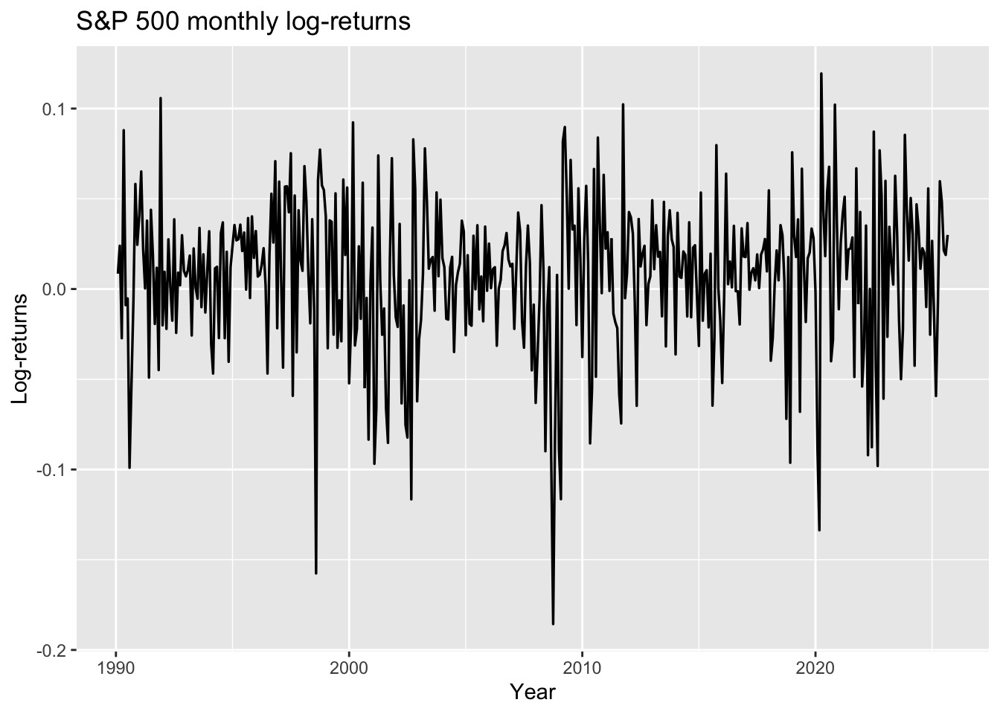</p>
</div>
</div>
<p><strong>Figure.</strong> Monthly log-returns of the S&amp;P 500 index.</p>
<p>The series fluctuates around zero with no clear trend or seasonality, consistent with the stationarity assumption required for ARIMA modeling. Occasional large spikes correspond to periods of market stress (e.g., 2008 financial crisis, 2020 COVID-19 shock), but overall the series is stable in mean and variance.</p>
</section>
<section id="stationarity-checks" class="level3">
<h3 class="anchored" data-anchor-id="stationarity-checks">4.2 Stationarity Checks</h3>
<p>We apply the Augmented Dickey–Fuller (ADF) test (H₀: unit root, i.e., non-stationary) and the KPSS test (H₀: level stationarity). For asset returns, we expect ADF to reject the unit root (small p-value) and KPSS to <em>not</em> reject stationarity (large p-value).</p>
<div class="cell">
<details open="">
<summary>Code</summary>
<div class="sourceCode cell-code" id="cb7"><pre class="sourceCode r code-with-copy"><code class="sourceCode r"><span id="cb7-1"><a href="#cb7-1" aria-hidden="true" tabindex="-1"></a><span class="fu">adf.test</span>(Y_arima)</span></code><button title="Copy to Clipboard" class="code-copy-button"><i class="bi"></i></button></pre></div>
</details>
<div class="cell-output cell-output-stderr">
<pre><code>Warning in adf.test(Y_arima): p-value smaller than printed p-value</code></pre>
</div>
<div class="cell-output cell-output-stdout">
<pre><code>
    Augmented Dickey-Fuller Test

data:  Y_arima
Dickey-Fuller = -6.3724, Lag order = 7, p-value = 0.01
alternative hypothesis: stationary</code></pre>
</div>
<details open="">
<summary>Code</summary>
<div class="sourceCode cell-code" id="cb10"><pre class="sourceCode r code-with-copy"><code class="sourceCode r"><span id="cb10-1"><a href="#cb10-1" aria-hidden="true" tabindex="-1"></a><span class="fu">kpss.test</span>(Y_arima, <span class="at">null =</span> <span class="st">"Level"</span>) </span></code><button title="Copy to Clipboard" class="code-copy-button"><i class="bi"></i></button></pre></div>
</details>
<div class="cell-output cell-output-stderr">
<pre><code>Warning in kpss.test(Y_arima, null = "Level"): p-value greater than printed
p-value</code></pre>
</div>
<div class="cell-output cell-output-stdout">
<pre><code>
    KPSS Test for Level Stationarity

data:  Y_arima
KPSS Level = 0.11552, Truncation lag parameter = 5, p-value = 0.1</code></pre>
</div>
</div>
<ul>
<li><p><strong>ADF:</strong> statistic = −6.37, lag = 7, <strong>p-value &lt; 0.01</strong> <strong>→</strong> Reject H₀ of a unit root.</p></li>
<li><p><strong>KPSS (level):</strong> statistic = 0.116, truncation lag = 5, <strong>p-value &gt; 0.10</strong> → Fail to reject H₀ of stationarity.</p></li>
</ul>
<p>The two tests point the same way: the return series is stationary in levels. No additional differencing is required for ARIMA (i.e., set <strong>d = 0</strong>). Since the plot shows no repeating seasonal pattern in returns, seasonal differencing is also unnecessary (<strong>D = 0</strong>).</p>
</section>
<section id="identification-acfpacf" class="level3">
<h3 class="anchored" data-anchor-id="identification-acfpacf">4.3 Identification (ACF/PACF)</h3>
<p>We inspect ACF/PACF of the (already stationary) series to suggest AR/MA orders.</p>
<div class="cell">
<details open="">
<summary>Code</summary>
<div class="sourceCode cell-code" id="cb13"><pre class="sourceCode r code-with-copy"><code class="sourceCode r"><span id="cb13-1"><a href="#cb13-1" aria-hidden="true" tabindex="-1"></a><span class="fu">stopifnot</span>(<span class="sc">!</span><span class="fu">is.null</span>(Y_arima))</span>
<span id="cb13-2"><a href="#cb13-2" aria-hidden="true" tabindex="-1"></a></span>
<span id="cb13-3"><a href="#cb13-3" aria-hidden="true" tabindex="-1"></a><span class="fu">library</span>(forecast)</span>
<span id="cb13-4"><a href="#cb13-4" aria-hidden="true" tabindex="-1"></a><span class="fu">library</span>(gridExtra)</span>
<span id="cb13-5"><a href="#cb13-5" aria-hidden="true" tabindex="-1"></a>lag_max <span class="ot">&lt;-</span> <span class="fu">min</span>(<span class="dv">40</span>, <span class="fu">length</span>(Y_arima) <span class="sc">-</span> <span class="dv">1</span>)</span>
<span id="cb13-6"><a href="#cb13-6" aria-hidden="true" tabindex="-1"></a>p_acf <span class="ot">&lt;-</span> <span class="fu">ggAcf</span>(Y_arima, <span class="at">lag.max =</span> lag_max) <span class="sc">+</span> <span class="fu">ggtitle</span>(<span class="st">"ACF (returns)"</span>)</span>
<span id="cb13-7"><a href="#cb13-7" aria-hidden="true" tabindex="-1"></a>p_pacf <span class="ot">&lt;-</span> <span class="fu">ggPacf</span>(Y_arima, <span class="at">lag.max =</span> lag_max) <span class="sc">+</span> <span class="fu">ggtitle</span>(<span class="st">"PACF (returns)"</span>)</span>
<span id="cb13-8"><a href="#cb13-8" aria-hidden="true" tabindex="-1"></a></span>
<span id="cb13-9"><a href="#cb13-9" aria-hidden="true" tabindex="-1"></a>gridExtra<span class="sc">::</span><span class="fu">grid.arrange</span>(p_acf, p_pacf, <span class="at">ncol =</span> <span class="dv">2</span>)</span></code><button title="Copy to Clipboard" class="code-copy-button"><i class="bi"></i></button></pre></div>
</details>
<div class="cell-output-display">
<p>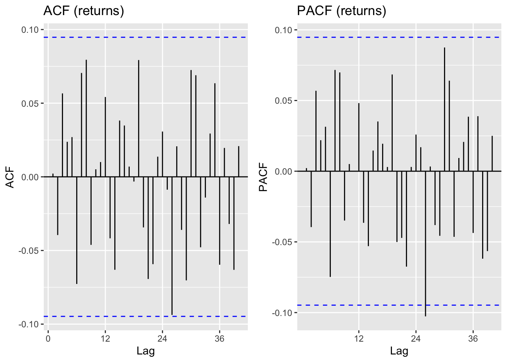</p>
</div>
</div>
<p>The plots show that most autocorrelations fall within the 95% confidence bands, with only a few small spikes at low lags. There is no clear seasonal pattern and no strong persistence in either the ACF or PACF. This suggests that the series can be modeled with very low-order ARMA terms. Candidate models include ARIMA(0,0,0) with a constant, ARIMA(1,0,0), ARIMA(0,0,1), or ARIMA(1,0,1), to be compared using AICc and residual checks.</p>
</section>
<section id="trainvalidation-split-baselines" class="level3">
<h3 class="anchored" data-anchor-id="trainvalidation-split-baselines">4.4 Train/Validation Split &amp; Baselines</h3>
<p>We split the return series into a training set and a 24-month validation set using the helper function <code>do_split()</code>. Two simple benchmark forecasts were then computed:</p>
<ul>
<li><p><strong>Naive forecast:</strong> each forecast equals the last observed value.</p></li>
<li><p><strong>Mean forecast:</strong> each forecast equals the historical average of the training set.</p></li>
</ul>
<p>These serve as baseline models to compare with ARIMA forecasts.</p>
<div class="cell">
<details open="">
<summary>Code</summary>
<div class="sourceCode cell-code" id="cb14"><pre class="sourceCode r code-with-copy"><code class="sourceCode r"><span id="cb14-1"><a href="#cb14-1" aria-hidden="true" tabindex="-1"></a>valid_size <span class="ot">&lt;-</span> <span class="dv">24</span></span>
<span id="cb14-2"><a href="#cb14-2" aria-hidden="true" tabindex="-1"></a>spl <span class="ot">&lt;-</span> <span class="fu">do_split</span>(Y_arima, valid_size)</span>
<span id="cb14-3"><a href="#cb14-3" aria-hidden="true" tabindex="-1"></a>Y_tr <span class="ot">&lt;-</span> spl<span class="sc">$</span>train; Y_va <span class="ot">&lt;-</span> spl<span class="sc">$</span>valid</span>
<span id="cb14-4"><a href="#cb14-4" aria-hidden="true" tabindex="-1"></a></span>
<span id="cb14-5"><a href="#cb14-5" aria-hidden="true" tabindex="-1"></a></span>
<span id="cb14-6"><a href="#cb14-6" aria-hidden="true" tabindex="-1"></a>fc_naive <span class="ot">&lt;-</span> <span class="fu">naive</span>(Y_tr, <span class="at">h =</span> <span class="fu">length</span>(Y_va))</span>
<span id="cb14-7"><a href="#cb14-7" aria-hidden="true" tabindex="-1"></a>fc_mean <span class="ot">&lt;-</span> <span class="fu">meanf</span>(Y_tr, <span class="at">h =</span> <span class="fu">length</span>(Y_va))</span>
<span id="cb14-8"><a href="#cb14-8" aria-hidden="true" tabindex="-1"></a>bl <span class="ot">&lt;-</span> <span class="fu">data.frame</span>(<span class="at">Model=</span><span class="fu">c</span>(<span class="st">"Naive"</span>,<span class="st">"Mean"</span>),</span>
<span id="cb14-9"><a href="#cb14-9" aria-hidden="true" tabindex="-1"></a><span class="at">MAPE=</span><span class="fu">c</span>(<span class="fu">mape</span>(Y_va, fc_naive<span class="sc">$</span>mean), <span class="fu">mape</span>(Y_va, fc_mean<span class="sc">$</span>mean)),</span>
<span id="cb14-10"><a href="#cb14-10" aria-hidden="true" tabindex="-1"></a><span class="at">RMSE=</span><span class="fu">c</span>(<span class="fu">rmse</span>(Y_va, fc_naive<span class="sc">$</span>mean), <span class="fu">rmse</span>(Y_va, fc_mean<span class="sc">$</span>mean)))</span>
<span id="cb14-11"><a href="#cb14-11" aria-hidden="true" tabindex="-1"></a>bl</span></code><button title="Copy to Clipboard" class="code-copy-button"><i class="bi"></i></button></pre></div>
</details>
<div class="cell-output cell-output-stdout">
<pre><code>  Model      MAPE       RMSE
1 Naive 258.61945 0.07620030
2  Mean  95.11283 0.03589855</code></pre>
</div>
</div>
<p>Both benchmarks perform poorly, which is expected for stock return forecasting. The mean forecast is noticeably better than the naive forecast (lower MAPE and RMSE), and will serve as the baseline to beat for ARIMA models.</p>
</section>
<section id="model-selection-aicc-diagnostics" class="level3">
<h3 class="anchored" data-anchor-id="model-selection-aicc-diagnostics">4.5 Model Selection (AICc) &amp; Diagnostics</h3>
<p>Since the return series is already stationary (<strong>d = 0, D = 0</strong>), we searched over a compact grid of AR and MA orders using AICc as the selection criterion. This procedure ensures we find a parsimonious model without overfitting.</p>
<div class="cell">
<details open="">
<summary>Code</summary>
<div class="sourceCode cell-code" id="cb16"><pre class="sourceCode r code-with-copy"><code class="sourceCode r"><span id="cb16-1"><a href="#cb16-1" aria-hidden="true" tabindex="-1"></a>d_sugg <span class="ot">&lt;-</span> <span class="dv">0</span></span>
<span id="cb16-2"><a href="#cb16-2" aria-hidden="true" tabindex="-1"></a>D_sugg <span class="ot">&lt;-</span> <span class="dv">0</span></span>
<span id="cb16-3"><a href="#cb16-3" aria-hidden="true" tabindex="-1"></a>best_arima <span class="ot">&lt;-</span> <span class="fu">fit_best_sarima</span>(Y_tr, d_sugg, D_sugg)</span>
<span id="cb16-4"><a href="#cb16-4" aria-hidden="true" tabindex="-1"></a>best_arima<span class="sc">$</span>order; best_arima<span class="sc">$</span>seasonal; best_arima<span class="sc">$</span>aicc</span></code><button title="Copy to Clipboard" class="code-copy-button"><i class="bi"></i></button></pre></div>
</details>
<div class="cell-output cell-output-stdout">
<pre><code>[1] 1 0 2</code></pre>
</div>
<div class="cell-output cell-output-stdout">
<pre><code>[1] 0 0 0</code></pre>
</div>
<div class="cell-output cell-output-stdout">
<pre><code>[1] -1390.432</code></pre>
</div>
</div>
<ul>
<li><p>Best model by AICc: <strong>ARIMA(1,0,2)</strong> (no seasonal terms).</p></li>
<li><p>AICc = <strong>−1390.43</strong>, the lowest among the candidate models.</p></li>
</ul>
<p>The chosen specification suggests that the series is best captured by a first-order autoregressive term and two moving-average terms, with no seasonal component. This is consistent with the earlier ACF/PACF inspection, which pointed to a low-order ARMA structure.</p>
<div class="cell">
<details open="">
<summary>Code</summary>
<div class="sourceCode cell-code" id="cb20"><pre class="sourceCode r code-with-copy"><code class="sourceCode r"><span id="cb20-1"><a href="#cb20-1" aria-hidden="true" tabindex="-1"></a><span class="fu">checkresiduals</span>(best_arima<span class="sc">$</span>fit) <span class="co"># Ljung–Box + residual ACF</span></span></code><button title="Copy to Clipboard" class="code-copy-button"><i class="bi"></i></button></pre></div>
</details>
<div class="cell-output-display">
<p>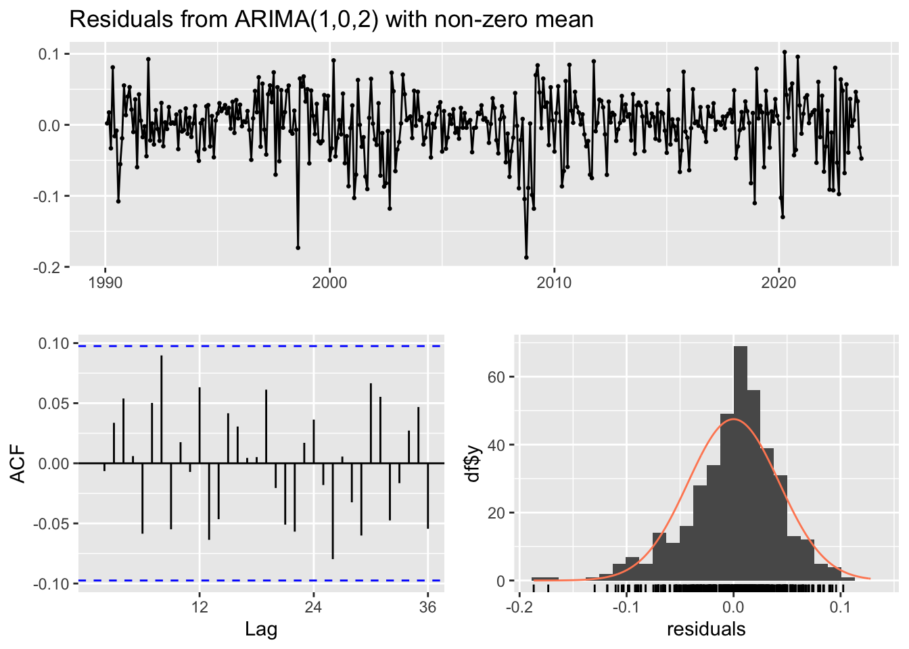</p>
</div>
<div class="cell-output cell-output-stdout">
<pre><code>
    Ljung-Box test

data:  Residuals from ARIMA(1,0,2) with non-zero mean
Q* = 19.291, df = 21, p-value = 0.5665

Model df: 3.   Total lags used: 24</code></pre>
</div>
</div>
<ul>
<li><p><strong>Time plot:</strong> residuals fluctuate around zero with no obvious structure.</p></li>
<li><p><strong>Residual ACF:</strong> most autocorrelations lie within the 95% bounds → no strong remaining dependence.</p></li>
<li><p><strong>Histogram/Normal fit:</strong> residuals are roughly centered at zero and approximately symmetric, though heavy tails are visible (common in financial returns).</p></li>
<li><p><strong>Ljung–Box test:</strong> Q = 19.29 (df = 21), p = 0.57 → fail to reject the null of white noise.</p></li>
</ul>
<p>The <strong>ARIMA(1,0,2)</strong> model adequately captures the linear dependence in the return series. Residuals behave like white noise, satisfying the key diagnostic checks. However, the presence of heavy tails suggests possible volatility clustering, which ARIMA does not address. For a more refined analysis, a GARCH-type model could be considered to model the conditional variance.</p>
</section>
<section id="validation-forecast-error" class="level3">
<h3 class="anchored" data-anchor-id="validation-forecast-error">4.6 Validation Forecast &amp; Error</h3>
<p>We generated out-of-sample forecasts for the 24-month validation period using the selected <strong>ARIMA(1,0,2)</strong> model. Forecast accuracy was assessed with MAPE and RMSE.</p>
<div class="cell">
<details open="">
<summary>Code</summary>
<div class="sourceCode cell-code" id="cb22"><pre class="sourceCode r code-with-copy"><code class="sourceCode r"><span id="cb22-1"><a href="#cb22-1" aria-hidden="true" tabindex="-1"></a>fc_val <span class="ot">&lt;-</span> <span class="fu">forecast</span>(best_arima<span class="sc">$</span>fit, <span class="at">h =</span> <span class="fu">length</span>(Y_va))</span>
<span id="cb22-2"><a href="#cb22-2" aria-hidden="true" tabindex="-1"></a>va_mape <span class="ot">&lt;-</span> <span class="fu">mape</span>(Y_va, fc_val<span class="sc">$</span>mean)</span>
<span id="cb22-3"><a href="#cb22-3" aria-hidden="true" tabindex="-1"></a>va_rmse <span class="ot">&lt;-</span> <span class="fu">rmse</span>(Y_va, fc_val<span class="sc">$</span>mean)</span>
<span id="cb22-4"><a href="#cb22-4" aria-hidden="true" tabindex="-1"></a>va_mape; va_rmse</span></code><button title="Copy to Clipboard" class="code-copy-button"><i class="bi"></i></button></pre></div>
</details>
<div class="cell-output cell-output-stdout">
<pre><code>[1] 105.8257</code></pre>
</div>
<div class="cell-output cell-output-stdout">
<pre><code>[1] 0.03757483</code></pre>
</div>
</div>
<p>The <strong>ARIMA(1,0,2)</strong> model performs better than the naive baseline (<strong>MAPE ≈ 259, RMSE ≈ 0.076</strong>) and slightly better than the mean forecast (<strong>MAPE ≈ 95, RMSE ≈ 0.036</strong>). While RMSE shows an improvement, MAPE remains very high, reflecting the well-known difficulty of predicting asset returns. Overall, the ARIMA model captures some short-term dynamics but does not yield highly accurate forecasts in economic terms.</p>
<div class="cell">
<details open="">
<summary>Code</summary>
<div class="sourceCode cell-code" id="cb25"><pre class="sourceCode r code-with-copy"><code class="sourceCode r"><span id="cb25-1"><a href="#cb25-1" aria-hidden="true" tabindex="-1"></a><span class="fu">autoplot</span>(fc_val) <span class="sc">+</span> <span class="fu">autolayer</span>(Y_va, <span class="at">series =</span> <span class="st">"Actual"</span>) <span class="sc">+</span> <span class="fu">ggtitle</span>(<span class="st">"ARIMA validation: forecast vs actual"</span>)</span></code><button title="Copy to Clipboard" class="code-copy-button"><i class="bi"></i></button></pre></div>
</details>
<div class="cell-output-display">
<p>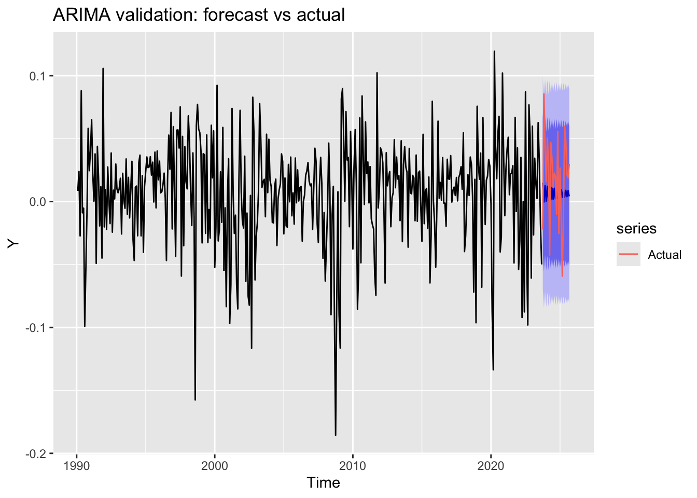</p>
</div>
</div>
<p><strong>Figure X.</strong> ARIMA validation forecast versus actual returns.</p>
<p>The red line shows the model forecast for the 24-month validation period, with blue bands indicating 80% and 95% prediction intervals. Actual returns (black) fluctuate widely and often fall inside the prediction bands, but point forecasts remain close to zero. This highlights that while the model captures overall variability, individual return movements are essentially unpredictable.</p>
</section>
<section id="refit-on-full-data-multi-step-forecast" class="level3">
<h3 class="anchored" data-anchor-id="refit-on-full-data-multi-step-forecast">4.7 Refit on Full Data &amp; Multi-step Forecast</h3>
<p>Using the ARIMA orders selected on the training set, we refit the model on the entire return series to leverage all available information:</p>
<div class="cell">
<details open="">
<summary>Code</summary>
<div class="sourceCode cell-code" id="cb26"><pre class="sourceCode r code-with-copy"><code class="sourceCode r"><span id="cb26-1"><a href="#cb26-1" aria-hidden="true" tabindex="-1"></a>fit_final <span class="ot">&lt;-</span> <span class="fu">Arima</span>(Y_arima, <span class="at">order =</span> best_arima<span class="sc">$</span>order, <span class="at">seasonal =</span> best_arima<span class="sc">$</span>seasonal)</span>
<span id="cb26-2"><a href="#cb26-2" aria-hidden="true" tabindex="-1"></a>fc <span class="ot">&lt;-</span> <span class="fu">forecast</span>(fit_final, <span class="at">h =</span> <span class="dv">12</span>)</span>
<span id="cb26-3"><a href="#cb26-3" aria-hidden="true" tabindex="-1"></a></span>
<span id="cb26-4"><a href="#cb26-4" aria-hidden="true" tabindex="-1"></a>start_fc <span class="ot">&lt;-</span> <span class="fu">time</span>(fc<span class="sc">$</span>mean)[<span class="dv">1</span>]</span>
<span id="cb26-5"><a href="#cb26-5" aria-hidden="true" tabindex="-1"></a>end_fc   <span class="ot">&lt;-</span> <span class="fu">time</span>(fc<span class="sc">$</span>mean)[<span class="fu">length</span>(fc<span class="sc">$</span>mean)]</span>
<span id="cb26-6"><a href="#cb26-6" aria-hidden="true" tabindex="-1"></a>t0       <span class="ot">&lt;-</span> <span class="fu">tail</span>(<span class="fu">time</span>(Y_arima), <span class="dv">120</span>)[<span class="dv">1</span>]   <span class="co"># show last ~10 years (120 months)</span></span>
<span id="cb26-7"><a href="#cb26-7" aria-hidden="true" tabindex="-1"></a></span>
<span id="cb26-8"><a href="#cb26-8" aria-hidden="true" tabindex="-1"></a><span class="fu">autoplot</span>(fc) <span class="sc">+</span></span>
<span id="cb26-9"><a href="#cb26-9" aria-hidden="true" tabindex="-1"></a>  <span class="fu">geom_vline</span>(<span class="at">xintercept =</span> start_fc, <span class="at">linetype =</span> <span class="st">"dashed"</span>) <span class="sc">+</span></span>
<span id="cb26-10"><a href="#cb26-10" aria-hidden="true" tabindex="-1"></a>  <span class="fu">autolayer</span>(<span class="fu">fitted</span>(fit_final), <span class="at">series =</span> <span class="st">"Fitted"</span>, <span class="at">size =</span> <span class="fl">0.6</span>, <span class="at">alpha =</span> <span class="fl">0.8</span>) <span class="sc">+</span></span>
<span id="cb26-11"><a href="#cb26-11" aria-hidden="true" tabindex="-1"></a>  <span class="fu">autolayer</span>(fc<span class="sc">$</span>mean,         <span class="at">series =</span> <span class="st">"Forecast"</span>, <span class="at">size =</span> <span class="fl">1.1</span>) <span class="sc">+</span></span>
<span id="cb26-12"><a href="#cb26-12" aria-hidden="true" tabindex="-1"></a>  <span class="fu">labs</span>(<span class="at">title =</span> <span class="st">"ARIMA final forecast (12 months)"</span>, <span class="at">y =</span> <span class="st">"Log-returns"</span>) <span class="sc">+</span></span>
<span id="cb26-13"><a href="#cb26-13" aria-hidden="true" tabindex="-1"></a>  <span class="fu">theme_minimal</span>(<span class="at">base_size =</span> <span class="dv">12</span>)</span></code><button title="Copy to Clipboard" class="code-copy-button"><i class="bi"></i></button></pre></div>
</details>
<div class="cell-output cell-output-stderr">
<pre><code>Warning: Using `size` aesthetic for lines was deprecated in ggplot2 3.4.0.
ℹ Please use `linewidth` instead.
ℹ The deprecated feature was likely used in the forecast package.
  Please report the issue at &lt;https://github.com/robjhyndman/forecast/issues&gt;.</code></pre>
</div>
<div class="cell-output-display">
<p>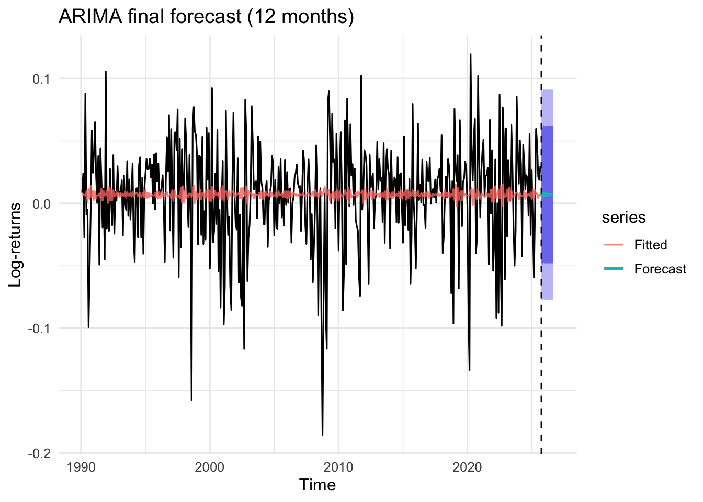</p>
</div>
</div>
<p><strong>Figure X.</strong> ARIMA(1,0,2) 12-month ahead forecast.<br>
</p>
<p>The black line shows the full history of monthly S&amp;P 500 log-returns, while the shaded region represents forecasts for the next 12 months. The point forecast (center of the band) remains close to zero, consistent with returns having no predictable trend. The 80% and 95% prediction intervals are wide, reflecting substantial uncertainty: the model is more informative about the range of possible outcomes than the exact path of future returns.</p>
</section>
</section>
<section id="sarima-pipeline-on-seasonal-eps" class="level2">
<h2 class="anchored" data-anchor-id="sarima-pipeline-on-seasonal-eps">5. SARIMA Pipeline (on Seasonal EPS)</h2>
<p><em>Run this section if <code>mode</code> is <code>"sarima"</code> or <code>"both"</code>.</em></p>
<section id="explore-visualize-1" class="level3">
<h3 class="anchored" data-anchor-id="explore-visualize-1">5.1 Explore &amp; Visualize</h3>
<div class="cell">
<details open="">
<summary>Code</summary>
<div class="sourceCode cell-code" id="cb28"><pre class="sourceCode r code-with-copy"><code class="sourceCode r"><span id="cb28-1"><a href="#cb28-1" aria-hidden="true" tabindex="-1"></a><span class="fu">stopifnot</span>(<span class="sc">!</span><span class="fu">is.null</span>(Y_sarima))</span>
<span id="cb28-2"><a href="#cb28-2" aria-hidden="true" tabindex="-1"></a>label <span class="ot">&lt;-</span> <span class="fu">attr</span>(Y_sarima, <span class="st">"label"</span>)</span>
<span id="cb28-3"><a href="#cb28-3" aria-hidden="true" tabindex="-1"></a>stl_obj <span class="ot">&lt;-</span> <span class="fu">stl</span>(Y_sarima, <span class="at">s.window =</span> <span class="st">"periodic"</span>)</span>
<span id="cb28-4"><a href="#cb28-4" aria-hidden="true" tabindex="-1"></a>stl_df <span class="ot">&lt;-</span> <span class="fu">data.frame</span>(</span>
<span id="cb28-5"><a href="#cb28-5" aria-hidden="true" tabindex="-1"></a><span class="at">t =</span> <span class="fu">as.numeric</span>(<span class="fu">time</span>(Y_sarima)),</span>
<span id="cb28-6"><a href="#cb28-6" aria-hidden="true" tabindex="-1"></a><span class="at">y =</span> <span class="fu">as.numeric</span>(Y_sarima),</span>
<span id="cb28-7"><a href="#cb28-7" aria-hidden="true" tabindex="-1"></a><span class="at">trend =</span> stl_obj<span class="sc">$</span>time.series[,<span class="st">"trend"</span>],</span>
<span id="cb28-8"><a href="#cb28-8" aria-hidden="true" tabindex="-1"></a><span class="at">seasonal =</span> stl_obj<span class="sc">$</span>time.series[,<span class="st">"seasonal"</span>],</span>
<span id="cb28-9"><a href="#cb28-9" aria-hidden="true" tabindex="-1"></a><span class="at">remainder =</span> stl_obj<span class="sc">$</span>time.series[,<span class="st">"remainder"</span>]</span>
<span id="cb28-10"><a href="#cb28-10" aria-hidden="true" tabindex="-1"></a>)</span>
<span id="cb28-11"><a href="#cb28-11" aria-hidden="true" tabindex="-1"></a></span>
<span id="cb28-12"><a href="#cb28-12" aria-hidden="true" tabindex="-1"></a><span class="co"># Level plot</span></span>
<span id="cb28-13"><a href="#cb28-13" aria-hidden="true" tabindex="-1"></a><span class="fu">library</span>(ggplot2)</span>
<span id="cb28-14"><a href="#cb28-14" aria-hidden="true" tabindex="-1"></a><span class="fu">ggplot</span>(stl_df, <span class="fu">aes</span>(t, y)) <span class="sc">+</span> <span class="fu">geom_line</span>(<span class="at">linewidth =</span> <span class="fl">0.6</span>) <span class="sc">+</span></span>
<span id="cb28-15"><a href="#cb28-15" aria-hidden="true" tabindex="-1"></a><span class="fu">labs</span>(<span class="at">title =</span> label, <span class="at">x =</span> <span class="st">"Year"</span>, <span class="at">y =</span> <span class="st">"EPS"</span>)</span></code><button title="Copy to Clipboard" class="code-copy-button"><i class="bi"></i></button></pre></div>
</details>
<div class="cell-output-display">
<p>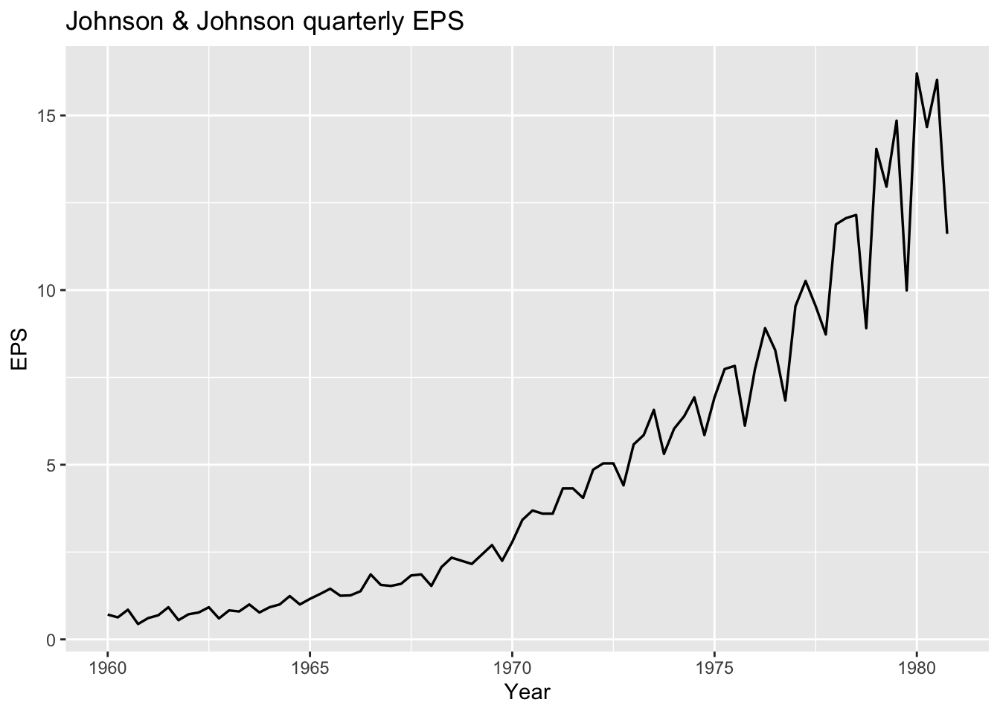</p>
</div>
</div>
<p>We begin by decomposing the Johnson &amp; Johnson quarterly EPS with STL, which reveals a smooth upward trend and strong, regular quarterly seasonality. The level plot confirms non-stationarity in both trend and seasonality, motivating a SARIMA approach with seasonal differencing (<strong>m = 4</strong>). Subsequent tests and ACF/PACF will be performed on the differenced series.</p>
<div class="cell">
<details open="">
<summary>Code</summary>
<div class="sourceCode cell-code" id="cb29"><pre class="sourceCode r code-with-copy"><code class="sourceCode r"><span id="cb29-1"><a href="#cb29-1" aria-hidden="true" tabindex="-1"></a>stl_df <span class="ot">&lt;-</span> <span class="fu">data.frame</span>(</span>
<span id="cb29-2"><a href="#cb29-2" aria-hidden="true" tabindex="-1"></a>  <span class="at">t         =</span> <span class="fu">as.numeric</span>(<span class="fu">time</span>(Y_sarima)),</span>
<span id="cb29-3"><a href="#cb29-3" aria-hidden="true" tabindex="-1"></a>  <span class="at">y         =</span> <span class="fu">as.numeric</span>(Y_sarima),</span>
<span id="cb29-4"><a href="#cb29-4" aria-hidden="true" tabindex="-1"></a>  <span class="at">trend     =</span> <span class="fu">as.numeric</span>(stl_obj<span class="sc">$</span>time.series[, <span class="st">"trend"</span>]),</span>
<span id="cb29-5"><a href="#cb29-5" aria-hidden="true" tabindex="-1"></a>  <span class="at">seasonal  =</span> <span class="fu">as.numeric</span>(stl_obj<span class="sc">$</span>time.series[, <span class="st">"seasonal"</span>]),</span>
<span id="cb29-6"><a href="#cb29-6" aria-hidden="true" tabindex="-1"></a>  <span class="at">remainder =</span> <span class="fu">as.numeric</span>(stl_obj<span class="sc">$</span>time.series[, <span class="st">"remainder"</span>])</span>
<span id="cb29-7"><a href="#cb29-7" aria-hidden="true" tabindex="-1"></a>)</span>
<span id="cb29-8"><a href="#cb29-8" aria-hidden="true" tabindex="-1"></a></span>
<span id="cb29-9"><a href="#cb29-9" aria-hidden="true" tabindex="-1"></a><span class="fu">ggplot</span>(stl_df, <span class="fu">aes</span>(t, trend)) <span class="sc">+</span></span>
<span id="cb29-10"><a href="#cb29-10" aria-hidden="true" tabindex="-1"></a>  <span class="fu">geom_line</span>(<span class="at">linewidth =</span> <span class="fl">0.6</span>) <span class="sc">+</span></span>
<span id="cb29-11"><a href="#cb29-11" aria-hidden="true" tabindex="-1"></a>  <span class="fu">labs</span>(<span class="at">title =</span> <span class="st">"STL Trend"</span>, <span class="at">x =</span> <span class="st">"Year"</span>, <span class="at">y =</span> <span class="cn">NULL</span>)</span></code><button title="Copy to Clipboard" class="code-copy-button"><i class="bi"></i></button></pre></div>
</details>
<div class="cell-output-display">
<p>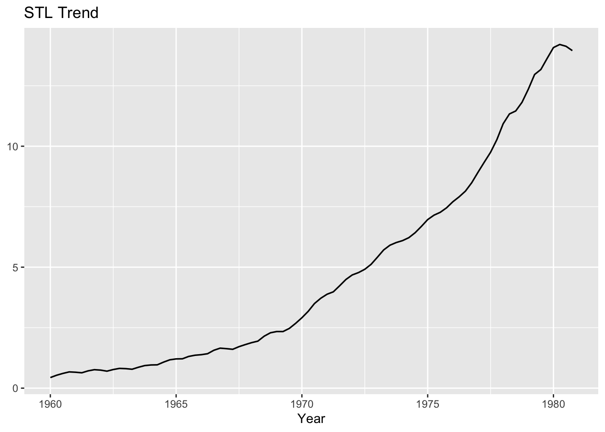</p>
</div>
</div>
<p><strong>Figure.</strong> STL trend component of Johnson &amp; Johnson quarterly EPS, 1960–1980.</p>
<p>The series shows strong long-term growth with an accelerating upward slope through the 1970s, confirming the need for differencing in SARIMA modeling.</p>
<div class="cell">
<details open="">
<summary>Code</summary>
<div class="sourceCode cell-code" id="cb30"><pre class="sourceCode r code-with-copy"><code class="sourceCode r"><span id="cb30-1"><a href="#cb30-1" aria-hidden="true" tabindex="-1"></a><span class="fu">ggplot</span>(stl_df, <span class="fu">aes</span>(t, seasonal)) <span class="sc">+</span> <span class="fu">geom_line</span>(<span class="at">linewidth =</span> <span class="fl">0.6</span>) <span class="sc">+</span></span>
<span id="cb30-2"><a href="#cb30-2" aria-hidden="true" tabindex="-1"></a><span class="fu">labs</span>(<span class="at">title =</span> <span class="st">"STL Seasonal"</span>, <span class="at">x =</span> <span class="st">"Year"</span>, <span class="at">y =</span> <span class="cn">NULL</span>)</span></code><button title="Copy to Clipboard" class="code-copy-button"><i class="bi"></i></button></pre></div>
</details>
<div class="cell-output-display">
<p>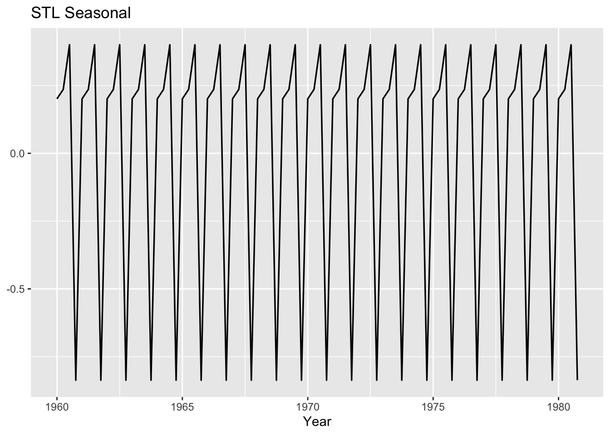</p>
</div>
</div>
<p><strong>Figure</strong>. STL seasonal component of Johnson &amp; Johnson quarterly EPS.</p>
<p>The decomposition reveals a stable quarterly pattern repeating every four quarters, confirming strong seasonality and the need for a SARIMA model with seasonal differencing.</p>
<div class="cell">
<details open="">
<summary>Code</summary>
<div class="sourceCode cell-code" id="cb31"><pre class="sourceCode r code-with-copy"><code class="sourceCode r"><span id="cb31-1"><a href="#cb31-1" aria-hidden="true" tabindex="-1"></a><span class="fu">ggplot</span>(stl_df, <span class="fu">aes</span>(t, remainder)) <span class="sc">+</span> <span class="fu">geom_line</span>(<span class="at">linewidth =</span> <span class="fl">0.6</span>) <span class="sc">+</span></span>
<span id="cb31-2"><a href="#cb31-2" aria-hidden="true" tabindex="-1"></a><span class="fu">labs</span>(<span class="at">title =</span> <span class="st">"STL Remainder"</span>, <span class="at">x =</span> <span class="st">"Year"</span>, <span class="at">y =</span> <span class="cn">NULL</span>)</span></code><button title="Copy to Clipboard" class="code-copy-button"><i class="bi"></i></button></pre></div>
</details>
<div class="cell-output-display">
<p>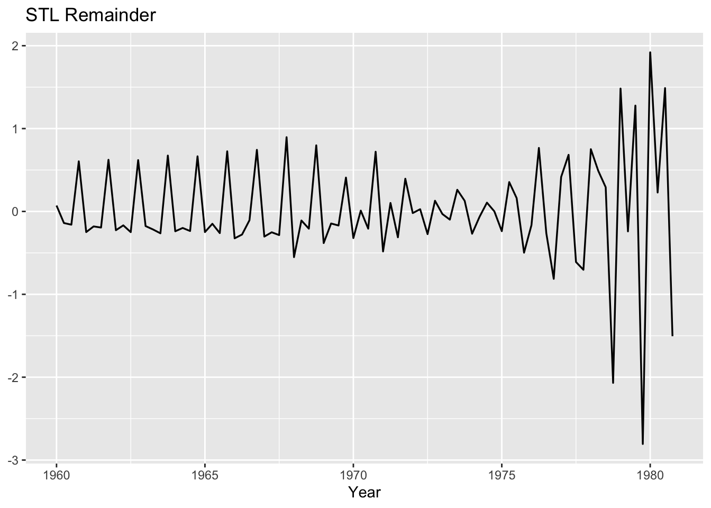</p>
</div>
</div>
<p><strong>Figure</strong>. STL remainder of Johnson &amp; Johnson quarterly EPS.</p>
<p>The residual component is mostly noise around zero, but volatility increases markedly in the late 1970s, with large shocks that may limit the precision of SARIMA forecasts.</p>
</section>
<section id="stationarity-differencing-suggestions" class="level3">
<h3 class="anchored" data-anchor-id="stationarity-differencing-suggestions">5.2 Stationarity &amp; Differencing Suggestions</h3>
<p>We use <code>ndiffs</code> (non-seasonal) and <code>nsdiffs</code> (seasonal) to suggest \(d\) and \(D\).</p>
<div class="cell">
<details open="">
<summary>Code</summary>
<div class="sourceCode cell-code" id="cb32"><pre class="sourceCode r code-with-copy"><code class="sourceCode r"><span id="cb32-1"><a href="#cb32-1" aria-hidden="true" tabindex="-1"></a><span class="fu">adf.test</span>(Y_sarima)</span></code><button title="Copy to Clipboard" class="code-copy-button"><i class="bi"></i></button></pre></div>
</details>
<div class="cell-output cell-output-stderr">
<pre><code>Warning in adf.test(Y_sarima): p-value greater than printed p-value</code></pre>
</div>
<div class="cell-output cell-output-stdout">
<pre><code>
    Augmented Dickey-Fuller Test

data:  Y_sarima
Dickey-Fuller = 1.9321, Lag order = 4, p-value = 0.99
alternative hypothesis: stationary</code></pre>
</div>
</div>
<div class="cell">
<details open="">
<summary>Code</summary>
<div class="sourceCode cell-code" id="cb35"><pre class="sourceCode r code-with-copy"><code class="sourceCode r"><span id="cb35-1"><a href="#cb35-1" aria-hidden="true" tabindex="-1"></a><span class="fu">kpss.test</span>(Y_sarima, <span class="at">null =</span> <span class="st">"Level"</span>)</span></code><button title="Copy to Clipboard" class="code-copy-button"><i class="bi"></i></button></pre></div>
</details>
<div class="cell-output cell-output-stderr">
<pre><code>Warning in kpss.test(Y_sarima, null = "Level"): p-value smaller than printed
p-value</code></pre>
</div>
<div class="cell-output cell-output-stdout">
<pre><code>
    KPSS Test for Level Stationarity

data:  Y_sarima
KPSS Level = 1.9804, Truncation lag parameter = 3, p-value = 0.01</code></pre>
</div>
</div>
<p>We ran ADF (H₀: unit root) and KPSS (H₀: level stationarity) on the J&amp;J EPS level series.</p>
<ul>
<li><p><strong>ADF:</strong> DF = 1.93, p ≈ 0.99 → fail to reject unit root (series is non-stationary).</p></li>
<li><p><strong>KPSS (level):</strong> stat = 1.98, p &lt; 0.01 → reject stationarity.</p></li>
</ul>
<p>Both unit-root tests and the automatic rules agree: the series needs one seasonal difference and one non-seasonal difference. This matches the strong quarterly pattern and upward trend seen in the STL plots.</p>
<div class="cell">
<details open="">
<summary>Code</summary>
<div class="sourceCode cell-code" id="cb38"><pre class="sourceCode r code-with-copy"><code class="sourceCode r"><span id="cb38-1"><a href="#cb38-1" aria-hidden="true" tabindex="-1"></a>d_sugg <span class="ot">&lt;-</span> <span class="fu">ndiffs</span>(Y_sarima)</span>
<span id="cb38-2"><a href="#cb38-2" aria-hidden="true" tabindex="-1"></a>D_sugg <span class="ot">&lt;-</span> <span class="fu">nsdiffs</span>(Y_sarima)</span>
<span id="cb38-3"><a href="#cb38-3" aria-hidden="true" tabindex="-1"></a><span class="fu">c</span>(<span class="at">d_sugg =</span> d_sugg, <span class="at">D_sugg =</span> D_sugg, <span class="at">m =</span> <span class="fu">frequency</span>(Y_sarima))</span></code><button title="Copy to Clipboard" class="code-copy-button"><i class="bi"></i></button></pre></div>
</details>
<div class="cell-output cell-output-stdout">
<pre><code>d_sugg D_sugg      m 
     1      1      4 </code></pre>
</div>
</div>
<p>The Johnson &amp; Johnson EPS series requires <strong>SARIMA with (d = 1, D = 1, m = 4)</strong>. In practice, you'll work with models of the form: SARIMA(p,1,q)×(P,1,Q)4 and select the specific AR/MA orders <code>(p,q,P,Q)</code> by inspecting ACF/PACF and comparing AICc across candidates.</p>
</section>
<section id="identification-acfpacf-of-differenced-series" class="level3">
<h3 class="anchored" data-anchor-id="identification-acfpacf-of-differenced-series">5.3 Identification (ACF/PACF of differenced series)</h3>
<p>We difference the EPS series with <strong>d = 1</strong> and <strong>D = 1 (m = 4)</strong>, then inspect ACF/PACF to choose (p,q)×(P,Q)4.</p>
<div class="cell">
<details open="">
<summary>Code</summary>
<div class="sourceCode cell-code" id="cb40"><pre class="sourceCode r code-with-copy"><code class="sourceCode r"><span id="cb40-1"><a href="#cb40-1" aria-hidden="true" tabindex="-1"></a><span class="fu">library</span>(forecast)</span>
<span id="cb40-2"><a href="#cb40-2" aria-hidden="true" tabindex="-1"></a><span class="fu">library</span>(gridExtra)</span>
<span id="cb40-3"><a href="#cb40-3" aria-hidden="true" tabindex="-1"></a></span>
<span id="cb40-4"><a href="#cb40-4" aria-hidden="true" tabindex="-1"></a>Y_diff <span class="ot">&lt;-</span> <span class="fu">diff</span>(Y_sarima, <span class="at">differences =</span> d_sugg)</span>
<span id="cb40-5"><a href="#cb40-5" aria-hidden="true" tabindex="-1"></a><span class="cf">if</span> (D_sugg <span class="sc">&gt;</span> <span class="dv">0</span>) Y_diff <span class="ot">&lt;-</span> <span class="fu">diff</span>(Y_diff, <span class="at">lag =</span> <span class="fu">frequency</span>(Y_sarima), <span class="at">differences =</span> D_sugg)</span>
<span id="cb40-6"><a href="#cb40-6" aria-hidden="true" tabindex="-1"></a></span>
<span id="cb40-7"><a href="#cb40-7" aria-hidden="true" tabindex="-1"></a>lag_max <span class="ot">&lt;-</span> <span class="fu">min</span>(<span class="dv">40</span>, <span class="fu">length</span>(<span class="fu">na.omit</span>(Y_diff)) <span class="sc">-</span> <span class="dv">1</span>)</span>
<span id="cb40-8"><a href="#cb40-8" aria-hidden="true" tabindex="-1"></a>p_acf  <span class="ot">&lt;-</span> <span class="fu">ggAcf</span>(<span class="fu">na.omit</span>(Y_diff), <span class="at">lag.max =</span> lag_max)  <span class="sc">+</span> <span class="fu">ggtitle</span>(<span class="st">"ACF (diffed)"</span>)</span>
<span id="cb40-9"><a href="#cb40-9" aria-hidden="true" tabindex="-1"></a>p_pacf <span class="ot">&lt;-</span> <span class="fu">ggPacf</span>(<span class="fu">na.omit</span>(Y_diff), <span class="at">lag.max =</span> lag_max) <span class="sc">+</span> <span class="fu">ggtitle</span>(<span class="st">"PACF (diffed)"</span>)</span>
<span id="cb40-10"><a href="#cb40-10" aria-hidden="true" tabindex="-1"></a></span>
<span id="cb40-11"><a href="#cb40-11" aria-hidden="true" tabindex="-1"></a>gridExtra<span class="sc">::</span><span class="fu">grid.arrange</span>(p_acf, p_pacf, <span class="at">ncol =</span> <span class="dv">2</span>)</span></code><button title="Copy to Clipboard" class="code-copy-button"><i class="bi"></i></button></pre></div>
</details>
<div class="cell-output-display">
<p>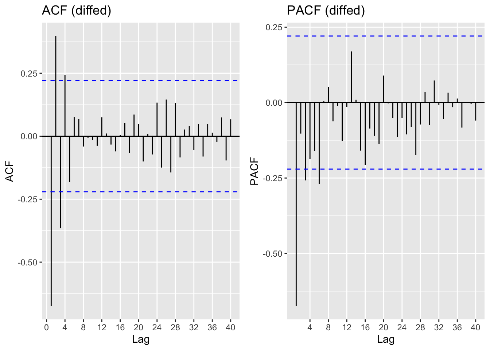</p>
</div>
</div>
<p>The ACF shows a strong negative spike at lag 1 and at the seasonal lag 4, while the PACF also drops sharply at lag 1. This pattern points to a non-seasonal MA(1) and a seasonal MA(1), making <strong>SARIMA(0,1,1)×(0,1,1)4</strong> the leading candidate model.</p>
</section>
<section id="trainvalidation-baselines-selection-diagnostics" class="level3">
<h3 class="anchored" data-anchor-id="trainvalidation-baselines-selection-diagnostics">5.4 Train/Validation, Baselines, Selection &amp; Diagnostics</h3>
<p>We split J&amp;J EPS into a training set and an 8-quarter validation set. Two baseline forecasts were computed:</p>
<ul>
<li><p><strong>Naive:</strong> repeats the last observed value.</p></li>
<li><p><strong>Seasonal naive:</strong> repeats the value from the same quarter last year (lag 4).</p></li>
</ul>
<p>We then searched a compact SARIMA grid around the suggested differencing orders <strong>d = 1</strong>, <strong>D = 1 (m = 4)</strong> and selected the model with the lowest AICc.</p>
<div class="cell">
<details open="">
<summary>Code</summary>
<div class="sourceCode cell-code" id="cb41"><pre class="sourceCode r code-with-copy"><code class="sourceCode r"><span id="cb41-1"><a href="#cb41-1" aria-hidden="true" tabindex="-1"></a>valid_size <span class="ot">&lt;-</span> <span class="dv">8</span> <span class="co"># two years of quarters</span></span>
<span id="cb41-2"><a href="#cb41-2" aria-hidden="true" tabindex="-1"></a>spl <span class="ot">&lt;-</span> <span class="fu">do_split</span>(Y_sarima, valid_size)</span>
<span id="cb41-3"><a href="#cb41-3" aria-hidden="true" tabindex="-1"></a>Y_tr <span class="ot">&lt;-</span> spl<span class="sc">$</span>train; Y_va <span class="ot">&lt;-</span> spl<span class="sc">$</span>valid</span>
<span id="cb41-4"><a href="#cb41-4" aria-hidden="true" tabindex="-1"></a></span>
<span id="cb41-5"><a href="#cb41-5" aria-hidden="true" tabindex="-1"></a>fc_naive <span class="ot">&lt;-</span> <span class="fu">naive</span>(Y_tr, <span class="at">h =</span> <span class="fu">length</span>(Y_va))</span>
<span id="cb41-6"><a href="#cb41-6" aria-hidden="true" tabindex="-1"></a>fc_snaive <span class="ot">&lt;-</span> <span class="fu">snaive</span>(Y_tr, <span class="at">h =</span> <span class="fu">length</span>(Y_va))</span>
<span id="cb41-7"><a href="#cb41-7" aria-hidden="true" tabindex="-1"></a>bl <span class="ot">&lt;-</span> <span class="fu">data.frame</span>(<span class="at">Model=</span><span class="fu">c</span>(<span class="st">"Naive"</span>,<span class="st">"Seasonal Naive"</span>),</span>
<span id="cb41-8"><a href="#cb41-8" aria-hidden="true" tabindex="-1"></a><span class="at">MAPE=</span><span class="fu">c</span>(<span class="fu">mape</span>(Y_va, fc_naive<span class="sc">$</span>mean), <span class="fu">mape</span>(Y_va, fc_snaive<span class="sc">$</span>mean)),</span>
<span id="cb41-9"><a href="#cb41-9" aria-hidden="true" tabindex="-1"></a><span class="at">RMSE=</span><span class="fu">c</span>(<span class="fu">rmse</span>(Y_va, fc_naive<span class="sc">$</span>mean), <span class="fu">rmse</span>(Y_va, fc_snaive<span class="sc">$</span>mean)))</span>
<span id="cb41-10"><a href="#cb41-10" aria-hidden="true" tabindex="-1"></a>bl</span></code><button title="Copy to Clipboard" class="code-copy-button"><i class="bi"></i></button></pre></div>
</details>
<div class="cell-output cell-output-stdout">
<pre><code>           Model     MAPE     RMSE
1          Naive 33.81261 5.283621
2 Seasonal Naive 17.89911 2.776540</code></pre>
</div>
</div>
<p>The seasonal naive forecast clearly outperforms the plain naive, with much lower MAPE (<strong>17.9 vs.&nbsp;33.8</strong>) and RMSE (<strong>2.78 vs.&nbsp;5.28</strong>). This confirms the importance of quarterly seasonality in the J&amp;J EPS series.</p>
<div class="cell">
<details open="">
<summary>Code</summary>
<div class="sourceCode cell-code" id="cb43"><pre class="sourceCode r code-with-copy"><code class="sourceCode r"><span id="cb43-1"><a href="#cb43-1" aria-hidden="true" tabindex="-1"></a>best_sarima <span class="ot">&lt;-</span> <span class="fu">fit_best_sarima</span>(Y_tr, d_sugg, D_sugg)</span>
<span id="cb43-2"><a href="#cb43-2" aria-hidden="true" tabindex="-1"></a>best_sarima<span class="sc">$</span>order; best_sarima<span class="sc">$</span>seasonal; best_sarima<span class="sc">$</span>aicc</span></code><button title="Copy to Clipboard" class="code-copy-button"><i class="bi"></i></button></pre></div>
</details>
<div class="cell-output cell-output-stdout">
<pre><code>[1] 0 1 1</code></pre>
</div>
<div class="cell-output cell-output-stdout">
<pre><code>[1] 0 1 0</code></pre>
</div>
<div class="cell-output cell-output-stdout">
<pre><code>[1] 78.56712</code></pre>
</div>
</div>
<p>The selected model is <strong>SARIMA(0,1,1) × (0,1,0)4</strong>​ with <strong>AICc = 78.6</strong>. This captures both the trend (via <strong>d = 1</strong>) and quarterly seasonality (via <strong>D = 1</strong>), with a simple <strong>MA(1)</strong> term for short-run dynamics.</p>
<div class="cell">
<details open="">
<summary>Code</summary>
<div class="sourceCode cell-code" id="cb47"><pre class="sourceCode r code-with-copy"><code class="sourceCode r"><span id="cb47-1"><a href="#cb47-1" aria-hidden="true" tabindex="-1"></a><span class="fu">checkresiduals</span>(best_sarima<span class="sc">$</span>fit)</span></code><button title="Copy to Clipboard" class="code-copy-button"><i class="bi"></i></button></pre></div>
</details>
<div class="cell-output-display">
<p>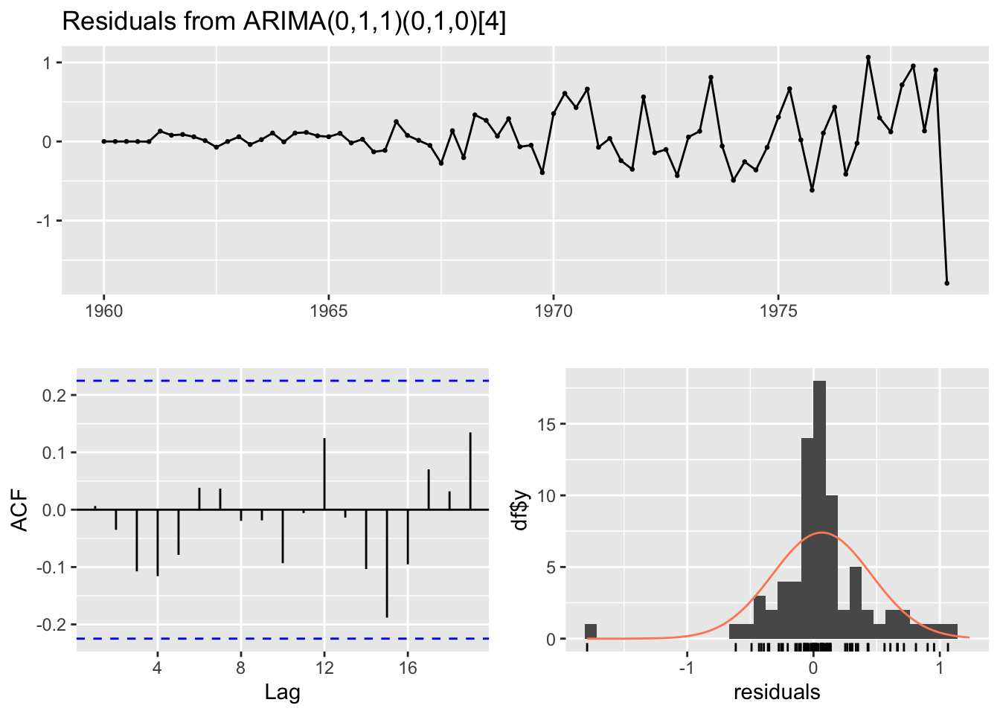</p>
</div>
<div class="cell-output cell-output-stdout">
<pre><code>
    Ljung-Box test

data:  Residuals from ARIMA(0,1,1)(0,1,0)[4]
Q* = 2.9338, df = 7, p-value = 0.8911

Model df: 1.   Total lags used: 8</code></pre>
</div>
</div>
<ul>
<li><p>The <strong>residuals</strong> fluctuate around zero with no clear structure.</p></li>
<li><p>The <strong>residual ACF</strong> indicates that autocorrelations are small and within the 95% bounds, suggesting no remaining linear dependence.</p></li>
<li><p>The <strong>histogram of residuals</strong> is approximately symmetric around zero, though a few outliers are visible.</p></li>
<li><p>The <strong>Ljung–Box test</strong> yields Q*=2.93 with 7 degrees of freedom and p-value = 0.89, so we fail to reject the null of white noise.</p></li>
</ul>
<p>The diagnostics confirm that the <strong>SARIMA(0,1,1)×(0,1,0)4</strong>​ adequately captures the dependence in the series, leaving residuals that are consistent with white noise.</p>
</section>
<section id="validation-forecast-final-model" class="level3">
<h3 class="anchored" data-anchor-id="validation-forecast-final-model">5.5 Validation Forecast &amp; Final Model</h3>
<p>We generate 8-quarter ahead forecasts from the selected <strong>SARIMA(0,1,1)×(0,1,0)</strong>4​ model and evaluated them against the validation set.</p>
<div class="cell">
<details open="">
<summary>Code</summary>
<div class="sourceCode cell-code" id="cb49"><pre class="sourceCode r code-with-copy"><code class="sourceCode r"><span id="cb49-1"><a href="#cb49-1" aria-hidden="true" tabindex="-1"></a>fc_val <span class="ot">&lt;-</span> <span class="fu">forecast</span>(best_sarima<span class="sc">$</span>fit, <span class="at">h =</span> <span class="fu">length</span>(Y_va))</span>
<span id="cb49-2"><a href="#cb49-2" aria-hidden="true" tabindex="-1"></a>va_mape <span class="ot">&lt;-</span> <span class="fu">mape</span>(Y_va, fc_val<span class="sc">$</span>mean); va_rmse <span class="ot">&lt;-</span> <span class="fu">rmse</span>(Y_va, fc_val<span class="sc">$</span>mean)</span>
<span id="cb49-3"><a href="#cb49-3" aria-hidden="true" tabindex="-1"></a>va_mape; va_rmse</span></code><button title="Copy to Clipboard" class="code-copy-button"><i class="bi"></i></button></pre></div>
</details>
<div class="cell-output cell-output-stdout">
<pre><code>[1] 4.985207</code></pre>
</div>
<div class="cell-output cell-output-stdout">
<pre><code>[1] 0.8401643</code></pre>
</div>
</div>
<p><strong>SARIMA(0,1,1)×(0,1,0)4</strong>​ outperforms both naïve and seasonal naïve baselines on the validation set, with <strong>MAPE ≈ 5.0</strong> and <strong>RMSE ≈ 0.84</strong>.</p>
<div class="cell">
<details open="">
<summary>Code</summary>
<div class="sourceCode cell-code" id="cb52"><pre class="sourceCode r code-with-copy"><code class="sourceCode r"><span id="cb52-1"><a href="#cb52-1" aria-hidden="true" tabindex="-1"></a><span class="fu">autoplot</span>(fc_val) <span class="sc">+</span> <span class="fu">autolayer</span>(Y_va, <span class="at">series =</span> <span class="st">"Actual"</span>) <span class="sc">+</span> <span class="fu">ggtitle</span>(<span class="st">"SARIMA validation: forecast vs actual"</span>)</span></code><button title="Copy to Clipboard" class="code-copy-button"><i class="bi"></i></button></pre></div>
</details>
<div class="cell-output-display">
<p>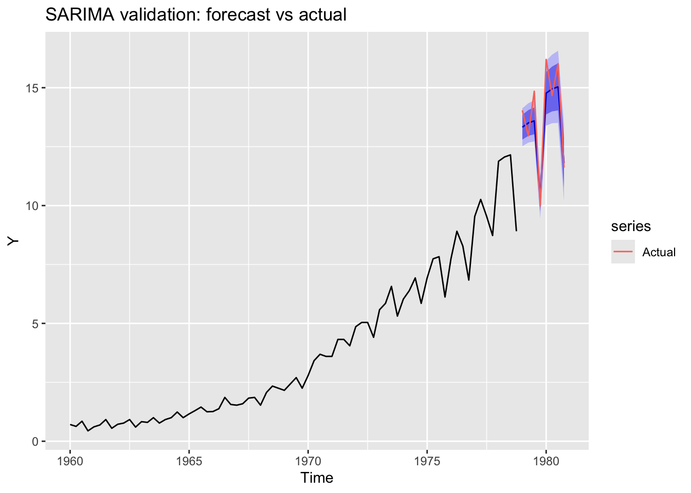</p>
</div>
</div>
<p><strong>Figure.</strong> SARIMA validation forecast versus actual EPS.<br>
</p>
<p>The black line shows the historical Johnson &amp; Johnson quarterly EPS, while the shaded region represents the 8-quarter validation forecast with 80% and 95% prediction intervals. The red line (actual) tracks closely with the model forecasts, with nearly all observations falling inside the prediction intervals. This confirms the good fit seen in the error metrics (<strong>MAPE ≈ 5.0, RMSE ≈ 0.84</strong>), and highlights the model's ability to capture both the growth trend and quarterly seasonality.</p>
<div class="cell">
<details open="">
<summary>Code</summary>
<div class="sourceCode cell-code" id="cb53"><pre class="sourceCode r code-with-copy"><code class="sourceCode r"><span id="cb53-1"><a href="#cb53-1" aria-hidden="true" tabindex="-1"></a>fit_final <span class="ot">&lt;-</span> <span class="fu">Arima</span>(Y_sarima, <span class="at">order =</span> best_sarima<span class="sc">$</span>order, <span class="at">seasonal =</span> best_sarima<span class="sc">$</span>seasonal)</span>
<span id="cb53-2"><a href="#cb53-2" aria-hidden="true" tabindex="-1"></a>H <span class="ot">&lt;-</span> <span class="dv">8</span></span>
<span id="cb53-3"><a href="#cb53-3" aria-hidden="true" tabindex="-1"></a>fc <span class="ot">&lt;-</span> <span class="fu">forecast</span>(fit_final, <span class="at">h =</span> H)</span>
<span id="cb53-4"><a href="#cb53-4" aria-hidden="true" tabindex="-1"></a><span class="fu">autoplot</span>(fc) <span class="sc">+</span> <span class="fu">ggtitle</span>(<span class="st">"SARIMA final forecast (8 quarters)"</span>)</span></code><button title="Copy to Clipboard" class="code-copy-button"><i class="bi"></i></button></pre></div>
</details>
<div class="cell-output-display">
<p>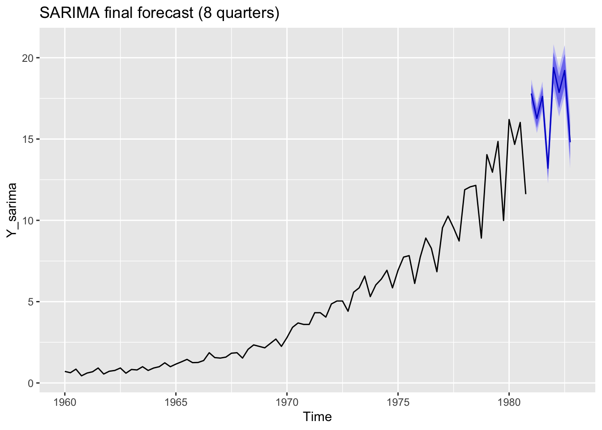</p>
</div>
</div>
<p><strong>Figure.</strong> Final <strong>SARIMA(0,1,1)×(0,1,0)4</strong>​ 8-quarter forecast.<br>
</p>
<p>The black line shows the full Johnson &amp; Johnson EPS history, while the shaded region represents the 8-quarter ahead forecast. The point forecasts continue the upward trajectory with regular seasonal oscillations, and the prediction intervals widen modestly, reflecting forecast uncertainty. This result indicates that the SARIMA model effectively captures both the long-term growth trend and quarterly seasonality of EPS, while still acknowledging the inherent uncertainty in future values.</p>
</section>
</section>
<section id="limitations-and-future-work" class="level2">
<h2 class="anchored" data-anchor-id="limitations-and-future-work">6. Limitations and Future Work</h2>
<p>This project showed how ARIMA and SARIMA can be used step by step for forecasting, and the models did a decent job at capturing the main features of the data: stationarity in returns and strong quarterly seasonality in EPS. However, there are some clear limits. These models are linear, so they cannot deal well with volatility clustering, sudden structural breaks, or other non-linear behavior that is common in financial and economic series. Forecast accuracy also falls off quickly at longer horizons, especially for stock returns where movements are largely unpredictable. Another limitation is that the models only focused on the mean of the series; volatility patterns were left out, and no external information (like macroeconomic indicators or firm fundamentals) was included.</p>
<p>Future work could try to fill these gaps. One obvious step would be to combine ARIMA/SARIMA with GARCH models to capture volatility. Another would be to bring in exogenous variables with ARIMAX or SARIMAX to see if forecasts improve with extra information. Non-linear and machine learning approaches, such as neural networks, could also be explored to capture more complex patterns. It would also be useful to test forecasts in a rolling-window setup rather than one fixed train/validation split, and to extend the analysis to multivariate models so that related series can be modeled together.</p>
</section>
<section id="reproducibility-notes" class="level2">
<h2 class="anchored" data-anchor-id="reproducibility-notes">7. Reproducibility Notes</h2>
<p>When using <code>quantmod</code> to pull market data (e.g., S&amp;P 500), results may change over time as new observations are added. To ensure reproducibility, export a cached dataset (e.g., CSV) and commit it to your repository.</p>
<div class="cell">
<details open="">
<summary>Code</summary>
<div class="sourceCode cell-code" id="cb54"><pre class="sourceCode r code-with-copy"><code class="sourceCode r"><span id="cb54-1"><a href="#cb54-1" aria-hidden="true" tabindex="-1"></a><span class="fu">write.csv</span>(<span class="fu">cbind</span>(<span class="at">Date =</span> zoo<span class="sc">::</span><span class="fu">index</span>(R), <span class="at">Return =</span> <span class="fu">as.numeric</span>(R)), <span class="st">"sp500_monthly_returns.csv"</span>, <span class="at">row.names =</span> <span class="cn">FALSE</span>)</span>
<span id="cb54-2"><a href="#cb54-2" aria-hidden="true" tabindex="-1"></a><span class="co"># Later: read.csv(...) and ts(..., frequency = 12, start = c(YYYY, MM))</span></span></code><button title="Copy to Clipboard" class="code-copy-button"><i class="bi"></i></button></pre></div>
</details>
</div>
<p>If modeling price <strong>levels</strong> rather than returns, a log or Box–Cox transform is recommended to stabilize variance, and differencing (d &gt; 0) will typically be required. For seasonal monthly data, <code>nsdiffs</code> may suggest one seasonal difference (D = 1, m = 12).</p>
<!-- -->

</section>

</main>
<!-- /main column -->
<script id="quarto-html-after-body" type="application/javascript">
window.document.addEventListener("DOMContentLoaded", function (event) {
  const toggleBodyColorMode = (bsSheetEl) => {
    const mode = bsSheetEl.getAttribute("data-mode");
    const bodyEl = window.document.querySelector("body");
    if (mode === "dark") {
      bodyEl.classList.add("quarto-dark");
      bodyEl.classList.remove("quarto-light");
    } else {
      bodyEl.classList.add("quarto-light");
      bodyEl.classList.remove("quarto-dark");
    }
  }
  const toggleBodyColorPrimary = () => {
    const bsSheetEl = window.document.querySelector("link#quarto-bootstrap");
    if (bsSheetEl) {
      toggleBodyColorMode(bsSheetEl);
    }
  }
  toggleBodyColorPrimary();  
  const icon = "";
  const anchorJS = new window.AnchorJS();
  anchorJS.options = {
    placement: 'right',
    icon: icon
  };
  anchorJS.add('.anchored');
  const clipboard = new window.ClipboardJS('.code-copy-button', {
    target: function(trigger) {
      return trigger.previousElementSibling;
    }
  });
  clipboard.on('success', function(e) {
    // button target
    const button = e.trigger;
    // don't keep focus
    button.blur();
    // flash "checked"
    button.classList.add('code-copy-button-checked');
    var currentTitle = button.getAttribute("title");
    button.setAttribute("title", "Copied!");
    let tooltip;
    if (window.bootstrap) {
      button.setAttribute("data-bs-toggle", "tooltip");
      button.setAttribute("data-bs-placement", "left");
      button.setAttribute("data-bs-title", "Copied!");
      tooltip = new bootstrap.Tooltip(button, 
        { trigger: "manual", 
          customClass: "code-copy-button-tooltip",
          offset: [0, -8]});
      tooltip.show();    
    }
    setTimeout(function() {
      if (tooltip) {
        tooltip.hide();
        button.removeAttribute("data-bs-title");
        button.removeAttribute("data-bs-toggle");
        button.removeAttribute("data-bs-placement");
      }
      button.setAttribute("title", currentTitle);
      button.classList.remove('code-copy-button-checked');
    }, 1000);
    // clear code selection
    e.clearSelection();
  });
  const viewSource = window.document.getElementById('quarto-view-source') ||
                     window.document.getElementById('quarto-code-tools-source');
  if (viewSource) {
    const sourceUrl = viewSource.getAttribute("data-quarto-source-url");
    viewSource.addEventListener("click", function(e) {
      if (sourceUrl) {
        // rstudio viewer pane
        if (/\bcapabilities=\b/.test(window.location)) {
          window.open(sourceUrl);
        } else {
          window.location.href = sourceUrl;
        }
      } else {
        const modal = new bootstrap.Modal(document.getElementById('quarto-embedded-source-code-modal'));
        modal.show();
      }
      return false;
    });
  }
  function toggleCodeHandler(show) {
    return function(e) {
      const detailsSrc = window.document.querySelectorAll(".cell > details > .sourceCode");
      for (let i=0; i<detailsSrc.length; i++) {
        const details = detailsSrc[i].parentElement;
        if (show) {
          details.open = true;
        } else {
          details.removeAttribute("open");
        }
      }
      const cellCodeDivs = window.document.querySelectorAll(".cell > .sourceCode");
      const fromCls = show ? "hidden" : "unhidden";
      const toCls = show ? "unhidden" : "hidden";
      for (let i=0; i<cellCodeDivs.length; i++) {
        const codeDiv = cellCodeDivs[i];
        if (codeDiv.classList.contains(fromCls)) {
          codeDiv.classList.remove(fromCls);
          codeDiv.classList.add(toCls);
        } 
      }
      return false;
    }
  }
  const hideAllCode = window.document.getElementById("quarto-hide-all-code");
  if (hideAllCode) {
    hideAllCode.addEventListener("click", toggleCodeHandler(false));
  }
  const showAllCode = window.document.getElementById("quarto-show-all-code");
  if (showAllCode) {
    showAllCode.addEventListener("click", toggleCodeHandler(true));
  }
  function tippyHover(el, contentFn) {
    const config = {
      allowHTML: true,
      content: contentFn,
      maxWidth: 500,
      delay: 100,
      arrow: false,
      appendTo: function(el) {
          return el.parentElement;
      },
      interactive: true,
      interactiveBorder: 10,
      theme: 'quarto',
      placement: 'bottom-start'
    };
    window.tippy(el, config); 
  }
  const noterefs = window.document.querySelectorAll('a[role="doc-noteref"]');
  for (var i=0; i<noterefs.length; i++) {
    const ref = noterefs[i];
    tippyHover(ref, function() {
      // use id or data attribute instead here
      let href = ref.getAttribute('data-footnote-href') || ref.getAttribute('href');
      try { href = new URL(href).hash; } catch {}
      const id = href.replace(/^#\/?/, "");
      const note = window.document.getElementById(id);
      return note.innerHTML;
    });
  }
  const findCites = (el) => {
    const parentEl = el.parentElement;
    if (parentEl) {
      const cites = parentEl.dataset.cites;
      if (cites) {
        return {
          el,
          cites: cites.split(' ')
        };
      } else {
        return findCites(el.parentElement)
      }
    } else {
      return undefined;
    }
  };
  var bibliorefs = window.document.querySelectorAll('a[role="doc-biblioref"]');
  for (var i=0; i<bibliorefs.length; i++) {
    const ref = bibliorefs[i];
    const citeInfo = findCites(ref);
    if (citeInfo) {
      tippyHover(citeInfo.el, function() {
        var popup = window.document.createElement('div');
        citeInfo.cites.forEach(function(cite) {
          var citeDiv = window.document.createElement('div');
          citeDiv.classList.add('hanging-indent');
          citeDiv.classList.add('csl-entry');
          var biblioDiv = window.document.getElementById('ref-' + cite);
          if (biblioDiv) {
            citeDiv.innerHTML = biblioDiv.innerHTML;
          }
          popup.appendChild(citeDiv);
        });
        return popup.innerHTML;
      });
    }
  }
});
</script><div class="modal fade" id="quarto-embedded-source-code-modal" tabindex="-1" aria-labelledby="quarto-embedded-source-code-modal-label" aria-hidden="true"><div class="modal-dialog modal-dialog-scrollable"><div class="modal-content"><div class="modal-header"><h5 class="modal-title" id="quarto-embedded-source-code-modal-label">Source Code</h5><button class="btn-close" data-bs-dismiss="modal"></button></div><div class="modal-body"><div class="">
<div class="sourceCode" id="cb55" data-shortcodes="false"><pre class="sourceCode markdown code-with-copy"><code class="sourceCode markdown"><span id="cb55-1"><a href="#cb55-1" aria-hidden="true" tabindex="-1"></a><span class="co">---</span></span>
<span id="cb55-2"><a href="#cb55-2" aria-hidden="true" tabindex="-1"></a><span class="an">title:</span><span class="co"> "Time Series Forecasting with ARIMA and SARIMA Models"</span></span>
<span id="cb55-3"><a href="#cb55-3" aria-hidden="true" tabindex="-1"></a><span class="an">subtitle:</span><span class="co"> "Applications to S&amp;P 500 Returns and J&amp;J Quarterly EPS"</span></span>
<span id="cb55-4"><a href="#cb55-4" aria-hidden="true" tabindex="-1"></a><span class="an">author:</span><span class="co"> "Van Anh Pham"</span></span>
<span id="cb55-5"><a href="#cb55-5" aria-hidden="true" tabindex="-1"></a><span class="an">format:</span></span>
<span id="cb55-6"><a href="#cb55-6" aria-hidden="true" tabindex="-1"></a><span class="co">  html:</span></span>
<span id="cb55-7"><a href="#cb55-7" aria-hidden="true" tabindex="-1"></a><span class="co">    toc: true</span></span>
<span id="cb55-8"><a href="#cb55-8" aria-hidden="true" tabindex="-1"></a><span class="co">    code-fold: show</span></span>
<span id="cb55-9"><a href="#cb55-9" aria-hidden="true" tabindex="-1"></a><span class="co">    code-tools: true</span></span>
<span id="cb55-10"><a href="#cb55-10" aria-hidden="true" tabindex="-1"></a><span class="co">    highlight-style: kate</span></span>
<span id="cb55-11"><a href="#cb55-11" aria-hidden="true" tabindex="-1"></a><span class="co">    theme: cosmo</span></span>
<span id="cb55-12"><a href="#cb55-12" aria-hidden="true" tabindex="-1"></a><span class="co">    smooth-scroll: true</span></span>
<span id="cb55-13"><a href="#cb55-13" aria-hidden="true" tabindex="-1"></a><span class="co">    anchor-sections: true</span></span>
<span id="cb55-14"><a href="#cb55-14" aria-hidden="true" tabindex="-1"></a><span class="co">    embed-resources: false  </span></span>
<span id="cb55-15"><a href="#cb55-15" aria-hidden="true" tabindex="-1"></a><span class="co">---</span></span>
<span id="cb55-16"><a href="#cb55-16" aria-hidden="true" tabindex="-1"></a></span>
<span id="cb55-17"><a href="#cb55-17" aria-hidden="true" tabindex="-1"></a><span class="fu">## **1. Project Goal &amp; Datasets**</span></span>
<span id="cb55-18"><a href="#cb55-18" aria-hidden="true" tabindex="-1"></a></span>
<span id="cb55-19"><a href="#cb55-19" aria-hidden="true" tabindex="-1"></a>**Goal**: The objective is to construct a clear and systematic pipeline for time series forecasting using both ARIMA (non-seasonal) and SARIMA (seasonal) models. The pipeline follows the standard stages of identification, estimation, diagnostic checking, and forecasting.</span>
<span id="cb55-20"><a href="#cb55-20" aria-hidden="true" tabindex="-1"></a></span>
<span id="cb55-21"><a href="#cb55-21" aria-hidden="true" tabindex="-1"></a>**Datasets:**</span>
<span id="cb55-22"><a href="#cb55-22" aria-hidden="true" tabindex="-1"></a>Two complementary financial time series are considered:</span>
<span id="cb55-23"><a href="#cb55-23" aria-hidden="true" tabindex="-1"></a></span>
<span id="cb55-24"><a href="#cb55-24" aria-hidden="true" tabindex="-1"></a><span class="ss">-   </span>**ARIMA model:** Monthly log-returns of the S&amp;P 500 index (<span class="in">`^GSPC`</span>, retrieved from Yahoo Finance via the *quantmod* package). Since log-returns are approximately stationary, they are well suited for ARIMA modeling.</span>
<span id="cb55-25"><a href="#cb55-25" aria-hidden="true" tabindex="-1"></a></span>
<span id="cb55-26"><a href="#cb55-26" aria-hidden="true" tabindex="-1"></a><span class="ss">-   </span>**SARIMA model:** Quarterly earnings per share (EPS) of Johnson &amp; Johnson (<span class="in">`JohnsonJohnson`</span>, available as a built-in dataset in R). The series exhibits pronounced quarterly seasonality, making it an appropriate candidate for SARIMA modeling with seasonal differencing.</span>
<span id="cb55-27"><a href="#cb55-27" aria-hidden="true" tabindex="-1"></a></span>
<span id="cb55-30"><a href="#cb55-30" aria-hidden="true" tabindex="-1"></a><span class="in">```{r}</span></span>
<span id="cb55-31"><a href="#cb55-31" aria-hidden="true" tabindex="-1"></a><span class="co">#| warning: false</span></span>
<span id="cb55-32"><a href="#cb55-32" aria-hidden="true" tabindex="-1"></a><span class="co">#| message: false</span></span>
<span id="cb55-33"><a href="#cb55-33" aria-hidden="true" tabindex="-1"></a><span class="co">#| echo: true</span></span>
<span id="cb55-34"><a href="#cb55-34" aria-hidden="true" tabindex="-1"></a>need <span class="ot">&lt;-</span> <span class="cf">function</span>(pkgs){</span>
<span id="cb55-35"><a href="#cb55-35" aria-hidden="true" tabindex="-1"></a>to_install <span class="ot">&lt;-</span> pkgs[<span class="sc">!</span>pkgs <span class="sc">%in%</span> <span class="fu">installed.packages</span>()[,<span class="dv">1</span>]]</span>
<span id="cb55-36"><a href="#cb55-36" aria-hidden="true" tabindex="-1"></a><span class="cf">if</span>(<span class="fu">length</span>(to_install)) <span class="fu">install.packages</span>(to_install, <span class="at">repos =</span> <span class="st">"https://cloud.r-project.org"</span>)</span>
<span id="cb55-37"><a href="#cb55-37" aria-hidden="true" tabindex="-1"></a><span class="fu">invisible</span>(<span class="fu">lapply</span>(pkgs, require, <span class="at">character.only =</span> <span class="cn">TRUE</span>))</span>
<span id="cb55-38"><a href="#cb55-38" aria-hidden="true" tabindex="-1"></a>}</span>
<span id="cb55-39"><a href="#cb55-39" aria-hidden="true" tabindex="-1"></a><span class="fu">need</span>(<span class="fu">c</span>(<span class="st">"forecast"</span>,<span class="st">"tseries"</span>,<span class="st">"ggplot2"</span>,<span class="st">"quantmod"</span>))</span>
<span id="cb55-40"><a href="#cb55-40" aria-hidden="true" tabindex="-1"></a><span class="in">```</span></span>
<span id="cb55-41"><a href="#cb55-41" aria-hidden="true" tabindex="-1"></a></span>
<span id="cb55-44"><a href="#cb55-44" aria-hidden="true" tabindex="-1"></a><span class="in">```{r}</span></span>
<span id="cb55-45"><a href="#cb55-45" aria-hidden="true" tabindex="-1"></a>mode <span class="ot">&lt;-</span> <span class="st">"both"</span> <span class="co"># choose: "arima", "sarima", or "both"</span></span>
<span id="cb55-46"><a href="#cb55-46" aria-hidden="true" tabindex="-1"></a><span class="in">```</span></span>
<span id="cb55-47"><a href="#cb55-47" aria-hidden="true" tabindex="-1"></a></span>
<span id="cb55-48"><a href="#cb55-48" aria-hidden="true" tabindex="-1"></a><span class="fu">## 2. Data Preparation</span></span>
<span id="cb55-49"><a href="#cb55-49" aria-hidden="true" tabindex="-1"></a></span>
<span id="cb55-50"><a href="#cb55-50" aria-hidden="true" tabindex="-1"></a><span class="fu">### 2.1  Load ARIMA dataset (S&amp;P 500 log-returns)</span></span>
<span id="cb55-51"><a href="#cb55-51" aria-hidden="true" tabindex="-1"></a></span>
<span id="cb55-52"><a href="#cb55-52" aria-hidden="true" tabindex="-1"></a>For the ARIMA model we use monthly log-returns of the S&amp;P 500 index, retrieved from Yahoo Finance through the *quantmod* package. Working with returns instead of price levels is standard in finance because stock prices usually follow a non-stationary process, often with a unit root. Log-returns, on the other hand, tend to be stationary and do not show long-term trends or seasonality, which makes them suitable for ARIMA analysis.</span>
<span id="cb55-53"><a href="#cb55-53" aria-hidden="true" tabindex="-1"></a></span>
<span id="cb55-56"><a href="#cb55-56" aria-hidden="true" tabindex="-1"></a><span class="in">```{r}</span></span>
<span id="cb55-57"><a href="#cb55-57" aria-hidden="true" tabindex="-1"></a>get_gspc <span class="ot">&lt;-</span> <span class="cf">function</span>(){</span>
<span id="cb55-58"><a href="#cb55-58" aria-hidden="true" tabindex="-1"></a><span class="fu">suppressMessages</span>(<span class="fu">getSymbols</span>(<span class="at">Symbols =</span> <span class="st">"^GSPC"</span>, <span class="at">src =</span> <span class="st">"yahoo"</span>, <span class="at">from =</span> <span class="st">"1990-01-01"</span>, <span class="at">auto.assign =</span> <span class="cn">FALSE</span>))</span>
<span id="cb55-59"><a href="#cb55-59" aria-hidden="true" tabindex="-1"></a>}</span>
<span id="cb55-60"><a href="#cb55-60" aria-hidden="true" tabindex="-1"></a>Y_arima <span class="ot">&lt;-</span> <span class="cn">NULL</span></span>
<span id="cb55-61"><a href="#cb55-61" aria-hidden="true" tabindex="-1"></a><span class="cf">if</span>(mode <span class="sc">%in%</span> <span class="fu">c</span>(<span class="st">"arima"</span>,<span class="st">"both"</span>)){</span>
<span id="cb55-62"><a href="#cb55-62" aria-hidden="true" tabindex="-1"></a>xts_g <span class="ot">&lt;-</span> <span class="fu">try</span>(<span class="fu">get_gspc</span>(), <span class="at">silent =</span> <span class="cn">TRUE</span>)</span>
<span id="cb55-63"><a href="#cb55-63" aria-hidden="true" tabindex="-1"></a><span class="cf">if</span>(<span class="sc">!</span><span class="fu">inherits</span>(xts_g, <span class="st">"try-error"</span>)){</span>
<span id="cb55-64"><a href="#cb55-64" aria-hidden="true" tabindex="-1"></a>G_m <span class="ot">&lt;-</span> <span class="fu">to.monthly</span>(xts_g, <span class="at">indexAt =</span> <span class="st">"lastof"</span>, <span class="at">OHLC =</span> <span class="cn">FALSE</span>)</span>
<span id="cb55-65"><a href="#cb55-65" aria-hidden="true" tabindex="-1"></a>P <span class="ot">&lt;-</span> <span class="fu">Ad</span>(G_m)</span>
<span id="cb55-66"><a href="#cb55-66" aria-hidden="true" tabindex="-1"></a>R <span class="ot">&lt;-</span> <span class="fu">diff</span>(<span class="fu">log</span>(P))</span>
<span id="cb55-67"><a href="#cb55-67" aria-hidden="true" tabindex="-1"></a>R <span class="ot">&lt;-</span> <span class="fu">na.omit</span>(R)</span>
<span id="cb55-68"><a href="#cb55-68" aria-hidden="true" tabindex="-1"></a>sy <span class="ot">&lt;-</span> <span class="fu">as.numeric</span>(<span class="fu">format</span>(zoo<span class="sc">::</span><span class="fu">index</span>(R)[<span class="dv">1</span>], <span class="st">"%Y"</span>))</span>
<span id="cb55-69"><a href="#cb55-69" aria-hidden="true" tabindex="-1"></a>sm <span class="ot">&lt;-</span> <span class="fu">as.numeric</span>(<span class="fu">format</span>(zoo<span class="sc">::</span><span class="fu">index</span>(R)[<span class="dv">1</span>], <span class="st">"%m"</span>))</span>
<span id="cb55-70"><a href="#cb55-70" aria-hidden="true" tabindex="-1"></a>Y_arima <span class="ot">&lt;-</span> <span class="fu">ts</span>(<span class="fu">as.numeric</span>(R), <span class="at">frequency =</span> <span class="dv">12</span>, <span class="at">start =</span> <span class="fu">c</span>(sy, sm))</span>
<span id="cb55-71"><a href="#cb55-71" aria-hidden="true" tabindex="-1"></a><span class="fu">attr</span>(Y_arima, <span class="st">"label"</span>) <span class="ot">&lt;-</span> <span class="st">"S&amp;P 500 monthly log-returns"</span></span>
<span id="cb55-72"><a href="#cb55-72" aria-hidden="true" tabindex="-1"></a>}</span>
<span id="cb55-73"><a href="#cb55-73" aria-hidden="true" tabindex="-1"></a>}</span>
<span id="cb55-74"><a href="#cb55-74" aria-hidden="true" tabindex="-1"></a><span class="in">```</span></span>
<span id="cb55-75"><a href="#cb55-75" aria-hidden="true" tabindex="-1"></a></span>
<span id="cb55-76"><a href="#cb55-76" aria-hidden="true" tabindex="-1"></a><span class="fu">### 2.2  Load SARIMA dataset (Johnson &amp; Johnson EPS)</span></span>
<span id="cb55-77"><a href="#cb55-77" aria-hidden="true" tabindex="-1"></a></span>
<span id="cb55-78"><a href="#cb55-78" aria-hidden="true" tabindex="-1"></a>For the SARIMA model we use Johnson &amp; Johnson\'s quarterly earnings per share (EPS), provided as the built-in <span class="in">`JohnsonJohnson`</span> dataset in R. Unlike returns, this series shows a clear seasonal pattern linked to quarterly reporting. To handle this, we need seasonal differencing in addition to the usual differencing step. This makes the series a good example for applying SARIMA, which extends ARIMA by including seasonal components.</span>
<span id="cb55-79"><a href="#cb55-79" aria-hidden="true" tabindex="-1"></a></span>
<span id="cb55-82"><a href="#cb55-82" aria-hidden="true" tabindex="-1"></a><span class="in">```{r}</span></span>
<span id="cb55-83"><a href="#cb55-83" aria-hidden="true" tabindex="-1"></a>Y_sarima <span class="ot">&lt;-</span> <span class="cn">NULL</span></span>
<span id="cb55-84"><a href="#cb55-84" aria-hidden="true" tabindex="-1"></a><span class="cf">if</span>(mode <span class="sc">%in%</span> <span class="fu">c</span>(<span class="st">"sarima"</span>,<span class="st">"both"</span>)){</span>
<span id="cb55-85"><a href="#cb55-85" aria-hidden="true" tabindex="-1"></a>Y_sarima <span class="ot">&lt;-</span> JohnsonJohnson <span class="co"># quarterly EPS</span></span>
<span id="cb55-86"><a href="#cb55-86" aria-hidden="true" tabindex="-1"></a><span class="fu">attr</span>(Y_sarima, <span class="st">"label"</span>) <span class="ot">&lt;-</span> <span class="st">"Johnson &amp; Johnson quarterly EPS"</span></span>
<span id="cb55-87"><a href="#cb55-87" aria-hidden="true" tabindex="-1"></a>}</span>
<span id="cb55-88"><a href="#cb55-88" aria-hidden="true" tabindex="-1"></a><span class="in">```</span></span>
<span id="cb55-89"><a href="#cb55-89" aria-hidden="true" tabindex="-1"></a></span>
<span id="cb55-90"><a href="#cb55-90" aria-hidden="true" tabindex="-1"></a><span class="fu">## 3. Helper Functions</span></span>
<span id="cb55-91"><a href="#cb55-91" aria-hidden="true" tabindex="-1"></a></span>
<span id="cb55-92"><a href="#cb55-92" aria-hidden="true" tabindex="-1"></a>We define three small utilities used throughout the workflow:</span>
<span id="cb55-93"><a href="#cb55-93" aria-hidden="true" tabindex="-1"></a></span>
<span id="cb55-94"><a href="#cb55-94" aria-hidden="true" tabindex="-1"></a><span class="ss">1.  </span>**Error metrics (`mape`, `rmse`)** --- quick functions to evaluate forecast accuracy. <span class="in">`MAPE`</span> reports average percent error; it\'s easy to read but can blow up when actual values are near zero. <span class="in">`RMSE`</span> is in the same units as the data and penalizes large errors more heavily.</span>
<span id="cb55-95"><a href="#cb55-95" aria-hidden="true" tabindex="-1"></a></span>
<span id="cb55-96"><a href="#cb55-96" aria-hidden="true" tabindex="-1"></a><span class="ss">2.  </span>**Time-aware split (`do_split`)** --- splits a univariate time series into a training window and a terminal validation block, preserving order (no shuffling).</span>
<span id="cb55-97"><a href="#cb55-97" aria-hidden="true" tabindex="-1"></a></span>
<span id="cb55-98"><a href="#cb55-98" aria-hidden="true" tabindex="-1"></a><span class="ss">3.  </span>**Compact SARIMA search (`fit_best_sarima`)** --- does a small grid search around pre-chosen differencing orders <span class="in">`(d, D)`</span> and picks the model with the lowest AICc. This keeps the search focused (fast) while still exploring AR/MA and seasonal AR/MA combinations that usually matter.</span>
<span id="cb55-99"><a href="#cb55-99" aria-hidden="true" tabindex="-1"></a></span>
<span id="cb55-102"><a href="#cb55-102" aria-hidden="true" tabindex="-1"></a><span class="in">```{r}</span></span>
<span id="cb55-103"><a href="#cb55-103" aria-hidden="true" tabindex="-1"></a>mape <span class="ot">&lt;-</span> <span class="cf">function</span>(actual, pred) <span class="fu">mean</span>(<span class="fu">abs</span>((actual <span class="sc">-</span> pred)<span class="sc">/</span>actual), <span class="at">na.rm =</span> <span class="cn">TRUE</span>)<span class="sc">*</span><span class="dv">100</span> <span class="co"># Mean Absolute Percentage Error (%).</span></span>
<span id="cb55-104"><a href="#cb55-104" aria-hidden="true" tabindex="-1"></a>rmse <span class="ot">&lt;-</span> <span class="cf">function</span>(actual, pred) <span class="fu">sqrt</span>(<span class="fu">mean</span>((actual <span class="sc">-</span> pred)<span class="sc">^</span><span class="dv">2</span>, <span class="at">na.rm =</span> <span class="cn">TRUE</span>)) <span class="co"># Root Mean Squared Error (same units as 'actual')</span></span>
<span id="cb55-105"><a href="#cb55-105" aria-hidden="true" tabindex="-1"></a></span>
<span id="cb55-106"><a href="#cb55-106" aria-hidden="true" tabindex="-1"></a><span class="co"># Splits the series into:</span></span>
<span id="cb55-107"><a href="#cb55-107" aria-hidden="true" tabindex="-1"></a><span class="co"># - train: all observations up to the last 'valid_size' points</span></span>
<span id="cb55-108"><a href="#cb55-108" aria-hidden="true" tabindex="-1"></a><span class="co"># - valid: the last 'valid_size' observations (ordered, no shuffle)</span></span>
<span id="cb55-109"><a href="#cb55-109" aria-hidden="true" tabindex="-1"></a>do_split <span class="ot">&lt;-</span> <span class="cf">function</span>(Y, valid_size){</span>
<span id="cb55-110"><a href="#cb55-110" aria-hidden="true" tabindex="-1"></a>n <span class="ot">&lt;-</span> <span class="fu">length</span>(Y); <span class="fu">stopifnot</span>(valid_size <span class="sc">&lt;</span> n)</span>
<span id="cb55-111"><a href="#cb55-111" aria-hidden="true" tabindex="-1"></a>Y_tr <span class="ot">&lt;-</span> <span class="fu">window</span>(Y, <span class="at">end =</span> <span class="fu">time</span>(Y)[n <span class="sc">-</span> valid_size])</span>
<span id="cb55-112"><a href="#cb55-112" aria-hidden="true" tabindex="-1"></a>Y_va <span class="ot">&lt;-</span> <span class="fu">window</span>(Y, <span class="at">start =</span> <span class="fu">time</span>(Y)[n <span class="sc">-</span> valid_size <span class="sc">+</span> <span class="dv">1</span>])</span>
<span id="cb55-113"><a href="#cb55-113" aria-hidden="true" tabindex="-1"></a><span class="fu">list</span>(<span class="at">train =</span> Y_tr, <span class="at">valid =</span> Y_va) </span>
<span id="cb55-114"><a href="#cb55-114" aria-hidden="true" tabindex="-1"></a>}</span>
<span id="cb55-115"><a href="#cb55-115" aria-hidden="true" tabindex="-1"></a></span>
<span id="cb55-116"><a href="#cb55-116" aria-hidden="true" tabindex="-1"></a><span class="co"># Given suggested differencing orders 'd_sugg' and 'D_sugg' (from identification),</span></span>
<span id="cb55-117"><a href="#cb55-117" aria-hidden="true" tabindex="-1"></a><span class="co"># search a small grid of AR/MA (p, q) and seasonal AR/MA (P, Q) terms.</span></span>
<span id="cb55-118"><a href="#cb55-118" aria-hidden="true" tabindex="-1"></a><span class="co"># Choose the model with the smallest AICc.</span></span>
<span id="cb55-119"><a href="#cb55-119" aria-hidden="true" tabindex="-1"></a>fit_best_sarima <span class="ot">&lt;-</span> <span class="cf">function</span>(Y, d_sugg, D_sugg){</span>
<span id="cb55-120"><a href="#cb55-120" aria-hidden="true" tabindex="-1"></a>  ps <span class="ot">&lt;-</span> <span class="dv">0</span><span class="sc">:</span><span class="dv">2</span>; qs <span class="ot">&lt;-</span> <span class="dv">0</span><span class="sc">:</span><span class="dv">2</span>; </span>
<span id="cb55-121"><a href="#cb55-121" aria-hidden="true" tabindex="-1"></a>  Ps <span class="ot">&lt;-</span> <span class="fu">ifelse</span>(<span class="fu">frequency</span>(Y)<span class="sc">&gt;</span><span class="dv">1</span>, <span class="dv">0</span><span class="sc">:</span><span class="dv">1</span>, <span class="dv">0</span>); </span>
<span id="cb55-122"><a href="#cb55-122" aria-hidden="true" tabindex="-1"></a>  Qs <span class="ot">&lt;-</span> <span class="fu">ifelse</span>(<span class="fu">frequency</span>(Y)<span class="sc">&gt;</span><span class="dv">1</span>, <span class="dv">0</span><span class="sc">:</span><span class="dv">1</span>, <span class="dv">0</span>)  </span>
<span id="cb55-123"><a href="#cb55-123" aria-hidden="true" tabindex="-1"></a>  <span class="co"># Only allow seasonal terms if the series has frequency &gt; 1</span></span>
<span id="cb55-124"><a href="#cb55-124" aria-hidden="true" tabindex="-1"></a>best <span class="ot">&lt;-</span> <span class="fu">list</span>(<span class="at">aicc =</span> <span class="cn">Inf</span>)</span>
<span id="cb55-125"><a href="#cb55-125" aria-hidden="true" tabindex="-1"></a></span>
<span id="cb55-126"><a href="#cb55-126" aria-hidden="true" tabindex="-1"></a><span class="cf">for</span>(p <span class="cf">in</span> ps) <span class="cf">for</span>(q <span class="cf">in</span> qs) <span class="cf">for</span>(P <span class="cf">in</span> Ps) <span class="cf">for</span>(Q <span class="cf">in</span> Qs){</span>
<span id="cb55-127"><a href="#cb55-127" aria-hidden="true" tabindex="-1"></a>  <span class="co"># Skip the all-zero AR/MA case; with differencing it often collapses to a trivial model</span></span>
<span id="cb55-128"><a href="#cb55-128" aria-hidden="true" tabindex="-1"></a>  <span class="cf">if</span>(p<span class="sc">==</span><span class="dv">0</span> <span class="sc">&amp;&amp;</span> q<span class="sc">==</span><span class="dv">0</span> <span class="sc">&amp;&amp;</span> P<span class="sc">==</span><span class="dv">0</span> <span class="sc">&amp;&amp;</span> Q<span class="sc">==</span><span class="dv">0</span>) <span class="cf">next</span></span>
<span id="cb55-129"><a href="#cb55-129" aria-hidden="true" tabindex="-1"></a>fit <span class="ot">&lt;-</span> <span class="fu">try</span>(<span class="fu">Arima</span>(</span>
<span id="cb55-130"><a href="#cb55-130" aria-hidden="true" tabindex="-1"></a>  Y, </span>
<span id="cb55-131"><a href="#cb55-131" aria-hidden="true" tabindex="-1"></a>  <span class="at">order =</span> <span class="fu">c</span>(p, d_sugg, q), </span>
<span id="cb55-132"><a href="#cb55-132" aria-hidden="true" tabindex="-1"></a>  <span class="at">seasonal =</span> <span class="fu">c</span>(P, D_sugg, Q), </span>
<span id="cb55-133"><a href="#cb55-133" aria-hidden="true" tabindex="-1"></a>  <span class="at">include.constant =</span> <span class="cn">TRUE</span>), </span>
<span id="cb55-134"><a href="#cb55-134" aria-hidden="true" tabindex="-1"></a>  <span class="at">silent=</span><span class="cn">TRUE</span>)</span>
<span id="cb55-135"><a href="#cb55-135" aria-hidden="true" tabindex="-1"></a></span>
<span id="cb55-136"><a href="#cb55-136" aria-hidden="true" tabindex="-1"></a><span class="cf">if</span>(<span class="fu">inherits</span>(fit, <span class="st">"try-error"</span>)) <span class="cf">next</span></span>
<span id="cb55-137"><a href="#cb55-137" aria-hidden="true" tabindex="-1"></a></span>
<span id="cb55-138"><a href="#cb55-138" aria-hidden="true" tabindex="-1"></a><span class="cf">if</span>(<span class="sc">!</span><span class="fu">is.na</span>(fit<span class="sc">$</span>aicc) <span class="sc">&amp;&amp;</span> fit<span class="sc">$</span>aicc <span class="sc">&lt;</span> best<span class="sc">$</span>aicc){</span>
<span id="cb55-139"><a href="#cb55-139" aria-hidden="true" tabindex="-1"></a>best <span class="ot">&lt;-</span> <span class="fu">list</span>(</span>
<span id="cb55-140"><a href="#cb55-140" aria-hidden="true" tabindex="-1"></a>  <span class="at">fit=</span>fit, </span>
<span id="cb55-141"><a href="#cb55-141" aria-hidden="true" tabindex="-1"></a>  <span class="at">aicc=</span>fit<span class="sc">$</span>aicc, </span>
<span id="cb55-142"><a href="#cb55-142" aria-hidden="true" tabindex="-1"></a>  <span class="at">order=</span><span class="fu">c</span>(p,d_sugg,q), </span>
<span id="cb55-143"><a href="#cb55-143" aria-hidden="true" tabindex="-1"></a>  <span class="at">seasonal=</span><span class="fu">c</span>(P,D_sugg,Q)</span>
<span id="cb55-144"><a href="#cb55-144" aria-hidden="true" tabindex="-1"></a>  )</span>
<span id="cb55-145"><a href="#cb55-145" aria-hidden="true" tabindex="-1"></a>}</span>
<span id="cb55-146"><a href="#cb55-146" aria-hidden="true" tabindex="-1"></a>}</span>
<span id="cb55-147"><a href="#cb55-147" aria-hidden="true" tabindex="-1"></a>best</span>
<span id="cb55-148"><a href="#cb55-148" aria-hidden="true" tabindex="-1"></a>}</span>
<span id="cb55-149"><a href="#cb55-149" aria-hidden="true" tabindex="-1"></a><span class="in">```</span></span>
<span id="cb55-150"><a href="#cb55-150" aria-hidden="true" tabindex="-1"></a></span>
<span id="cb55-151"><a href="#cb55-151" aria-hidden="true" tabindex="-1"></a><span class="fu">## 4. ARIMA Pipeline (on Returns)</span></span>
<span id="cb55-152"><a href="#cb55-152" aria-hidden="true" tabindex="-1"></a></span>
<span id="cb55-153"><a href="#cb55-153" aria-hidden="true" tabindex="-1"></a>*Run this section if `mode` is `"arima"`or `"both"`*.</span>
<span id="cb55-154"><a href="#cb55-154" aria-hidden="true" tabindex="-1"></a></span>
<span id="cb55-155"><a href="#cb55-155" aria-hidden="true" tabindex="-1"></a><span class="fu">### 4.1  Explore &amp; Visualize</span></span>
<span id="cb55-156"><a href="#cb55-156" aria-hidden="true" tabindex="-1"></a></span>
<span id="cb55-159"><a href="#cb55-159" aria-hidden="true" tabindex="-1"></a><span class="in">```{r}</span></span>
<span id="cb55-160"><a href="#cb55-160" aria-hidden="true" tabindex="-1"></a><span class="fu">stopifnot</span>(<span class="sc">!</span><span class="fu">is.null</span>(Y_arima))</span>
<span id="cb55-161"><a href="#cb55-161" aria-hidden="true" tabindex="-1"></a>label <span class="ot">&lt;-</span> <span class="fu">attr</span>(Y_arima, <span class="st">"label"</span>)</span>
<span id="cb55-162"><a href="#cb55-162" aria-hidden="true" tabindex="-1"></a>ar_df <span class="ot">&lt;-</span> <span class="fu">data.frame</span>(<span class="at">t =</span> <span class="fu">as.numeric</span>(<span class="fu">time</span>(Y_arima)), <span class="at">y =</span> <span class="fu">as.numeric</span>(Y_arima))</span>
<span id="cb55-163"><a href="#cb55-163" aria-hidden="true" tabindex="-1"></a></span>
<span id="cb55-164"><a href="#cb55-164" aria-hidden="true" tabindex="-1"></a><span class="fu">library</span>(ggplot2)</span>
<span id="cb55-165"><a href="#cb55-165" aria-hidden="true" tabindex="-1"></a><span class="fu">ggplot</span>(ar_df, <span class="fu">aes</span>(t, y)) <span class="sc">+</span> <span class="fu">geom_line</span>(<span class="at">linewidth =</span> <span class="fl">0.6</span>) <span class="sc">+</span></span>
<span id="cb55-166"><a href="#cb55-166" aria-hidden="true" tabindex="-1"></a><span class="fu">labs</span>(<span class="at">title =</span> label, <span class="at">x =</span> <span class="st">"Year"</span>, <span class="at">y =</span> <span class="st">"Log-returns"</span>)</span>
<span id="cb55-167"><a href="#cb55-167" aria-hidden="true" tabindex="-1"></a><span class="in">```</span></span>
<span id="cb55-168"><a href="#cb55-168" aria-hidden="true" tabindex="-1"></a></span>
<span id="cb55-169"><a href="#cb55-169" aria-hidden="true" tabindex="-1"></a>**Figure.** Monthly log-returns of the S&amp;P 500 index.</span>
<span id="cb55-170"><a href="#cb55-170" aria-hidden="true" tabindex="-1"></a></span>
<span id="cb55-171"><a href="#cb55-171" aria-hidden="true" tabindex="-1"></a>The series fluctuates around zero with no clear trend or seasonality, consistent with the stationarity assumption required for ARIMA modeling. Occasional large spikes correspond to periods of market stress (e.g., 2008 financial crisis, 2020 COVID-19 shock), but overall the series is stable in mean and variance.</span>
<span id="cb55-172"><a href="#cb55-172" aria-hidden="true" tabindex="-1"></a></span>
<span id="cb55-173"><a href="#cb55-173" aria-hidden="true" tabindex="-1"></a><span class="fu">### 4.2  Stationarity Checks</span></span>
<span id="cb55-174"><a href="#cb55-174" aria-hidden="true" tabindex="-1"></a></span>
<span id="cb55-175"><a href="#cb55-175" aria-hidden="true" tabindex="-1"></a>We apply the Augmented Dickey--Fuller (ADF) test (H₀: unit root, i.e., non-stationary) and the KPSS test (H₀: level stationarity). For asset returns, we expect ADF to reject the unit root (small p-value) and KPSS to *not* reject stationarity (large p-value).</span>
<span id="cb55-176"><a href="#cb55-176" aria-hidden="true" tabindex="-1"></a></span>
<span id="cb55-179"><a href="#cb55-179" aria-hidden="true" tabindex="-1"></a><span class="in">```{r}</span></span>
<span id="cb55-180"><a href="#cb55-180" aria-hidden="true" tabindex="-1"></a><span class="fu">adf.test</span>(Y_arima)</span>
<span id="cb55-181"><a href="#cb55-181" aria-hidden="true" tabindex="-1"></a><span class="fu">kpss.test</span>(Y_arima, <span class="at">null =</span> <span class="st">"Level"</span>) </span>
<span id="cb55-182"><a href="#cb55-182" aria-hidden="true" tabindex="-1"></a><span class="in">```</span></span>
<span id="cb55-183"><a href="#cb55-183" aria-hidden="true" tabindex="-1"></a></span>
<span id="cb55-184"><a href="#cb55-184" aria-hidden="true" tabindex="-1"></a><span class="ss">-   </span>**ADF:** statistic = −6.37, lag = 7, **p-value \&lt; 0.01** **→** Reject H₀ of a unit root.</span>
<span id="cb55-185"><a href="#cb55-185" aria-hidden="true" tabindex="-1"></a></span>
<span id="cb55-186"><a href="#cb55-186" aria-hidden="true" tabindex="-1"></a><span class="ss">-   </span>**KPSS (level):** statistic = 0.116, truncation lag = 5, **p-value \&gt; 0.10** → Fail to reject H₀ of stationarity.</span>
<span id="cb55-187"><a href="#cb55-187" aria-hidden="true" tabindex="-1"></a></span>
<span id="cb55-188"><a href="#cb55-188" aria-hidden="true" tabindex="-1"></a>The two tests point the same way: the return series is stationary in levels. No additional differencing is required for ARIMA (i.e., set **d = 0**). Since the plot shows no repeating seasonal pattern in returns, seasonal differencing is also unnecessary (**D = 0**).</span>
<span id="cb55-189"><a href="#cb55-189" aria-hidden="true" tabindex="-1"></a></span>
<span id="cb55-190"><a href="#cb55-190" aria-hidden="true" tabindex="-1"></a><span class="fu">### 4.3  Identification (ACF/PACF)</span></span>
<span id="cb55-191"><a href="#cb55-191" aria-hidden="true" tabindex="-1"></a></span>
<span id="cb55-192"><a href="#cb55-192" aria-hidden="true" tabindex="-1"></a>We inspect ACF/PACF of the (already stationary) series to suggest AR/MA orders.</span>
<span id="cb55-193"><a href="#cb55-193" aria-hidden="true" tabindex="-1"></a></span>
<span id="cb55-196"><a href="#cb55-196" aria-hidden="true" tabindex="-1"></a><span class="in">```{r}</span></span>
<span id="cb55-197"><a href="#cb55-197" aria-hidden="true" tabindex="-1"></a><span class="fu">stopifnot</span>(<span class="sc">!</span><span class="fu">is.null</span>(Y_arima))</span>
<span id="cb55-198"><a href="#cb55-198" aria-hidden="true" tabindex="-1"></a></span>
<span id="cb55-199"><a href="#cb55-199" aria-hidden="true" tabindex="-1"></a><span class="fu">library</span>(forecast)</span>
<span id="cb55-200"><a href="#cb55-200" aria-hidden="true" tabindex="-1"></a><span class="fu">library</span>(gridExtra)</span>
<span id="cb55-201"><a href="#cb55-201" aria-hidden="true" tabindex="-1"></a>lag_max <span class="ot">&lt;-</span> <span class="fu">min</span>(<span class="dv">40</span>, <span class="fu">length</span>(Y_arima) <span class="sc">-</span> <span class="dv">1</span>)</span>
<span id="cb55-202"><a href="#cb55-202" aria-hidden="true" tabindex="-1"></a>p_acf <span class="ot">&lt;-</span> <span class="fu">ggAcf</span>(Y_arima, <span class="at">lag.max =</span> lag_max) <span class="sc">+</span> <span class="fu">ggtitle</span>(<span class="st">"ACF (returns)"</span>)</span>
<span id="cb55-203"><a href="#cb55-203" aria-hidden="true" tabindex="-1"></a>p_pacf <span class="ot">&lt;-</span> <span class="fu">ggPacf</span>(Y_arima, <span class="at">lag.max =</span> lag_max) <span class="sc">+</span> <span class="fu">ggtitle</span>(<span class="st">"PACF (returns)"</span>)</span>
<span id="cb55-204"><a href="#cb55-204" aria-hidden="true" tabindex="-1"></a></span>
<span id="cb55-205"><a href="#cb55-205" aria-hidden="true" tabindex="-1"></a>gridExtra<span class="sc">::</span><span class="fu">grid.arrange</span>(p_acf, p_pacf, <span class="at">ncol =</span> <span class="dv">2</span>)</span>
<span id="cb55-206"><a href="#cb55-206" aria-hidden="true" tabindex="-1"></a><span class="in">```</span></span>
<span id="cb55-207"><a href="#cb55-207" aria-hidden="true" tabindex="-1"></a></span>
<span id="cb55-208"><a href="#cb55-208" aria-hidden="true" tabindex="-1"></a>The plots show that most autocorrelations fall within the 95% confidence bands, with only a few small spikes at low lags. There is no clear seasonal pattern and no strong persistence in either the ACF or PACF. This suggests that the series can be modeled with very low-order ARMA terms. Candidate models include ARIMA(0,0,0) with a constant, ARIMA(1,0,0), ARIMA(0,0,1), or ARIMA(1,0,1), to be compared using AICc and residual checks.</span>
<span id="cb55-209"><a href="#cb55-209" aria-hidden="true" tabindex="-1"></a></span>
<span id="cb55-210"><a href="#cb55-210" aria-hidden="true" tabindex="-1"></a><span class="fu">### 4.4  Train/Validation Split &amp; Baselines</span></span>
<span id="cb55-211"><a href="#cb55-211" aria-hidden="true" tabindex="-1"></a></span>
<span id="cb55-212"><a href="#cb55-212" aria-hidden="true" tabindex="-1"></a>We split the return series into a training set and a 24-month validation set using the helper function <span class="in">`do_split()`</span>. Two simple benchmark forecasts were then computed:</span>
<span id="cb55-213"><a href="#cb55-213" aria-hidden="true" tabindex="-1"></a></span>
<span id="cb55-214"><a href="#cb55-214" aria-hidden="true" tabindex="-1"></a><span class="ss">-   </span>**Naive forecast:** each forecast equals the last observed value.</span>
<span id="cb55-215"><a href="#cb55-215" aria-hidden="true" tabindex="-1"></a></span>
<span id="cb55-216"><a href="#cb55-216" aria-hidden="true" tabindex="-1"></a><span class="ss">-   </span>**Mean forecast:** each forecast equals the historical average of the training set.</span>
<span id="cb55-217"><a href="#cb55-217" aria-hidden="true" tabindex="-1"></a></span>
<span id="cb55-218"><a href="#cb55-218" aria-hidden="true" tabindex="-1"></a>These serve as baseline models to compare with ARIMA forecasts.</span>
<span id="cb55-219"><a href="#cb55-219" aria-hidden="true" tabindex="-1"></a></span>
<span id="cb55-222"><a href="#cb55-222" aria-hidden="true" tabindex="-1"></a><span class="in">```{r}</span></span>
<span id="cb55-223"><a href="#cb55-223" aria-hidden="true" tabindex="-1"></a>valid_size <span class="ot">&lt;-</span> <span class="dv">24</span></span>
<span id="cb55-224"><a href="#cb55-224" aria-hidden="true" tabindex="-1"></a>spl <span class="ot">&lt;-</span> <span class="fu">do_split</span>(Y_arima, valid_size)</span>
<span id="cb55-225"><a href="#cb55-225" aria-hidden="true" tabindex="-1"></a>Y_tr <span class="ot">&lt;-</span> spl<span class="sc">$</span>train; Y_va <span class="ot">&lt;-</span> spl<span class="sc">$</span>valid</span>
<span id="cb55-226"><a href="#cb55-226" aria-hidden="true" tabindex="-1"></a></span>
<span id="cb55-227"><a href="#cb55-227" aria-hidden="true" tabindex="-1"></a></span>
<span id="cb55-228"><a href="#cb55-228" aria-hidden="true" tabindex="-1"></a>fc_naive <span class="ot">&lt;-</span> <span class="fu">naive</span>(Y_tr, <span class="at">h =</span> <span class="fu">length</span>(Y_va))</span>
<span id="cb55-229"><a href="#cb55-229" aria-hidden="true" tabindex="-1"></a>fc_mean <span class="ot">&lt;-</span> <span class="fu">meanf</span>(Y_tr, <span class="at">h =</span> <span class="fu">length</span>(Y_va))</span>
<span id="cb55-230"><a href="#cb55-230" aria-hidden="true" tabindex="-1"></a>bl <span class="ot">&lt;-</span> <span class="fu">data.frame</span>(<span class="at">Model=</span><span class="fu">c</span>(<span class="st">"Naive"</span>,<span class="st">"Mean"</span>),</span>
<span id="cb55-231"><a href="#cb55-231" aria-hidden="true" tabindex="-1"></a><span class="at">MAPE=</span><span class="fu">c</span>(<span class="fu">mape</span>(Y_va, fc_naive<span class="sc">$</span>mean), <span class="fu">mape</span>(Y_va, fc_mean<span class="sc">$</span>mean)),</span>
<span id="cb55-232"><a href="#cb55-232" aria-hidden="true" tabindex="-1"></a><span class="at">RMSE=</span><span class="fu">c</span>(<span class="fu">rmse</span>(Y_va, fc_naive<span class="sc">$</span>mean), <span class="fu">rmse</span>(Y_va, fc_mean<span class="sc">$</span>mean)))</span>
<span id="cb55-233"><a href="#cb55-233" aria-hidden="true" tabindex="-1"></a>bl</span>
<span id="cb55-234"><a href="#cb55-234" aria-hidden="true" tabindex="-1"></a><span class="in">```</span></span>
<span id="cb55-235"><a href="#cb55-235" aria-hidden="true" tabindex="-1"></a></span>
<span id="cb55-236"><a href="#cb55-236" aria-hidden="true" tabindex="-1"></a>Both benchmarks perform poorly, which is expected for stock return forecasting. The mean forecast is noticeably better than the naive forecast (lower MAPE and RMSE), and will serve as the baseline to beat for ARIMA models.</span>
<span id="cb55-237"><a href="#cb55-237" aria-hidden="true" tabindex="-1"></a></span>
<span id="cb55-238"><a href="#cb55-238" aria-hidden="true" tabindex="-1"></a><span class="fu">### 4.5  Model Selection (AICc) &amp; Diagnostics</span></span>
<span id="cb55-239"><a href="#cb55-239" aria-hidden="true" tabindex="-1"></a></span>
<span id="cb55-240"><a href="#cb55-240" aria-hidden="true" tabindex="-1"></a>Since the return series is already stationary (**d = 0, D = 0**), we searched over a compact grid of AR and MA orders using AICc as the selection criterion. This procedure ensures we find a parsimonious model without overfitting.</span>
<span id="cb55-241"><a href="#cb55-241" aria-hidden="true" tabindex="-1"></a></span>
<span id="cb55-244"><a href="#cb55-244" aria-hidden="true" tabindex="-1"></a><span class="in">```{r}</span></span>
<span id="cb55-245"><a href="#cb55-245" aria-hidden="true" tabindex="-1"></a>d_sugg <span class="ot">&lt;-</span> <span class="dv">0</span></span>
<span id="cb55-246"><a href="#cb55-246" aria-hidden="true" tabindex="-1"></a>D_sugg <span class="ot">&lt;-</span> <span class="dv">0</span></span>
<span id="cb55-247"><a href="#cb55-247" aria-hidden="true" tabindex="-1"></a>best_arima <span class="ot">&lt;-</span> <span class="fu">fit_best_sarima</span>(Y_tr, d_sugg, D_sugg)</span>
<span id="cb55-248"><a href="#cb55-248" aria-hidden="true" tabindex="-1"></a>best_arima<span class="sc">$</span>order; best_arima<span class="sc">$</span>seasonal; best_arima<span class="sc">$</span>aicc</span>
<span id="cb55-249"><a href="#cb55-249" aria-hidden="true" tabindex="-1"></a><span class="in">```</span></span>
<span id="cb55-250"><a href="#cb55-250" aria-hidden="true" tabindex="-1"></a></span>
<span id="cb55-251"><a href="#cb55-251" aria-hidden="true" tabindex="-1"></a><span class="ss">-   </span>Best model by AICc: **ARIMA(1,0,2)** (no seasonal terms).</span>
<span id="cb55-252"><a href="#cb55-252" aria-hidden="true" tabindex="-1"></a></span>
<span id="cb55-253"><a href="#cb55-253" aria-hidden="true" tabindex="-1"></a><span class="ss">-   </span>AICc = **−1390.43**, the lowest among the candidate models.</span>
<span id="cb55-254"><a href="#cb55-254" aria-hidden="true" tabindex="-1"></a></span>
<span id="cb55-255"><a href="#cb55-255" aria-hidden="true" tabindex="-1"></a>The chosen specification suggests that the series is best captured by a first-order autoregressive term and two moving-average terms, with no seasonal component. This is consistent with the earlier ACF/PACF inspection, which pointed to a low-order ARMA structure.</span>
<span id="cb55-256"><a href="#cb55-256" aria-hidden="true" tabindex="-1"></a></span>
<span id="cb55-259"><a href="#cb55-259" aria-hidden="true" tabindex="-1"></a><span class="in">```{r}</span></span>
<span id="cb55-260"><a href="#cb55-260" aria-hidden="true" tabindex="-1"></a><span class="fu">checkresiduals</span>(best_arima<span class="sc">$</span>fit) <span class="co"># Ljung–Box + residual ACF</span></span>
<span id="cb55-261"><a href="#cb55-261" aria-hidden="true" tabindex="-1"></a><span class="in">```</span></span>
<span id="cb55-262"><a href="#cb55-262" aria-hidden="true" tabindex="-1"></a></span>
<span id="cb55-263"><a href="#cb55-263" aria-hidden="true" tabindex="-1"></a><span class="ss">-   </span>**Time plot:** residuals fluctuate around zero with no obvious structure.</span>
<span id="cb55-264"><a href="#cb55-264" aria-hidden="true" tabindex="-1"></a></span>
<span id="cb55-265"><a href="#cb55-265" aria-hidden="true" tabindex="-1"></a><span class="ss">-   </span>**Residual ACF:** most autocorrelations lie within the 95% bounds → no strong remaining dependence.</span>
<span id="cb55-266"><a href="#cb55-266" aria-hidden="true" tabindex="-1"></a></span>
<span id="cb55-267"><a href="#cb55-267" aria-hidden="true" tabindex="-1"></a><span class="ss">-   </span>**Histogram/Normal fit:** residuals are roughly centered at zero and approximately symmetric, though heavy tails are visible (common in financial returns).</span>
<span id="cb55-268"><a href="#cb55-268" aria-hidden="true" tabindex="-1"></a></span>
<span id="cb55-269"><a href="#cb55-269" aria-hidden="true" tabindex="-1"></a><span class="ss">-   </span>**Ljung--Box test:** Q = 19.29 (df = 21), p = 0.57 → fail to reject the null of white noise.</span>
<span id="cb55-270"><a href="#cb55-270" aria-hidden="true" tabindex="-1"></a></span>
<span id="cb55-271"><a href="#cb55-271" aria-hidden="true" tabindex="-1"></a>The **ARIMA(1,0,2)** model adequately captures the linear dependence in the return series. Residuals behave like white noise, satisfying the key diagnostic checks. However, the presence of heavy tails suggests possible volatility clustering, which ARIMA does not address. For a more refined analysis, a GARCH-type model could be considered to model the conditional variance.</span>
<span id="cb55-272"><a href="#cb55-272" aria-hidden="true" tabindex="-1"></a></span>
<span id="cb55-273"><a href="#cb55-273" aria-hidden="true" tabindex="-1"></a><span class="fu">### 4.6  Validation Forecast &amp; Error</span></span>
<span id="cb55-274"><a href="#cb55-274" aria-hidden="true" tabindex="-1"></a></span>
<span id="cb55-275"><a href="#cb55-275" aria-hidden="true" tabindex="-1"></a>We generated out-of-sample forecasts for the 24-month validation period using the selected **ARIMA(1,0,2)** model. Forecast accuracy was assessed with MAPE and RMSE.</span>
<span id="cb55-276"><a href="#cb55-276" aria-hidden="true" tabindex="-1"></a></span>
<span id="cb55-279"><a href="#cb55-279" aria-hidden="true" tabindex="-1"></a><span class="in">```{r}</span></span>
<span id="cb55-280"><a href="#cb55-280" aria-hidden="true" tabindex="-1"></a>fc_val <span class="ot">&lt;-</span> <span class="fu">forecast</span>(best_arima<span class="sc">$</span>fit, <span class="at">h =</span> <span class="fu">length</span>(Y_va))</span>
<span id="cb55-281"><a href="#cb55-281" aria-hidden="true" tabindex="-1"></a>va_mape <span class="ot">&lt;-</span> <span class="fu">mape</span>(Y_va, fc_val<span class="sc">$</span>mean)</span>
<span id="cb55-282"><a href="#cb55-282" aria-hidden="true" tabindex="-1"></a>va_rmse <span class="ot">&lt;-</span> <span class="fu">rmse</span>(Y_va, fc_val<span class="sc">$</span>mean)</span>
<span id="cb55-283"><a href="#cb55-283" aria-hidden="true" tabindex="-1"></a>va_mape; va_rmse</span>
<span id="cb55-284"><a href="#cb55-284" aria-hidden="true" tabindex="-1"></a><span class="in">```</span></span>
<span id="cb55-285"><a href="#cb55-285" aria-hidden="true" tabindex="-1"></a></span>
<span id="cb55-286"><a href="#cb55-286" aria-hidden="true" tabindex="-1"></a>The **ARIMA(1,0,2)** model performs better than the naive baseline (**MAPE ≈ 259, RMSE ≈ 0.076**) and slightly better than the mean forecast (**MAPE ≈ 95, RMSE ≈ 0.036**). While RMSE shows an improvement, MAPE remains very high, reflecting the well-known difficulty of predicting asset returns. Overall, the ARIMA model captures some short-term dynamics but does not yield highly accurate forecasts in economic terms.</span>
<span id="cb55-287"><a href="#cb55-287" aria-hidden="true" tabindex="-1"></a></span>
<span id="cb55-290"><a href="#cb55-290" aria-hidden="true" tabindex="-1"></a><span class="in">```{r}</span></span>
<span id="cb55-291"><a href="#cb55-291" aria-hidden="true" tabindex="-1"></a><span class="fu">autoplot</span>(fc_val) <span class="sc">+</span> <span class="fu">autolayer</span>(Y_va, <span class="at">series =</span> <span class="st">"Actual"</span>) <span class="sc">+</span> <span class="fu">ggtitle</span>(<span class="st">"ARIMA validation: forecast vs actual"</span>)</span>
<span id="cb55-292"><a href="#cb55-292" aria-hidden="true" tabindex="-1"></a><span class="in">```</span></span>
<span id="cb55-293"><a href="#cb55-293" aria-hidden="true" tabindex="-1"></a></span>
<span id="cb55-294"><a href="#cb55-294" aria-hidden="true" tabindex="-1"></a>**Figure X.** ARIMA validation forecast versus actual returns.</span>
<span id="cb55-295"><a href="#cb55-295" aria-hidden="true" tabindex="-1"></a></span>
<span id="cb55-296"><a href="#cb55-296" aria-hidden="true" tabindex="-1"></a>The red line shows the model forecast for the 24-month validation period, with blue bands indicating 80% and 95% prediction intervals. Actual returns (black) fluctuate widely and often fall inside the prediction bands, but point forecasts remain close to zero. This highlights that while the model captures overall variability, individual return movements are essentially unpredictable.</span>
<span id="cb55-297"><a href="#cb55-297" aria-hidden="true" tabindex="-1"></a></span>
<span id="cb55-298"><a href="#cb55-298" aria-hidden="true" tabindex="-1"></a><span class="fu">### 4.7  Refit on Full Data &amp; Multi-step Forecast</span></span>
<span id="cb55-299"><a href="#cb55-299" aria-hidden="true" tabindex="-1"></a></span>
<span id="cb55-300"><a href="#cb55-300" aria-hidden="true" tabindex="-1"></a>Using the ARIMA orders selected on the training set, we refit the model on the entire return series to leverage all available information:</span>
<span id="cb55-301"><a href="#cb55-301" aria-hidden="true" tabindex="-1"></a></span>
<span id="cb55-304"><a href="#cb55-304" aria-hidden="true" tabindex="-1"></a><span class="in">```{r}</span></span>
<span id="cb55-305"><a href="#cb55-305" aria-hidden="true" tabindex="-1"></a>fit_final <span class="ot">&lt;-</span> <span class="fu">Arima</span>(Y_arima, <span class="at">order =</span> best_arima<span class="sc">$</span>order, <span class="at">seasonal =</span> best_arima<span class="sc">$</span>seasonal)</span>
<span id="cb55-306"><a href="#cb55-306" aria-hidden="true" tabindex="-1"></a>fc <span class="ot">&lt;-</span> <span class="fu">forecast</span>(fit_final, <span class="at">h =</span> <span class="dv">12</span>)</span>
<span id="cb55-307"><a href="#cb55-307" aria-hidden="true" tabindex="-1"></a></span>
<span id="cb55-308"><a href="#cb55-308" aria-hidden="true" tabindex="-1"></a>start_fc <span class="ot">&lt;-</span> <span class="fu">time</span>(fc<span class="sc">$</span>mean)[<span class="dv">1</span>]</span>
<span id="cb55-309"><a href="#cb55-309" aria-hidden="true" tabindex="-1"></a>end_fc   <span class="ot">&lt;-</span> <span class="fu">time</span>(fc<span class="sc">$</span>mean)[<span class="fu">length</span>(fc<span class="sc">$</span>mean)]</span>
<span id="cb55-310"><a href="#cb55-310" aria-hidden="true" tabindex="-1"></a>t0       <span class="ot">&lt;-</span> <span class="fu">tail</span>(<span class="fu">time</span>(Y_arima), <span class="dv">120</span>)[<span class="dv">1</span>]   <span class="co"># show last ~10 years (120 months)</span></span>
<span id="cb55-311"><a href="#cb55-311" aria-hidden="true" tabindex="-1"></a></span>
<span id="cb55-312"><a href="#cb55-312" aria-hidden="true" tabindex="-1"></a><span class="fu">autoplot</span>(fc) <span class="sc">+</span></span>
<span id="cb55-313"><a href="#cb55-313" aria-hidden="true" tabindex="-1"></a>  <span class="fu">geom_vline</span>(<span class="at">xintercept =</span> start_fc, <span class="at">linetype =</span> <span class="st">"dashed"</span>) <span class="sc">+</span></span>
<span id="cb55-314"><a href="#cb55-314" aria-hidden="true" tabindex="-1"></a>  <span class="fu">autolayer</span>(<span class="fu">fitted</span>(fit_final), <span class="at">series =</span> <span class="st">"Fitted"</span>, <span class="at">size =</span> <span class="fl">0.6</span>, <span class="at">alpha =</span> <span class="fl">0.8</span>) <span class="sc">+</span></span>
<span id="cb55-315"><a href="#cb55-315" aria-hidden="true" tabindex="-1"></a>  <span class="fu">autolayer</span>(fc<span class="sc">$</span>mean,         <span class="at">series =</span> <span class="st">"Forecast"</span>, <span class="at">size =</span> <span class="fl">1.1</span>) <span class="sc">+</span></span>
<span id="cb55-316"><a href="#cb55-316" aria-hidden="true" tabindex="-1"></a>  <span class="fu">labs</span>(<span class="at">title =</span> <span class="st">"ARIMA final forecast (12 months)"</span>, <span class="at">y =</span> <span class="st">"Log-returns"</span>) <span class="sc">+</span></span>
<span id="cb55-317"><a href="#cb55-317" aria-hidden="true" tabindex="-1"></a>  <span class="fu">theme_minimal</span>(<span class="at">base_size =</span> <span class="dv">12</span>)</span>
<span id="cb55-318"><a href="#cb55-318" aria-hidden="true" tabindex="-1"></a></span>
<span id="cb55-319"><a href="#cb55-319" aria-hidden="true" tabindex="-1"></a><span class="in">```</span></span>
<span id="cb55-320"><a href="#cb55-320" aria-hidden="true" tabindex="-1"></a></span>
<span id="cb55-321"><a href="#cb55-321" aria-hidden="true" tabindex="-1"></a>**Figure X.** ARIMA(1,0,2) 12-month ahead forecast.\</span>
<span id="cb55-322"><a href="#cb55-322" aria-hidden="true" tabindex="-1"></a></span>
<span id="cb55-323"><a href="#cb55-323" aria-hidden="true" tabindex="-1"></a>The black line shows the full history of monthly S&amp;P 500 log-returns, while the shaded region represents forecasts for the next 12 months. The point forecast (center of the band) remains close to zero, consistent with returns having no predictable trend. The 80% and 95% prediction intervals are wide, reflecting substantial uncertainty: the model is more informative about the range of possible outcomes than the exact path of future returns.</span>
<span id="cb55-324"><a href="#cb55-324" aria-hidden="true" tabindex="-1"></a></span>
<span id="cb55-325"><a href="#cb55-325" aria-hidden="true" tabindex="-1"></a><span class="fu">## 5. SARIMA Pipeline (on Seasonal EPS)</span></span>
<span id="cb55-326"><a href="#cb55-326" aria-hidden="true" tabindex="-1"></a></span>
<span id="cb55-327"><a href="#cb55-327" aria-hidden="true" tabindex="-1"></a>*Run this section if `mode` is `"sarima"` or `"both"`.*</span>
<span id="cb55-328"><a href="#cb55-328" aria-hidden="true" tabindex="-1"></a></span>
<span id="cb55-329"><a href="#cb55-329" aria-hidden="true" tabindex="-1"></a><span class="fu">### 5.1  Explore &amp; Visualize</span></span>
<span id="cb55-330"><a href="#cb55-330" aria-hidden="true" tabindex="-1"></a></span>
<span id="cb55-333"><a href="#cb55-333" aria-hidden="true" tabindex="-1"></a><span class="in">```{r}</span></span>
<span id="cb55-334"><a href="#cb55-334" aria-hidden="true" tabindex="-1"></a><span class="fu">stopifnot</span>(<span class="sc">!</span><span class="fu">is.null</span>(Y_sarima))</span>
<span id="cb55-335"><a href="#cb55-335" aria-hidden="true" tabindex="-1"></a>label <span class="ot">&lt;-</span> <span class="fu">attr</span>(Y_sarima, <span class="st">"label"</span>)</span>
<span id="cb55-336"><a href="#cb55-336" aria-hidden="true" tabindex="-1"></a>stl_obj <span class="ot">&lt;-</span> <span class="fu">stl</span>(Y_sarima, <span class="at">s.window =</span> <span class="st">"periodic"</span>)</span>
<span id="cb55-337"><a href="#cb55-337" aria-hidden="true" tabindex="-1"></a>stl_df <span class="ot">&lt;-</span> <span class="fu">data.frame</span>(</span>
<span id="cb55-338"><a href="#cb55-338" aria-hidden="true" tabindex="-1"></a><span class="at">t =</span> <span class="fu">as.numeric</span>(<span class="fu">time</span>(Y_sarima)),</span>
<span id="cb55-339"><a href="#cb55-339" aria-hidden="true" tabindex="-1"></a><span class="at">y =</span> <span class="fu">as.numeric</span>(Y_sarima),</span>
<span id="cb55-340"><a href="#cb55-340" aria-hidden="true" tabindex="-1"></a><span class="at">trend =</span> stl_obj<span class="sc">$</span>time.series[,<span class="st">"trend"</span>],</span>
<span id="cb55-341"><a href="#cb55-341" aria-hidden="true" tabindex="-1"></a><span class="at">seasonal =</span> stl_obj<span class="sc">$</span>time.series[,<span class="st">"seasonal"</span>],</span>
<span id="cb55-342"><a href="#cb55-342" aria-hidden="true" tabindex="-1"></a><span class="at">remainder =</span> stl_obj<span class="sc">$</span>time.series[,<span class="st">"remainder"</span>]</span>
<span id="cb55-343"><a href="#cb55-343" aria-hidden="true" tabindex="-1"></a>)</span>
<span id="cb55-344"><a href="#cb55-344" aria-hidden="true" tabindex="-1"></a></span>
<span id="cb55-345"><a href="#cb55-345" aria-hidden="true" tabindex="-1"></a><span class="co"># Level plot</span></span>
<span id="cb55-346"><a href="#cb55-346" aria-hidden="true" tabindex="-1"></a><span class="fu">library</span>(ggplot2)</span>
<span id="cb55-347"><a href="#cb55-347" aria-hidden="true" tabindex="-1"></a><span class="fu">ggplot</span>(stl_df, <span class="fu">aes</span>(t, y)) <span class="sc">+</span> <span class="fu">geom_line</span>(<span class="at">linewidth =</span> <span class="fl">0.6</span>) <span class="sc">+</span></span>
<span id="cb55-348"><a href="#cb55-348" aria-hidden="true" tabindex="-1"></a><span class="fu">labs</span>(<span class="at">title =</span> label, <span class="at">x =</span> <span class="st">"Year"</span>, <span class="at">y =</span> <span class="st">"EPS"</span>)</span>
<span id="cb55-349"><a href="#cb55-349" aria-hidden="true" tabindex="-1"></a><span class="in">```</span></span>
<span id="cb55-350"><a href="#cb55-350" aria-hidden="true" tabindex="-1"></a></span>
<span id="cb55-351"><a href="#cb55-351" aria-hidden="true" tabindex="-1"></a>We begin by decomposing the Johnson &amp; Johnson quarterly EPS with STL, which reveals a smooth upward trend and strong, regular quarterly seasonality. The level plot confirms non-stationarity in both trend and seasonality, motivating a SARIMA approach with seasonal differencing (**m = 4**). Subsequent tests and ACF/PACF will be performed on the differenced series.</span>
<span id="cb55-352"><a href="#cb55-352" aria-hidden="true" tabindex="-1"></a></span>
<span id="cb55-355"><a href="#cb55-355" aria-hidden="true" tabindex="-1"></a><span class="in">```{r}</span></span>
<span id="cb55-356"><a href="#cb55-356" aria-hidden="true" tabindex="-1"></a>stl_df <span class="ot">&lt;-</span> <span class="fu">data.frame</span>(</span>
<span id="cb55-357"><a href="#cb55-357" aria-hidden="true" tabindex="-1"></a>  <span class="at">t         =</span> <span class="fu">as.numeric</span>(<span class="fu">time</span>(Y_sarima)),</span>
<span id="cb55-358"><a href="#cb55-358" aria-hidden="true" tabindex="-1"></a>  <span class="at">y         =</span> <span class="fu">as.numeric</span>(Y_sarima),</span>
<span id="cb55-359"><a href="#cb55-359" aria-hidden="true" tabindex="-1"></a>  <span class="at">trend     =</span> <span class="fu">as.numeric</span>(stl_obj<span class="sc">$</span>time.series[, <span class="st">"trend"</span>]),</span>
<span id="cb55-360"><a href="#cb55-360" aria-hidden="true" tabindex="-1"></a>  <span class="at">seasonal  =</span> <span class="fu">as.numeric</span>(stl_obj<span class="sc">$</span>time.series[, <span class="st">"seasonal"</span>]),</span>
<span id="cb55-361"><a href="#cb55-361" aria-hidden="true" tabindex="-1"></a>  <span class="at">remainder =</span> <span class="fu">as.numeric</span>(stl_obj<span class="sc">$</span>time.series[, <span class="st">"remainder"</span>])</span>
<span id="cb55-362"><a href="#cb55-362" aria-hidden="true" tabindex="-1"></a>)</span>
<span id="cb55-363"><a href="#cb55-363" aria-hidden="true" tabindex="-1"></a></span>
<span id="cb55-364"><a href="#cb55-364" aria-hidden="true" tabindex="-1"></a><span class="fu">ggplot</span>(stl_df, <span class="fu">aes</span>(t, trend)) <span class="sc">+</span></span>
<span id="cb55-365"><a href="#cb55-365" aria-hidden="true" tabindex="-1"></a>  <span class="fu">geom_line</span>(<span class="at">linewidth =</span> <span class="fl">0.6</span>) <span class="sc">+</span></span>
<span id="cb55-366"><a href="#cb55-366" aria-hidden="true" tabindex="-1"></a>  <span class="fu">labs</span>(<span class="at">title =</span> <span class="st">"STL Trend"</span>, <span class="at">x =</span> <span class="st">"Year"</span>, <span class="at">y =</span> <span class="cn">NULL</span>)</span>
<span id="cb55-367"><a href="#cb55-367" aria-hidden="true" tabindex="-1"></a></span>
<span id="cb55-368"><a href="#cb55-368" aria-hidden="true" tabindex="-1"></a><span class="in">```</span></span>
<span id="cb55-369"><a href="#cb55-369" aria-hidden="true" tabindex="-1"></a></span>
<span id="cb55-370"><a href="#cb55-370" aria-hidden="true" tabindex="-1"></a>**Figure.** STL trend component of Johnson &amp; Johnson quarterly EPS, 1960--1980.</span>
<span id="cb55-371"><a href="#cb55-371" aria-hidden="true" tabindex="-1"></a></span>
<span id="cb55-372"><a href="#cb55-372" aria-hidden="true" tabindex="-1"></a>The series shows strong long-term growth with an accelerating upward slope through the 1970s, confirming the need for differencing in SARIMA modeling.</span>
<span id="cb55-373"><a href="#cb55-373" aria-hidden="true" tabindex="-1"></a></span>
<span id="cb55-376"><a href="#cb55-376" aria-hidden="true" tabindex="-1"></a><span class="in">```{r}</span></span>
<span id="cb55-377"><a href="#cb55-377" aria-hidden="true" tabindex="-1"></a><span class="fu">ggplot</span>(stl_df, <span class="fu">aes</span>(t, seasonal)) <span class="sc">+</span> <span class="fu">geom_line</span>(<span class="at">linewidth =</span> <span class="fl">0.6</span>) <span class="sc">+</span></span>
<span id="cb55-378"><a href="#cb55-378" aria-hidden="true" tabindex="-1"></a><span class="fu">labs</span>(<span class="at">title =</span> <span class="st">"STL Seasonal"</span>, <span class="at">x =</span> <span class="st">"Year"</span>, <span class="at">y =</span> <span class="cn">NULL</span>)</span>
<span id="cb55-379"><a href="#cb55-379" aria-hidden="true" tabindex="-1"></a><span class="in">```</span></span>
<span id="cb55-380"><a href="#cb55-380" aria-hidden="true" tabindex="-1"></a></span>
<span id="cb55-381"><a href="#cb55-381" aria-hidden="true" tabindex="-1"></a>**Figure**. STL seasonal component of Johnson &amp; Johnson quarterly EPS.</span>
<span id="cb55-382"><a href="#cb55-382" aria-hidden="true" tabindex="-1"></a></span>
<span id="cb55-383"><a href="#cb55-383" aria-hidden="true" tabindex="-1"></a>The decomposition reveals a stable quarterly pattern repeating every four quarters, confirming strong seasonality and the need for a SARIMA model with seasonal differencing.</span>
<span id="cb55-384"><a href="#cb55-384" aria-hidden="true" tabindex="-1"></a></span>
<span id="cb55-387"><a href="#cb55-387" aria-hidden="true" tabindex="-1"></a><span class="in">```{r}</span></span>
<span id="cb55-388"><a href="#cb55-388" aria-hidden="true" tabindex="-1"></a><span class="fu">ggplot</span>(stl_df, <span class="fu">aes</span>(t, remainder)) <span class="sc">+</span> <span class="fu">geom_line</span>(<span class="at">linewidth =</span> <span class="fl">0.6</span>) <span class="sc">+</span></span>
<span id="cb55-389"><a href="#cb55-389" aria-hidden="true" tabindex="-1"></a><span class="fu">labs</span>(<span class="at">title =</span> <span class="st">"STL Remainder"</span>, <span class="at">x =</span> <span class="st">"Year"</span>, <span class="at">y =</span> <span class="cn">NULL</span>)</span>
<span id="cb55-390"><a href="#cb55-390" aria-hidden="true" tabindex="-1"></a><span class="in">```</span></span>
<span id="cb55-391"><a href="#cb55-391" aria-hidden="true" tabindex="-1"></a></span>
<span id="cb55-392"><a href="#cb55-392" aria-hidden="true" tabindex="-1"></a>**Figure**. STL remainder of Johnson &amp; Johnson quarterly EPS.</span>
<span id="cb55-393"><a href="#cb55-393" aria-hidden="true" tabindex="-1"></a></span>
<span id="cb55-394"><a href="#cb55-394" aria-hidden="true" tabindex="-1"></a>The residual component is mostly noise around zero, but volatility increases markedly in the late 1970s, with large shocks that may limit the precision of SARIMA forecasts.</span>
<span id="cb55-395"><a href="#cb55-395" aria-hidden="true" tabindex="-1"></a></span>
<span id="cb55-396"><a href="#cb55-396" aria-hidden="true" tabindex="-1"></a><span class="fu">### 5.2 Stationarity &amp; Differencing Suggestions</span></span>
<span id="cb55-397"><a href="#cb55-397" aria-hidden="true" tabindex="-1"></a></span>
<span id="cb55-398"><a href="#cb55-398" aria-hidden="true" tabindex="-1"></a>We use <span class="in">`ndiffs`</span> (non-seasonal) and <span class="in">`nsdiffs`</span> (seasonal) to suggest <span class="sc">\\</span>(d<span class="sc">\\</span>) and <span class="sc">\\</span>(D<span class="sc">\\</span>).</span>
<span id="cb55-399"><a href="#cb55-399" aria-hidden="true" tabindex="-1"></a></span>
<span id="cb55-402"><a href="#cb55-402" aria-hidden="true" tabindex="-1"></a><span class="in">```{r}</span></span>
<span id="cb55-403"><a href="#cb55-403" aria-hidden="true" tabindex="-1"></a><span class="fu">adf.test</span>(Y_sarima)</span>
<span id="cb55-404"><a href="#cb55-404" aria-hidden="true" tabindex="-1"></a></span>
<span id="cb55-405"><a href="#cb55-405" aria-hidden="true" tabindex="-1"></a><span class="in">```</span></span>
<span id="cb55-406"><a href="#cb55-406" aria-hidden="true" tabindex="-1"></a></span>
<span id="cb55-409"><a href="#cb55-409" aria-hidden="true" tabindex="-1"></a><span class="in">```{r}</span></span>
<span id="cb55-410"><a href="#cb55-410" aria-hidden="true" tabindex="-1"></a><span class="fu">kpss.test</span>(Y_sarima, <span class="at">null =</span> <span class="st">"Level"</span>)</span>
<span id="cb55-411"><a href="#cb55-411" aria-hidden="true" tabindex="-1"></a><span class="in">```</span></span>
<span id="cb55-412"><a href="#cb55-412" aria-hidden="true" tabindex="-1"></a></span>
<span id="cb55-413"><a href="#cb55-413" aria-hidden="true" tabindex="-1"></a>We ran ADF (H₀: unit root) and KPSS (H₀: level stationarity) on the J&amp;J EPS level series.</span>
<span id="cb55-414"><a href="#cb55-414" aria-hidden="true" tabindex="-1"></a></span>
<span id="cb55-415"><a href="#cb55-415" aria-hidden="true" tabindex="-1"></a><span class="ss">-   </span>**ADF:** DF = 1.93, p ≈ 0.99 → fail to reject unit root (series is non-stationary).</span>
<span id="cb55-416"><a href="#cb55-416" aria-hidden="true" tabindex="-1"></a></span>
<span id="cb55-417"><a href="#cb55-417" aria-hidden="true" tabindex="-1"></a><span class="ss">-   </span>**KPSS (level):** stat = 1.98, p <span class="sc">\&lt;</span> 0.01 → reject stationarity.</span>
<span id="cb55-418"><a href="#cb55-418" aria-hidden="true" tabindex="-1"></a></span>
<span id="cb55-419"><a href="#cb55-419" aria-hidden="true" tabindex="-1"></a>Both unit-root tests and the automatic rules agree: the series needs one seasonal difference and one non-seasonal difference. This matches the strong quarterly pattern and upward trend seen in the STL plots.</span>
<span id="cb55-420"><a href="#cb55-420" aria-hidden="true" tabindex="-1"></a></span>
<span id="cb55-423"><a href="#cb55-423" aria-hidden="true" tabindex="-1"></a><span class="in">```{r}</span></span>
<span id="cb55-424"><a href="#cb55-424" aria-hidden="true" tabindex="-1"></a>d_sugg <span class="ot">&lt;-</span> <span class="fu">ndiffs</span>(Y_sarima)</span>
<span id="cb55-425"><a href="#cb55-425" aria-hidden="true" tabindex="-1"></a>D_sugg <span class="ot">&lt;-</span> <span class="fu">nsdiffs</span>(Y_sarima)</span>
<span id="cb55-426"><a href="#cb55-426" aria-hidden="true" tabindex="-1"></a><span class="fu">c</span>(<span class="at">d_sugg =</span> d_sugg, <span class="at">D_sugg =</span> D_sugg, <span class="at">m =</span> <span class="fu">frequency</span>(Y_sarima))</span>
<span id="cb55-427"><a href="#cb55-427" aria-hidden="true" tabindex="-1"></a><span class="in">```</span></span>
<span id="cb55-428"><a href="#cb55-428" aria-hidden="true" tabindex="-1"></a></span>
<span id="cb55-429"><a href="#cb55-429" aria-hidden="true" tabindex="-1"></a>The Johnson &amp; Johnson EPS series requires **SARIMA with (d = 1, D = 1, m = 4)**. In practice, you\'ll work with models of the form: SARIMA(p,1,q)×(P,1,Q)4</span>
<span id="cb55-430"><a href="#cb55-430" aria-hidden="true" tabindex="-1"></a>and select the specific AR/MA orders <span class="in">`(p,q,P,Q)`</span> by inspecting ACF/PACF and comparing AICc across candidates.</span>
<span id="cb55-431"><a href="#cb55-431" aria-hidden="true" tabindex="-1"></a></span>
<span id="cb55-432"><a href="#cb55-432" aria-hidden="true" tabindex="-1"></a><span class="fu">### 5.3 Identification (ACF/PACF of differenced series)</span></span>
<span id="cb55-433"><a href="#cb55-433" aria-hidden="true" tabindex="-1"></a></span>
<span id="cb55-434"><a href="#cb55-434" aria-hidden="true" tabindex="-1"></a>We difference the EPS series with **d = 1** and **D = 1 (m = 4)**, then inspect ACF/PACF to choose (p,q)×(P,Q)4.</span>
<span id="cb55-435"><a href="#cb55-435" aria-hidden="true" tabindex="-1"></a></span>
<span id="cb55-438"><a href="#cb55-438" aria-hidden="true" tabindex="-1"></a><span class="in">```{r}</span></span>
<span id="cb55-439"><a href="#cb55-439" aria-hidden="true" tabindex="-1"></a><span class="fu">library</span>(forecast)</span>
<span id="cb55-440"><a href="#cb55-440" aria-hidden="true" tabindex="-1"></a><span class="fu">library</span>(gridExtra)</span>
<span id="cb55-441"><a href="#cb55-441" aria-hidden="true" tabindex="-1"></a></span>
<span id="cb55-442"><a href="#cb55-442" aria-hidden="true" tabindex="-1"></a>Y_diff <span class="ot">&lt;-</span> <span class="fu">diff</span>(Y_sarima, <span class="at">differences =</span> d_sugg)</span>
<span id="cb55-443"><a href="#cb55-443" aria-hidden="true" tabindex="-1"></a><span class="cf">if</span> (D_sugg <span class="sc">&gt;</span> <span class="dv">0</span>) Y_diff <span class="ot">&lt;-</span> <span class="fu">diff</span>(Y_diff, <span class="at">lag =</span> <span class="fu">frequency</span>(Y_sarima), <span class="at">differences =</span> D_sugg)</span>
<span id="cb55-444"><a href="#cb55-444" aria-hidden="true" tabindex="-1"></a></span>
<span id="cb55-445"><a href="#cb55-445" aria-hidden="true" tabindex="-1"></a>lag_max <span class="ot">&lt;-</span> <span class="fu">min</span>(<span class="dv">40</span>, <span class="fu">length</span>(<span class="fu">na.omit</span>(Y_diff)) <span class="sc">-</span> <span class="dv">1</span>)</span>
<span id="cb55-446"><a href="#cb55-446" aria-hidden="true" tabindex="-1"></a>p_acf  <span class="ot">&lt;-</span> <span class="fu">ggAcf</span>(<span class="fu">na.omit</span>(Y_diff), <span class="at">lag.max =</span> lag_max)  <span class="sc">+</span> <span class="fu">ggtitle</span>(<span class="st">"ACF (diffed)"</span>)</span>
<span id="cb55-447"><a href="#cb55-447" aria-hidden="true" tabindex="-1"></a>p_pacf <span class="ot">&lt;-</span> <span class="fu">ggPacf</span>(<span class="fu">na.omit</span>(Y_diff), <span class="at">lag.max =</span> lag_max) <span class="sc">+</span> <span class="fu">ggtitle</span>(<span class="st">"PACF (diffed)"</span>)</span>
<span id="cb55-448"><a href="#cb55-448" aria-hidden="true" tabindex="-1"></a></span>
<span id="cb55-449"><a href="#cb55-449" aria-hidden="true" tabindex="-1"></a>gridExtra<span class="sc">::</span><span class="fu">grid.arrange</span>(p_acf, p_pacf, <span class="at">ncol =</span> <span class="dv">2</span>)</span>
<span id="cb55-450"><a href="#cb55-450" aria-hidden="true" tabindex="-1"></a><span class="in">```</span></span>
<span id="cb55-451"><a href="#cb55-451" aria-hidden="true" tabindex="-1"></a></span>
<span id="cb55-452"><a href="#cb55-452" aria-hidden="true" tabindex="-1"></a>The ACF shows a strong negative spike at lag 1 and at the seasonal lag 4, while the PACF also drops sharply at lag 1. This pattern points to a non-seasonal MA(1) and a seasonal MA(1), making **SARIMA(0,1,1)×(0,1,1)4** the leading candidate model.</span>
<span id="cb55-453"><a href="#cb55-453" aria-hidden="true" tabindex="-1"></a></span>
<span id="cb55-454"><a href="#cb55-454" aria-hidden="true" tabindex="-1"></a><span class="fu">### 5.4  Train/Validation, Baselines, Selection &amp; Diagnostics</span></span>
<span id="cb55-455"><a href="#cb55-455" aria-hidden="true" tabindex="-1"></a></span>
<span id="cb55-456"><a href="#cb55-456" aria-hidden="true" tabindex="-1"></a>We split J&amp;J EPS into a training set and an 8-quarter validation set. Two baseline forecasts were computed:</span>
<span id="cb55-457"><a href="#cb55-457" aria-hidden="true" tabindex="-1"></a></span>
<span id="cb55-458"><a href="#cb55-458" aria-hidden="true" tabindex="-1"></a><span class="ss">-   </span>**Naive:** repeats the last observed value.</span>
<span id="cb55-459"><a href="#cb55-459" aria-hidden="true" tabindex="-1"></a></span>
<span id="cb55-460"><a href="#cb55-460" aria-hidden="true" tabindex="-1"></a><span class="ss">-   </span>**Seasonal naive:** repeats the value from the same quarter last year (lag 4).</span>
<span id="cb55-461"><a href="#cb55-461" aria-hidden="true" tabindex="-1"></a></span>
<span id="cb55-462"><a href="#cb55-462" aria-hidden="true" tabindex="-1"></a>We then searched a compact SARIMA grid around the suggested differencing orders **d = 1**, **D = 1 (m = 4)** and selected the model with the lowest AICc.</span>
<span id="cb55-463"><a href="#cb55-463" aria-hidden="true" tabindex="-1"></a></span>
<span id="cb55-466"><a href="#cb55-466" aria-hidden="true" tabindex="-1"></a><span class="in">```{r}</span></span>
<span id="cb55-467"><a href="#cb55-467" aria-hidden="true" tabindex="-1"></a>valid_size <span class="ot">&lt;-</span> <span class="dv">8</span> <span class="co"># two years of quarters</span></span>
<span id="cb55-468"><a href="#cb55-468" aria-hidden="true" tabindex="-1"></a>spl <span class="ot">&lt;-</span> <span class="fu">do_split</span>(Y_sarima, valid_size)</span>
<span id="cb55-469"><a href="#cb55-469" aria-hidden="true" tabindex="-1"></a>Y_tr <span class="ot">&lt;-</span> spl<span class="sc">$</span>train; Y_va <span class="ot">&lt;-</span> spl<span class="sc">$</span>valid</span>
<span id="cb55-470"><a href="#cb55-470" aria-hidden="true" tabindex="-1"></a></span>
<span id="cb55-471"><a href="#cb55-471" aria-hidden="true" tabindex="-1"></a>fc_naive <span class="ot">&lt;-</span> <span class="fu">naive</span>(Y_tr, <span class="at">h =</span> <span class="fu">length</span>(Y_va))</span>
<span id="cb55-472"><a href="#cb55-472" aria-hidden="true" tabindex="-1"></a>fc_snaive <span class="ot">&lt;-</span> <span class="fu">snaive</span>(Y_tr, <span class="at">h =</span> <span class="fu">length</span>(Y_va))</span>
<span id="cb55-473"><a href="#cb55-473" aria-hidden="true" tabindex="-1"></a>bl <span class="ot">&lt;-</span> <span class="fu">data.frame</span>(<span class="at">Model=</span><span class="fu">c</span>(<span class="st">"Naive"</span>,<span class="st">"Seasonal Naive"</span>),</span>
<span id="cb55-474"><a href="#cb55-474" aria-hidden="true" tabindex="-1"></a><span class="at">MAPE=</span><span class="fu">c</span>(<span class="fu">mape</span>(Y_va, fc_naive<span class="sc">$</span>mean), <span class="fu">mape</span>(Y_va, fc_snaive<span class="sc">$</span>mean)),</span>
<span id="cb55-475"><a href="#cb55-475" aria-hidden="true" tabindex="-1"></a><span class="at">RMSE=</span><span class="fu">c</span>(<span class="fu">rmse</span>(Y_va, fc_naive<span class="sc">$</span>mean), <span class="fu">rmse</span>(Y_va, fc_snaive<span class="sc">$</span>mean)))</span>
<span id="cb55-476"><a href="#cb55-476" aria-hidden="true" tabindex="-1"></a>bl</span>
<span id="cb55-477"><a href="#cb55-477" aria-hidden="true" tabindex="-1"></a><span class="in">```</span></span>
<span id="cb55-478"><a href="#cb55-478" aria-hidden="true" tabindex="-1"></a></span>
<span id="cb55-479"><a href="#cb55-479" aria-hidden="true" tabindex="-1"></a>The seasonal naive forecast clearly outperforms the plain naive, with much lower MAPE (**17.9 vs. 33.8**) and RMSE (**2.78 vs. 5.28**). This confirms the importance of quarterly seasonality in the J&amp;J EPS series.</span>
<span id="cb55-480"><a href="#cb55-480" aria-hidden="true" tabindex="-1"></a></span>
<span id="cb55-483"><a href="#cb55-483" aria-hidden="true" tabindex="-1"></a><span class="in">```{r}</span></span>
<span id="cb55-484"><a href="#cb55-484" aria-hidden="true" tabindex="-1"></a>best_sarima <span class="ot">&lt;-</span> <span class="fu">fit_best_sarima</span>(Y_tr, d_sugg, D_sugg)</span>
<span id="cb55-485"><a href="#cb55-485" aria-hidden="true" tabindex="-1"></a>best_sarima<span class="sc">$</span>order; best_sarima<span class="sc">$</span>seasonal; best_sarima<span class="sc">$</span>aicc</span>
<span id="cb55-486"><a href="#cb55-486" aria-hidden="true" tabindex="-1"></a></span>
<span id="cb55-487"><a href="#cb55-487" aria-hidden="true" tabindex="-1"></a><span class="in">```</span></span>
<span id="cb55-488"><a href="#cb55-488" aria-hidden="true" tabindex="-1"></a></span>
<span id="cb55-489"><a href="#cb55-489" aria-hidden="true" tabindex="-1"></a>The selected model is **SARIMA(0,1,1) × (0,1,0)4**​ with **AICc = 78.6**. This captures both the trend (via **d = 1**) and quarterly seasonality (via **D = 1**), with a simple **MA(1)** term for short-run dynamics.</span>
<span id="cb55-490"><a href="#cb55-490" aria-hidden="true" tabindex="-1"></a></span>
<span id="cb55-493"><a href="#cb55-493" aria-hidden="true" tabindex="-1"></a><span class="in">```{r}</span></span>
<span id="cb55-494"><a href="#cb55-494" aria-hidden="true" tabindex="-1"></a><span class="fu">checkresiduals</span>(best_sarima<span class="sc">$</span>fit)</span>
<span id="cb55-495"><a href="#cb55-495" aria-hidden="true" tabindex="-1"></a><span class="in">```</span></span>
<span id="cb55-496"><a href="#cb55-496" aria-hidden="true" tabindex="-1"></a></span>
<span id="cb55-497"><a href="#cb55-497" aria-hidden="true" tabindex="-1"></a><span class="ss">-   </span>The **residuals** fluctuate around zero with no clear structure.</span>
<span id="cb55-498"><a href="#cb55-498" aria-hidden="true" tabindex="-1"></a></span>
<span id="cb55-499"><a href="#cb55-499" aria-hidden="true" tabindex="-1"></a><span class="ss">-   </span>The **residual ACF** indicates that autocorrelations are small and within the 95% bounds, suggesting no remaining linear dependence.</span>
<span id="cb55-500"><a href="#cb55-500" aria-hidden="true" tabindex="-1"></a></span>
<span id="cb55-501"><a href="#cb55-501" aria-hidden="true" tabindex="-1"></a><span class="ss">-   </span>The **histogram of residuals** is approximately symmetric around zero, though a few outliers are visible.</span>
<span id="cb55-502"><a href="#cb55-502" aria-hidden="true" tabindex="-1"></a></span>
<span id="cb55-503"><a href="#cb55-503" aria-hidden="true" tabindex="-1"></a><span class="ss">-   </span>The **Ljung--Box test** yields Q*=2.93 with 7 degrees of freedom and p-value = 0.89, so we fail to reject the null of white noise.</span>
<span id="cb55-504"><a href="#cb55-504" aria-hidden="true" tabindex="-1"></a></span>
<span id="cb55-505"><a href="#cb55-505" aria-hidden="true" tabindex="-1"></a>The diagnostics confirm that the **SARIMA(0,1,1)×(0,1,0)4**​ adequately captures the dependence in the series, leaving residuals that are consistent with white noise.</span>
<span id="cb55-506"><a href="#cb55-506" aria-hidden="true" tabindex="-1"></a></span>
<span id="cb55-507"><a href="#cb55-507" aria-hidden="true" tabindex="-1"></a><span class="fu">### 5.5  Validation Forecast &amp; Final Model</span></span>
<span id="cb55-508"><a href="#cb55-508" aria-hidden="true" tabindex="-1"></a></span>
<span id="cb55-509"><a href="#cb55-509" aria-hidden="true" tabindex="-1"></a>We generate 8-quarter ahead forecasts from the selected **SARIMA(0,1,1)×(0,1,0)**4​ model and evaluated them against the validation set.</span>
<span id="cb55-510"><a href="#cb55-510" aria-hidden="true" tabindex="-1"></a></span>
<span id="cb55-513"><a href="#cb55-513" aria-hidden="true" tabindex="-1"></a><span class="in">```{r}</span></span>
<span id="cb55-514"><a href="#cb55-514" aria-hidden="true" tabindex="-1"></a>fc_val <span class="ot">&lt;-</span> <span class="fu">forecast</span>(best_sarima<span class="sc">$</span>fit, <span class="at">h =</span> <span class="fu">length</span>(Y_va))</span>
<span id="cb55-515"><a href="#cb55-515" aria-hidden="true" tabindex="-1"></a>va_mape <span class="ot">&lt;-</span> <span class="fu">mape</span>(Y_va, fc_val<span class="sc">$</span>mean); va_rmse <span class="ot">&lt;-</span> <span class="fu">rmse</span>(Y_va, fc_val<span class="sc">$</span>mean)</span>
<span id="cb55-516"><a href="#cb55-516" aria-hidden="true" tabindex="-1"></a>va_mape; va_rmse</span>
<span id="cb55-517"><a href="#cb55-517" aria-hidden="true" tabindex="-1"></a></span>
<span id="cb55-518"><a href="#cb55-518" aria-hidden="true" tabindex="-1"></a><span class="in">```</span></span>
<span id="cb55-519"><a href="#cb55-519" aria-hidden="true" tabindex="-1"></a></span>
<span id="cb55-520"><a href="#cb55-520" aria-hidden="true" tabindex="-1"></a>**SARIMA(0,1,1)×(0,1,0)4**​ outperforms both naïve and seasonal naïve baselines on the validation set, with **MAPE ≈ 5.0** and **RMSE ≈ 0.84**.</span>
<span id="cb55-521"><a href="#cb55-521" aria-hidden="true" tabindex="-1"></a></span>
<span id="cb55-524"><a href="#cb55-524" aria-hidden="true" tabindex="-1"></a><span class="in">```{r}</span></span>
<span id="cb55-525"><a href="#cb55-525" aria-hidden="true" tabindex="-1"></a><span class="fu">autoplot</span>(fc_val) <span class="sc">+</span> <span class="fu">autolayer</span>(Y_va, <span class="at">series =</span> <span class="st">"Actual"</span>) <span class="sc">+</span> <span class="fu">ggtitle</span>(<span class="st">"SARIMA validation: forecast vs actual"</span>)</span>
<span id="cb55-526"><a href="#cb55-526" aria-hidden="true" tabindex="-1"></a><span class="in">```</span></span>
<span id="cb55-527"><a href="#cb55-527" aria-hidden="true" tabindex="-1"></a></span>
<span id="cb55-528"><a href="#cb55-528" aria-hidden="true" tabindex="-1"></a>**Figure.** SARIMA validation forecast versus actual EPS.\</span>
<span id="cb55-529"><a href="#cb55-529" aria-hidden="true" tabindex="-1"></a></span>
<span id="cb55-530"><a href="#cb55-530" aria-hidden="true" tabindex="-1"></a>The black line shows the historical Johnson &amp; Johnson quarterly EPS, while the shaded region represents the 8-quarter validation forecast with 80% and 95% prediction intervals. The red line (actual) tracks closely with the model forecasts, with nearly all observations falling inside the prediction intervals. This confirms the good fit seen in the error metrics (**MAPE ≈ 5.0, RMSE ≈ 0.84**), and highlights the model\'s ability to capture both the growth trend and quarterly seasonality.</span>
<span id="cb55-531"><a href="#cb55-531" aria-hidden="true" tabindex="-1"></a></span>
<span id="cb55-534"><a href="#cb55-534" aria-hidden="true" tabindex="-1"></a><span class="in">```{r}</span></span>
<span id="cb55-535"><a href="#cb55-535" aria-hidden="true" tabindex="-1"></a>fit_final <span class="ot">&lt;-</span> <span class="fu">Arima</span>(Y_sarima, <span class="at">order =</span> best_sarima<span class="sc">$</span>order, <span class="at">seasonal =</span> best_sarima<span class="sc">$</span>seasonal)</span>
<span id="cb55-536"><a href="#cb55-536" aria-hidden="true" tabindex="-1"></a>H <span class="ot">&lt;-</span> <span class="dv">8</span></span>
<span id="cb55-537"><a href="#cb55-537" aria-hidden="true" tabindex="-1"></a>fc <span class="ot">&lt;-</span> <span class="fu">forecast</span>(fit_final, <span class="at">h =</span> H)</span>
<span id="cb55-538"><a href="#cb55-538" aria-hidden="true" tabindex="-1"></a><span class="fu">autoplot</span>(fc) <span class="sc">+</span> <span class="fu">ggtitle</span>(<span class="st">"SARIMA final forecast (8 quarters)"</span>)</span>
<span id="cb55-539"><a href="#cb55-539" aria-hidden="true" tabindex="-1"></a><span class="in">```</span></span>
<span id="cb55-540"><a href="#cb55-540" aria-hidden="true" tabindex="-1"></a></span>
<span id="cb55-541"><a href="#cb55-541" aria-hidden="true" tabindex="-1"></a>**Figure.** Final **SARIMA(0,1,1)×(0,1,0)4**​ 8-quarter forecast.\</span>
<span id="cb55-542"><a href="#cb55-542" aria-hidden="true" tabindex="-1"></a></span>
<span id="cb55-543"><a href="#cb55-543" aria-hidden="true" tabindex="-1"></a>The black line shows the full Johnson &amp; Johnson EPS history, while the shaded region represents the 8-quarter ahead forecast. The point forecasts continue the upward trajectory with regular seasonal oscillations, and the prediction intervals widen modestly, reflecting forecast uncertainty. This result indicates that the SARIMA model effectively captures both the long-term growth trend and quarterly seasonality of EPS, while still acknowledging the inherent uncertainty in future values.</span>
<span id="cb55-544"><a href="#cb55-544" aria-hidden="true" tabindex="-1"></a></span>
<span id="cb55-545"><a href="#cb55-545" aria-hidden="true" tabindex="-1"></a><span class="fu">## 6. Limitations and Future Work</span></span>
<span id="cb55-546"><a href="#cb55-546" aria-hidden="true" tabindex="-1"></a></span>
<span id="cb55-547"><a href="#cb55-547" aria-hidden="true" tabindex="-1"></a>This project showed how ARIMA and SARIMA can be used step by step for forecasting, and the models did a decent job at capturing the main features of the data: stationarity in returns and strong quarterly seasonality in EPS. However, there are some clear limits. These models are linear, so they cannot deal well with volatility clustering, sudden structural breaks, or other non-linear behavior that is common in financial and economic series. Forecast accuracy also falls off quickly at longer horizons, especially for stock returns where movements are largely unpredictable. Another limitation is that the models only focused on the mean of the series; volatility patterns were left out, and no external information (like macroeconomic indicators or firm fundamentals) was included.</span>
<span id="cb55-548"><a href="#cb55-548" aria-hidden="true" tabindex="-1"></a></span>
<span id="cb55-549"><a href="#cb55-549" aria-hidden="true" tabindex="-1"></a>Future work could try to fill these gaps. One obvious step would be to combine ARIMA/SARIMA with GARCH models to capture volatility. Another would be to bring in exogenous variables with ARIMAX or SARIMAX to see if forecasts improve with extra information. Non-linear and machine learning approaches, such as neural networks, could also be explored to capture more complex patterns. It would also be useful to test forecasts in a rolling-window setup rather than one fixed train/validation split, and to extend the analysis to multivariate models so that related series can be modeled together.</span>
<span id="cb55-550"><a href="#cb55-550" aria-hidden="true" tabindex="-1"></a></span>
<span id="cb55-551"><a href="#cb55-551" aria-hidden="true" tabindex="-1"></a><span class="fu">## 7. Reproducibility Notes</span></span>
<span id="cb55-552"><a href="#cb55-552" aria-hidden="true" tabindex="-1"></a></span>
<span id="cb55-553"><a href="#cb55-553" aria-hidden="true" tabindex="-1"></a>When using <span class="in">`quantmod`</span> to pull market data (e.g., S&amp;P 500), results may change over time as new observations are added. To ensure reproducibility, export a cached dataset (e.g., CSV) and commit it to your repository.</span>
<span id="cb55-554"><a href="#cb55-554" aria-hidden="true" tabindex="-1"></a></span>
<span id="cb55-555"><a href="#cb55-555" aria-hidden="true" tabindex="-1"></a><span class="in">```{r cache-example, eval=FALSE}</span></span>
<span id="cb55-556"><a href="#cb55-556" aria-hidden="true" tabindex="-1"></a><span class="fu">write.csv</span>(<span class="fu">cbind</span>(<span class="at">Date =</span> zoo<span class="sc">::</span><span class="fu">index</span>(R), <span class="at">Return =</span> <span class="fu">as.numeric</span>(R)), <span class="st">"sp500_monthly_returns.csv"</span>, <span class="at">row.names =</span> <span class="cn">FALSE</span>)</span>
<span id="cb55-557"><a href="#cb55-557" aria-hidden="true" tabindex="-1"></a><span class="co"># Later: read.csv(...) and ts(..., frequency = 12, start = c(YYYY, MM))</span></span>
<span id="cb55-558"><a href="#cb55-558" aria-hidden="true" tabindex="-1"></a><span class="in">```</span></span>
<span id="cb55-559"><a href="#cb55-559" aria-hidden="true" tabindex="-1"></a></span>
<span id="cb55-560"><a href="#cb55-560" aria-hidden="true" tabindex="-1"></a>If modeling price **levels** rather than returns, a log or Box--Cox transform is recommended to stabilize variance, and differencing (d <span class="sc">\&gt;</span> 0) will typically be required. For seasonal monthly data, <span class="in">`nsdiffs`</span> may suggest one seasonal difference (D = 1, m = 12).</span>
</code><button title="Copy to Clipboard" class="code-copy-button"><i class="bi"></i></button></pre></div>
</div></div></div></div></div>
</div> <!-- /content -->


<script src="Time Series Project_files/libs/quarto-html/zenscroll-min.js"></script>
</body></html>